模板 001
分组柱状对比
比较 · 误差
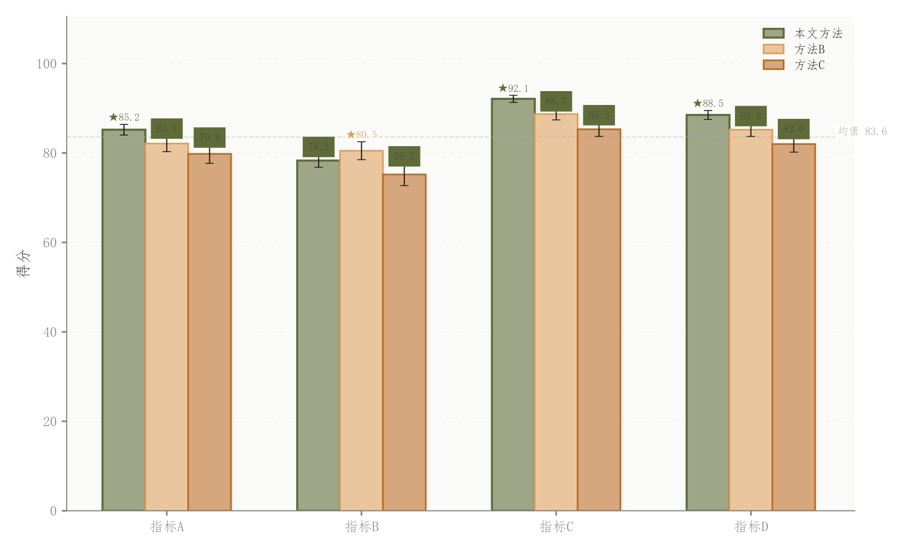
不同方法在多个指标上谁更高、波动多大？
- 需要的数据
- 类别×方法的数值矩阵；每项误差长度；指标名称
- 组合结构
- 单面板；每类并排多根柱
- 视觉特点
- 浅填充与较深描边；柱后阴影；误差棒；最优星号与均值线
适配注意与源码
调用 ID：basic.grouped_bar
背景为固定透明度纯色，非连续渐变；误差含义需明确；不同量纲不直接共用高度比较。
原名称：分组柱状图（Grouped Bar）— 淡色填充 + 原色边框 + 参考线 + 顶部数值 + 最优高亮
执行兼容调整：无
查看原始代码 · Markdown 卡片
bar:30 · bar:32
源码保真要点
以完整源码为底稿；点击行号查看实现。允许适配数据，重点核对这些结构。
浅柱、描边与背后阴影
保留：保留 _lighten 浅填充、同色深描边、后方偏移浅阴影与独立误差棒，不合并成实色柱。最优高亮和均值参考有数据依据时保留。
可适配：组数、柱宽、误差长度、标签位置可调；误差和最优方向按数据含义计算。
L30–30 · L32–36 · L50–50
源码差异只提供核对线索，仍按现有流程看实际输出。
模板 002
堆叠柱与总量趋势
组成 · 趋势
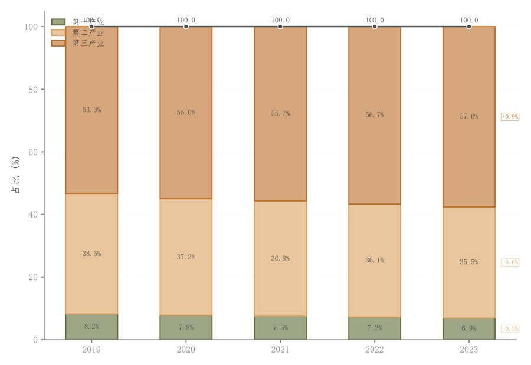
各时期总量由哪些部分构成？
- 需要的数据
- 时期×成分的非负数值；类别标签
- 组合结构
- 单面板堆叠柱；柱顶总量折线
- 视觉特点
- 浅填充和描边；柱内占比；末端同比标注
适配注意与源码
调用 ID：basic.stacked_bar
成分应可相加；总量与百分比读法分开；不是各组原始样本分布。
原名称：堆叠柱状图（Stacked Bar）— 淡色填充 + 原色边框 + 趋势线 + 自动对比度标签 + 同比变化
执行兼容调整：无
查看原始代码 · Markdown 卡片
bar:22 · plot:39
源码保真要点
以完整源码为底稿；点击行号查看实现。允许适配数据，重点核对这些结构。
堆叠内部与柱顶总量
保留：保留浅填充深描边、逐层 bottom 累加及柱顶总量折线，内部标签与总量标签分开。
可适配：成分数、时间点、位置与精度可调；百分比和总量分清，成分必须可相加。
L22–24 · L39–40
源码差异只提供核对线索，仍按现有流程看实际输出。
模板 003
多序列折线与分层区间带
趋势 · 误差
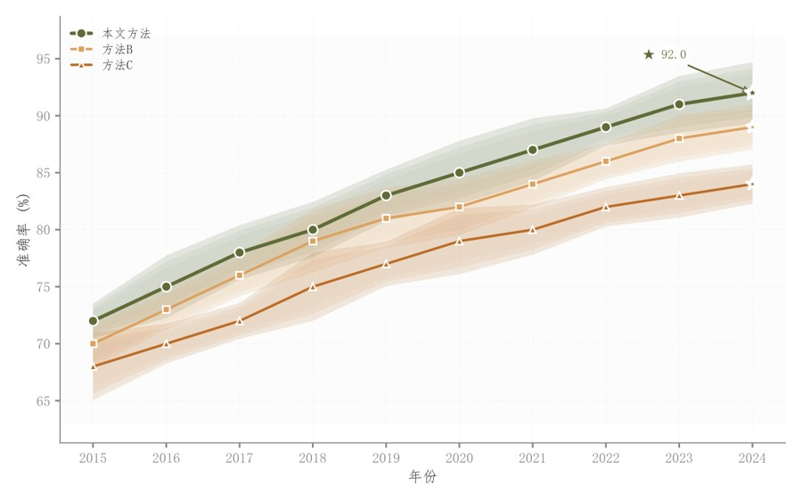
不同序列如何变化，波动范围是否重叠？
- 需要的数据
- 有序横轴；各序列数值与误差宽度
- 组合结构
- 单面板多折线；嵌套色带
- 视觉特点
- 三层透明置信带；不同点形；主序列加粗；极值箭头
适配注意与源码
调用 ID：basic.line
背景为纯色；色带为三档叠加，非连续渐变；示例误差随机生成，实用时替换真实区间。
原名称：折线图（渐变填充 + 极值标注箭头 + 微妙网格）
执行兼容调整：无
查看原始代码 · Markdown 卡片
fill_between:28 · plot:32 · scatter:38
源码保真要点
以完整源码为底稿；点击行号查看实现。允许适配数据，重点核对这些结构。
三层色带的外缘可见性
保留：区间由外向内收窄，alpha 按 0.15→0.08→0.03 对应外、中、内层。保留宽度与透明度的对应关系，不能仅因三层都存在就认定保真。
可适配：以真实 SD/SE/CI 或明确的范围替换模拟宽度；区间含义、宽度和坐标可变。数据不支持区间时不造数，并说明省略。
L24–29
主次折线、白边点和极值
保留：保留主次线宽、不同点形、白色点边及有数据依据的极值标记；换色不应覆盖这些设置。
可适配：主序列身份、点数、极值方向和标注位置按任务变化；没有主序列时不虚构主次。
L31–46
源码差异只提供核对线索，仍按现有流程看实际输出。
模板 004
散点回归与双边际密度
关联 · 分布 · 组合
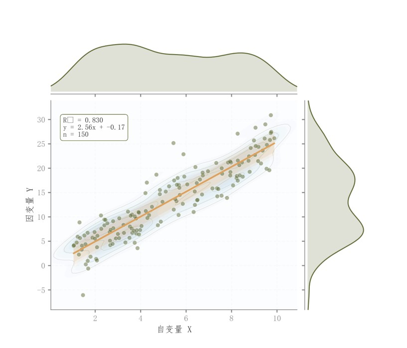
两个连续变量如何关联，各自分布怎样？
- 需要的数据
- 逐样本配对的x、y；可选样本标签
- 组合结构
- 中央散点；上方x密度；右方y密度
- 视觉特点
- 二维KDE等高线；回归线与色带；浅色边际填充；拟合信息框
适配注意与源码
调用 ID：basic.scatter_regression
需要原始配对样本；KDE不适合常量或极少样本；示例回归色带不能直接当作已计算的正式置信区间。
原名称：散点图（KDE 等高线 + 柔和边际密度 + 回归公式框 + 年份标签）
执行兼容调整：无
查看原始代码 · Markdown 卡片
contourf:28 · contour:29 · scatter:32 · plot:38 · fill_between:42 · fill_between:56 · plot:57 · fill_betweenx:67
相近候选
简洁回归散点与边际KDE · 二维密度与双边际联合图 · 六边形计数与边际直方 · 气泡与双边际密度 · 二维密度等高线与散点
源码保真要点
以完整源码为底稿；点击行号查看实现。允许适配数据，重点核对这些结构。
密度、回归和双边际的层次
保留：保留中央浅密度面与轮廓、白边散点、回归色带，以及顶部和右侧的浅填充密度，不缩成单散点图。
可适配：由真实配对样本计算回归和区间；KDE 带宽、边际大小、连续色相可调。
L28–28 · L29–29 · L32–32 · L42–44 · L56–56 · L67–67
源码差异只提供核对线索，仍按现有流程看实际输出。
模板 005
带双侧树状图的下三角相关矩阵
关联 · 矩阵 · 聚类
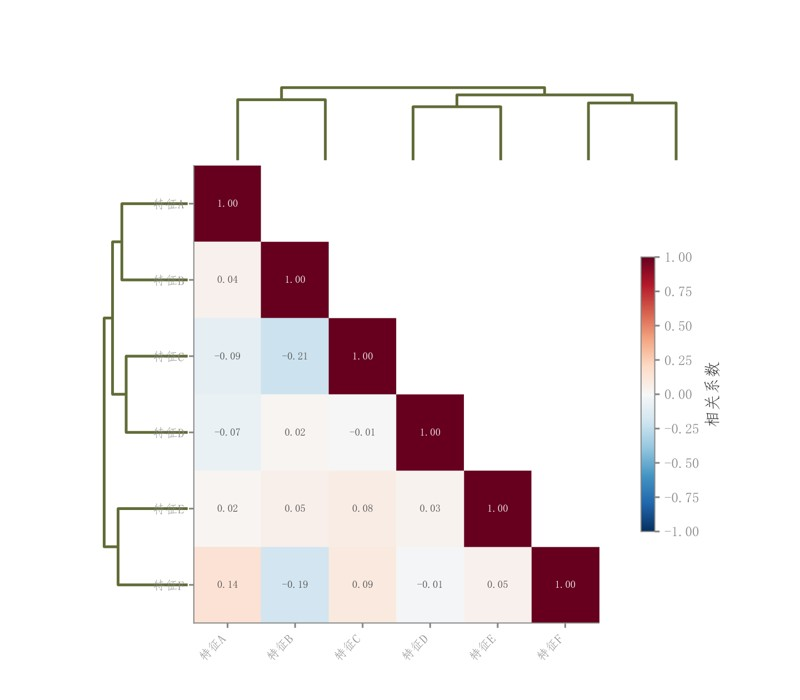
变量两两相关及相近结构怎样？
- 需要的数据
- 样本×连续变量矩阵；变量标签
- 组合结构
- 下三角热力图；顶部及左侧树状图；右侧色条
- 视觉特点
- 红蓝发散色阶；白色上三角；格内数值
适配注意与源码
调用 ID：basic.heatmap
当前树叶顺序未同步重排相关矩阵；左侧树线邻近标签。用于选结构时需知道这些原示例限制。
原名称：热力图（fig.add_axes 手动布局 + 聚类树状图 + 下三角遮罩 + 分组色条）
执行兼容调整：无
查看原始代码 · Markdown 卡片
dendrogram:24 · dendrogram:33 · imshow:45 · add_patch:63
相近候选
分布与Pearson成对关系矩阵 · 残差小提琴与Pearson完整组合 · 相关显著性热图与顶部树 · 简洁下三角相关矩阵
源码保真要点
以完整源码为底稿；点击行号查看实现。允许适配数据，重点核对这些结构。
聚类与遮罩下三角
保留：保留树状图对应的变量重排、下三角遮罩、数值与色条；相关使用发散映射。
可适配：变量数量、排序、字体和发散色相可变；无数据处与零相关区分。
L45–45 · L63–64 · L66–66
源码差异只提供核对线索，仍按现有流程看实际输出。
热图默认读取项目配色；连续插值、中性色、透明度及数据归一化保留，数值文字按实际底色选择对比色。
模板 006
环形构成图
组成
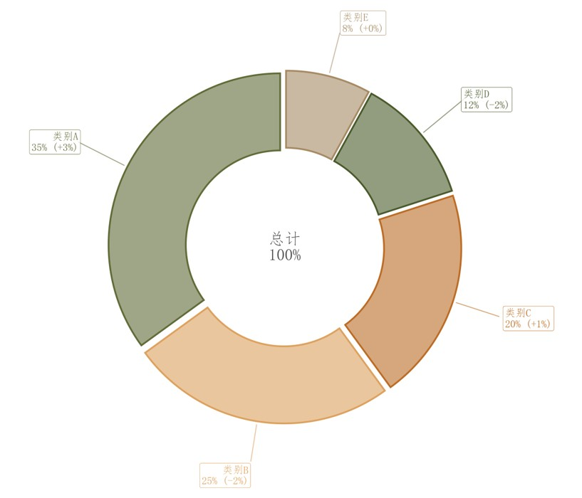
少量类别占整体多少，各自变化多少？
- 需要的数据
- 非负分量；类别名；可选同比或变化值
- 组合结构
- 单面板圆环；中心摘要；外置引线标签
- 视觉特点
- 浅色扇区；同色描边；白色分隔；中心留白
适配注意与源码
调用 ID：basic.donut
类别过多或占比接近时难精确比较；变化率是另一个输入，不由当前占比自动得到。
原名称：环形图（淡色填充 + 原色边框 + 外部连线标签 + 变化率标注）
执行兼容调整：无
查看原始代码 · Markdown 卡片
plot:37
源码保真要点
以完整源码为底稿；点击行号查看实现。允许适配数据，重点核对这些结构。
浅扇区和环形留白
保留：保留浅扇区、独立深描边、环宽形成的中心留白及外置引线标签，不改成实心饼。
可适配：类别、扇区角度、引线位置随真实占比变化；中心摘要与变化标签必须有依据。
L17–21 · L25–25 · L37–38
源码差异只提供核对线索，仍按现有流程看实际输出。
模板 007
竖向雨云分布组合
分布 · 比较 · 组合
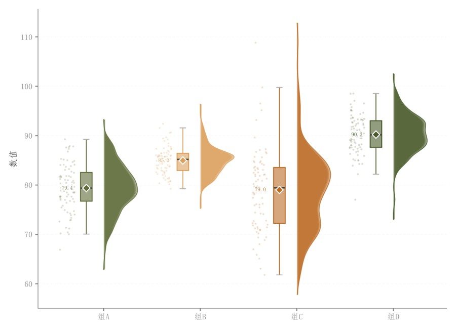
各组样本的中心、离散与密度形状如何？
- 需要的数据
- 分组标签与每组原始连续样本
- 组合结构
- 每组左散点、中窄箱、右半小提琴
- 视觉特点
- 六层透明半小提琴；白边均值菱形；错位排列
适配注意与源码
调用 ID：basic.raincloud
六层叠加而非连续渐变；小样本、常量或重复值很多时密度形状需谨慎适配。
原名称：Rain Cloud 图（淡色填充 + 原色边框 + 半小提琴 + 箱线 + 抖动散点 + 均值菱形）
执行兼容调整：无
查看原始代码 · Markdown 卡片
fill_betweenx:28 · plot:31 · boxplot:34 · scatter:44 · scatter:47
相近候选
完整小提琴与箱线显著性比较 · 类别内多方法小提琴 · 堆叠山脊密度 · 横向长尾分布雨云与分位标记 · 雨云分布与效应量显著性 · 模型误差横向雨云
源码保真要点
以完整源码为底稿；点击行号查看实现。允许适配数据，重点核对这些结构。
六层半密度与深轮廓
保留：保留六层填充的偏移、收缩和 alpha 计算，以及最外侧独立轮廓；不压成一片纯色。
可适配：由真实组样本计算密度，可调带宽和宽度；检查小样本、常量组是否支持 KDE。
L20–31
散点、窄箱、半小提琴错位
保留：沿横向保留左散点、中窄箱、右半小提琴关系和白边均值菱形；箱体保留浅填充与深描边。
可适配：组数、间距、点密度和标签可调，均值由当前样本计算，不固定示例偏移量。
L34–48
源码差异只提供核对线索，仍按现有流程看实际输出。
模板 008
堆叠面积与事件标记
组成 · 趋势
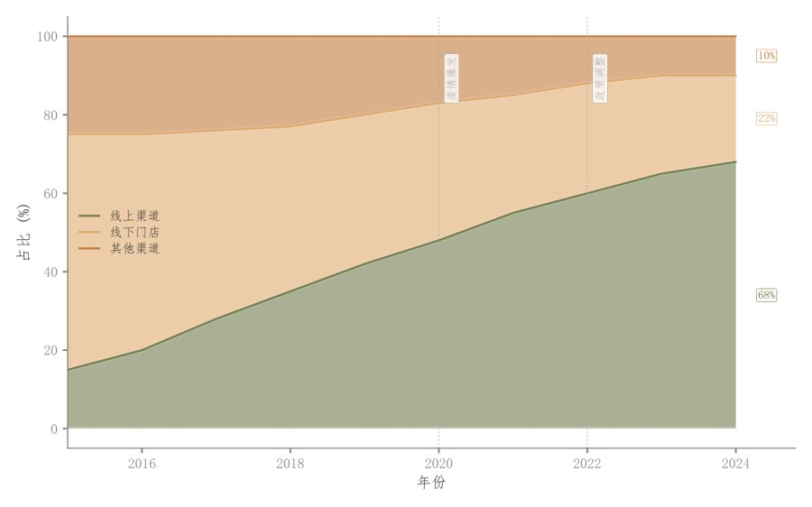
组成份额如何随时间转移？
- 需要的数据
- 有序时间；各组成分量；事件日期
- 组合结构
- 单面板累计面积堆叠；事件竖线
- 视觉特点
- 三层近重合填充；顶部轮廓；末端占比标签
适配注意与源码
调用 ID：basic.area
主要区域近似纯色，深浅变化集中在边缘；百分比数据需保证每期加总口径一致。
原名称：面积图（渐变填充 + 事件标记线 + 端点标注）
执行兼容调整：无
查看原始代码 · Markdown 卡片
fill_between:20 · plot:23
相近候选
居中流带图 · 方差分解总览与次要成分放大
源码保真要点
以完整源码为底稿；点击行号查看实现。允许适配数据，重点核对这些结构。
三层叠加与累计轮廓
保留：保留近重合的三层填充及每成分顶部独立轮廓；累计上下边界随成分递增，不以单片不透明面积代替。
可适配：成分数与实际规模可变，内缩量按量纲调整以避免薄成分翻转；事件线仅标真实事件。
L20–21 · L23–23
源码差异只提供核对线索，仍按现有流程看实际输出。
模板 009
贡献排序与累计占比
排序 · 组成 · 组合
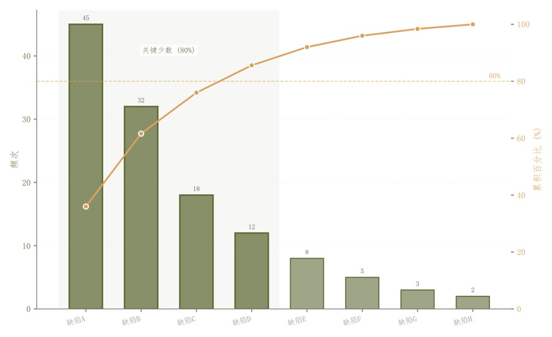
哪些少数因素贡献了大部分总量？
- 需要的数据
- 非负类别贡献值
- 组合结构
- 降序柱图；右轴累计百分比曲线
- 视觉特点
- 重点柱加深；80%阈值；贡献区域浅阴影
适配注意与源码
调用 ID：basic.pareto
这是贡献累计图，不是多目标优化Pareto前沿；累计占比要求总量为正。
原名称：竖向帕累托图（柱状图 + 累积百分比折线 + 80% 分界线）
执行兼容调整：无
查看原始代码 · Markdown 卡片
bar:21 · plot:38
源码保真要点
以完整源码为底稿；点击行号查看实现。允许适配数据，重点核对这些结构。
贡献柱和累计曲线
保留：保留浅柱深边、重点柱加深、累计百分比曲线与贡献区域浅阴影。
可适配：按当前贡献值排序并重算累计占比；阈值按问题设定，标签空间可调。
L21–23 · L28–28 · L38–39 · L49–49
源码差异只提供核对线索，仍按现有流程看实际输出。
模板 010
柱线双轴组合
趋势 · 比较 · 组合
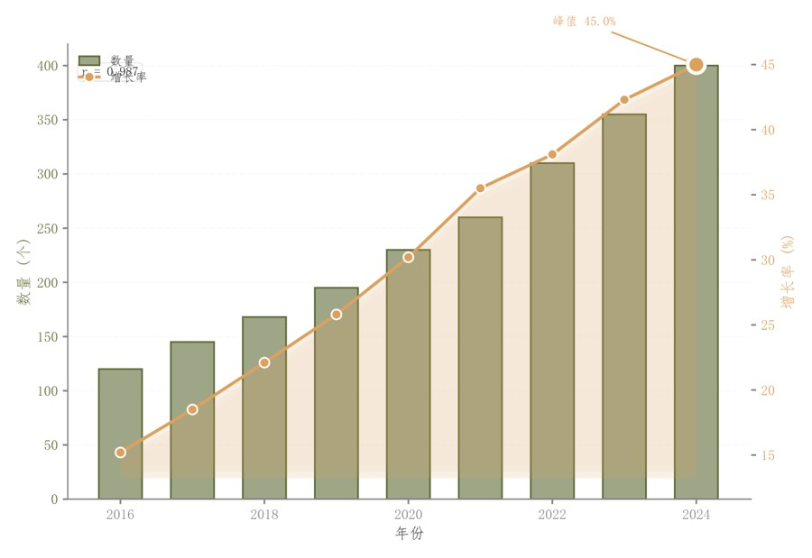
总量与另一项不同单位指标如何共同变化？
- 需要的数据
- 同一时间轴；两组数值
- 组合结构
- 左轴柱；右轴折线和填充
- 视觉特点
- 浅柱描边；三层折线下填充；峰值高亮；相关框
适配注意与源码
调用 ID：basic.dual_axis
双轴缩放会影响观感；三层填充并非连续渐变；相关不代表因果。
原名称：双轴图（淡色填充 + 原色边框柱 + 渐变填充折线 + 相关性标注框 + 峰值高亮）
执行兼容调整：无
查看原始代码 · Markdown 卡片
bar:14 · bar:19 · plot:22 · fill_between:25 · scatter:31
源码保真要点
以完整源码为底稿；点击行号查看实现。允许适配数据，重点核对这些结构。
双轴浅柱与分层曲线填充
保留：保留两轴的柱与折线区分、浅柱深边和阴影、三层折线下填充及白边峰值。
可适配：两轴单位与刻度分别适配，填充基线随数据范围调整；相关摘要重新计算。
L14–16 · L19–19 · L22–23 · L25–27
源码差异只提供核对线索，仍按现有流程看实际输出。
模板 011
完整小提琴与箱线显著性比较
分布 · 比较 · 组合
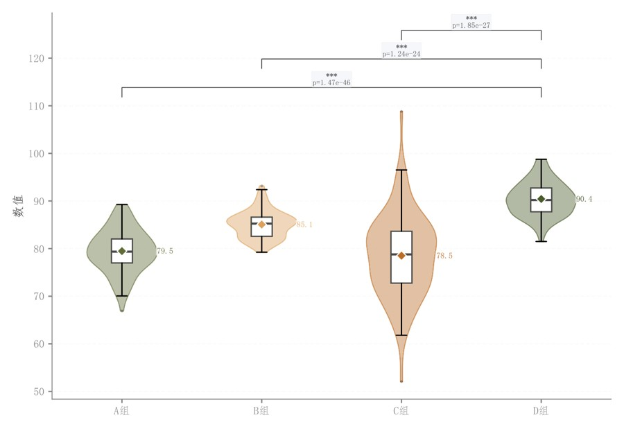
多组分布差异及组间检验结果如何？
- 需要的数据
- 各组原始连续样本；分组标签
- 组合结构
- 竖向对称小提琴；内部窄箱；顶部检验括号
- 视觉特点
- 浅色琴体与轮廓；均值菱形；显著性括号
适配注意与源码
调用 ID：basic.raincloud_violin
实际无独立抖动散点，区别于半小提琴雨云图；检验方法和多重比较需匹配任务。
原名称：Rain Cloud 小提琴图（淡色填充 + 原色边框 + 显著性括号 + 完整分布展示）
执行兼容调整：无
查看原始代码 · Markdown 卡片
violinplot:14 · boxplot:24 · scatter:33 · plot:42
相近候选
竖向雨云分布组合 · 类别内多方法小提琴 · 堆叠山脊密度 · 横向长尾分布雨云与分位标记 · 雨云分布与效应量显著性 · 模型误差横向雨云
源码保真要点
以完整源码为底稿；点击行号查看实现。允许适配数据，重点核对这些结构。
对称琴体与内部窄箱
保留：保留浅色半透明对称琴体、深轮廓、内部窄箱与均值菱形；不是左右错位的半雨云。
可适配：组数与间距可变；箱线和均值由样本计算，比较括号只用于有效检验。
L14–15 · L21–21 · L24–29 · L33–34
源码差异只提供核对线索，仍按现有流程看实际输出。
模板 012
折线柱状散点直方四面板
组合 · 趋势 · 比较 · 分布
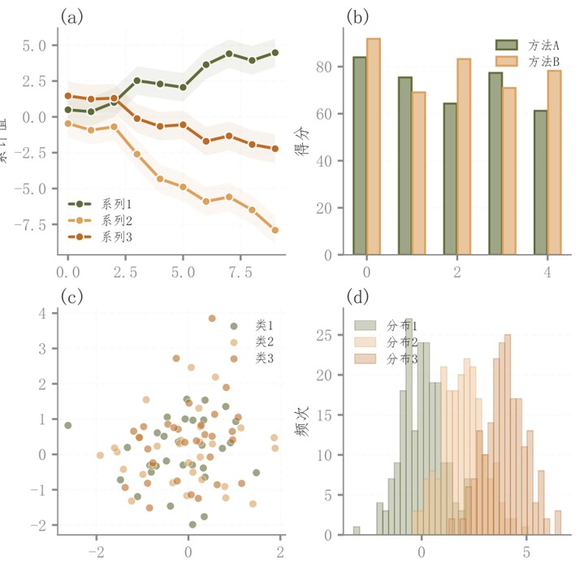
怎样在一页给出四种互补概览？
- 需要的数据
- 趋势序列、类别数值、配对样本和分组分布
- 组合结构
- 2×2：折线、分组柱、散点、直方图
- 视觉特点
- 统一浅填充与点形；紧凑子图标签
适配注意与源码
调用 ID：basic.multipanel
示例四组数据相互独立；左上仅单层色带，左下未实际绘制注释所称KDE；组合语义需来自实际任务。
原名称：多面板子图（淡色填充 + 原色边框 + 带背景框标签 + 统一风格）
执行兼容调整：无
查看原始代码 · Markdown 卡片
plot:13 · fill_between:15 · bar:28 · scatter:40 · hist:51
源码保真要点
以完整源码为底稿；点击行号查看实现。允许适配数据，重点核对这些结构。
四面板共用视觉语言
保留：保留折线带、浅柱深边、透明散点和半透明直方的面板差异及共用样式，不各面板另起风格。
可适配：版面尺寸与数据规模可调；面板是否保留按表达目的决定，不能造区间补结构。
L13–14 · L15–15 · L28–29 · L40–41 · L51–52
源码差异只提供核对线索，仍按现有流程看实际输出。
模板 013
排名棒棒糖与徽章
排序 · 比较
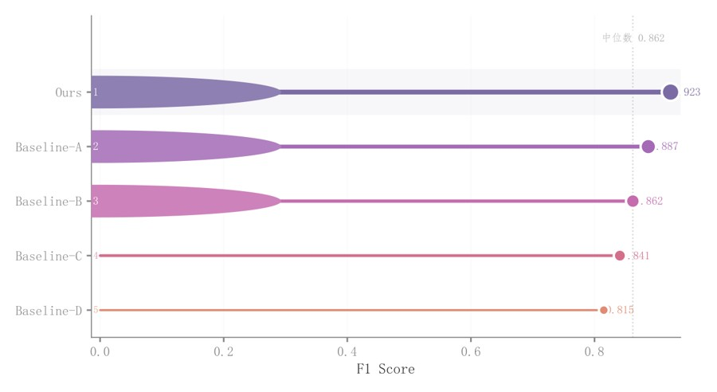
少量方法得分如何排序并突出领先者？
- 需要的数据
- 类别名称与单项得分
- 组合结构
- 横向棒棒糖；左端排名徽章
- 视觉特点
- 类别间紫到珊瑚色过渡；线宽和点大小映射分数；中位线
适配注意与源码
调用 ID：advanced.lollipop
单根线和点内部不是渐变；前三名圆徽章使用数据坐标，预览呈横向拉伸；不预判此设计必须修正。
原名称：Lollipop Chart — 棒棒糖图（渐变色茎 + 排名徽章 + 中位数参考线）
执行兼容调整：RGB 元组转十六进制以适配原 _lighten 接口，颜色含义不变
查看原始代码 · Markdown 卡片
plot:55 · scatter:60 · add_patch:75
源码保真要点
以完整源码为底稿；点击行号查看实现。允许适配数据，重点核对这些结构。
排名徽章与强度映射
保留：保留颜色随排名过渡、线宽和点面积随分数变化、白边端点与排名徽章；不要变成同宽同色的普通棒棒糖。
可适配：得分、名次及徽章数量据实更新，色相可替换但保留过渡；长名称可增加左边距。
L46–46 · L55–56 · L60–61 · L75–75
源码差异只提供核对线索，仍按现有流程看实际输出。
模板 014
前后对比哑铃图
比较 · 变化
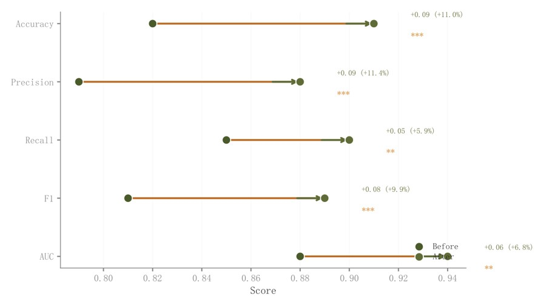
每个指标改善或下降了多少？
- 需要的数据
- 各指标前后值；可选变化率与显著性结果
- 组合结构
- 每行两个端点；细连接线和箭头
- 视觉特点
- 两端对比色；右侧增量；简洁共享数轴
适配注意与源码
调用 ID：advanced.dumbbell
这是汇总值对比，不显示个体配对分布；预览末行标签靠近右下图例。
原名称：Dumbbell Chart — 哑铃图（连接线 + 变化率 + 显著性标记）
执行兼容调整：无
查看原始代码 · Markdown 卡片
plot:24 · scatter:31 · scatter:33
相近候选
个体配对变化与均值箭头 · 两阶段斜率与排名变化 · 多阶段名次轨迹
源码保真要点
以完整源码为底稿；点击行号查看实现。允许适配数据，重点核对这些结构。
两端点、连接与变化
保留：保留两端颜色区分、白边点、连接线及方向箭头；变化文字与两端同一数轴对齐。
可适配：对象数量、间距和标注偏移可调，正负方向和变化率按数据更新。
L24–25 · L27–28 · L31–32 · L33–34
源码差异只提供核对线索，仍按现有流程看实际输出。
模板 015
两阶段斜率与排名变化
变化 · 排序
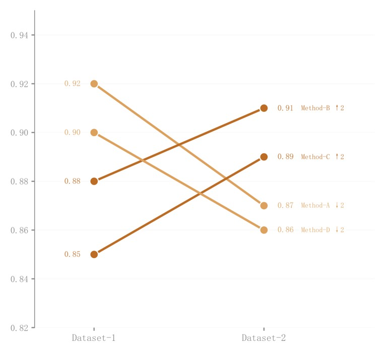
两个阶段的方法得分与名次怎样变化？
- 需要的数据
- 类别在两个阶段的数值
- 组合结构
- 左右两端连线；端点名称与名次
- 视觉特点
- 颜色区分类别；斜率表达增减；两侧数值标注
适配注意与源码
调用 ID：advanced.slope
只覆盖两个阶段；类别多时交叉拥挤；不能把得分斜率当成连续时间轨迹。
原名称：Slope Chart — 斜率图（颜色编码线 + 排名变化标注）
执行兼容调整：无
查看原始代码 · Markdown 卡片
plot:26 · scatter:30 · scatter:32
相近候选
个体配对变化与均值箭头 · 前后对比哑铃图 · 多阶段名次轨迹
源码保真要点
以完整源码为底稿；点击行号查看实现。允许适配数据，重点核对这些结构。
端点配对与两侧读数
保留：保留逐对象两端连接、白边端点、左右数值与对象身份，不把配对关系改成均值趋势。
可适配：左右两次测量与名次重新计算，标签可避让，保持同一可比尺度。
L26–27 · L30–31 · L32–33 · L36–37 · L38–39 · L46–48 · L50–51
源码差异只提供核对线索，仍按现有流程看实际输出。
模板 016
多阶段名次轨迹
排序 · 趋势
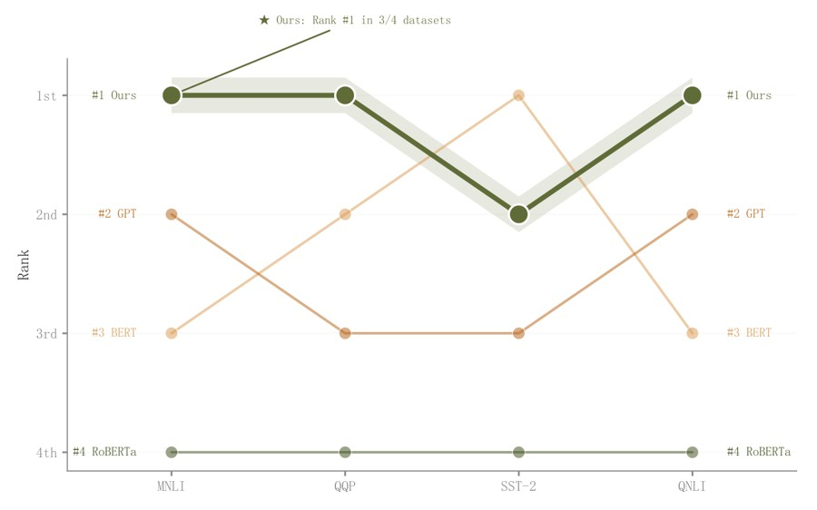
多个阶段谁领先，排名如何交换？
- 需要的数据
- 方法×阶段的名次或可转换为名次的表现
- 组合结构
- 横向阶段；纵向排名；多条名次折线
- 视觉特点
- 主方法粗线与透明宽带；两端名次标签
适配注意与源码
调用 ID：advanced.bump
宽带是高亮，不是误差；名次间距不反映原得分差距。
原名称：Bump Chart — 凹凸图（色带高亮 + 两端排名标签 + "本文"高亮）
执行兼容调整：无
查看原始代码 · Markdown 卡片
fill_between:28 · plot:32
相近候选
个体配对变化与均值箭头 · 前后对比哑铃图 · 两阶段斜率与排名变化
源码保真要点
以完整源码为底稿；点击行号查看实现。允许适配数据，重点核对这些结构。
排名线的主次层次
保留：保留主方法粗线、浅宽带和两端名次标签；宽带用于高亮名次路径，不能误标为统计置信区间。
可适配：阶段、排名及主方法按数据替换；插值仅为连接视觉，不能改变实际阶段名次。
L28–29 · L32–34
源码差异只提供核对线索，仍按现有流程看实际输出。
模板 017
流量分配桑基图
流向 · 组成 · 组合
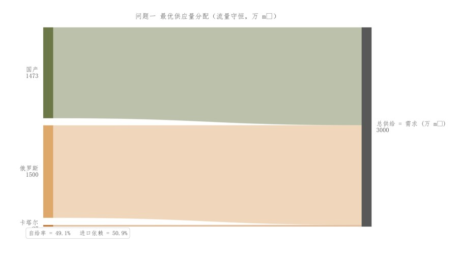
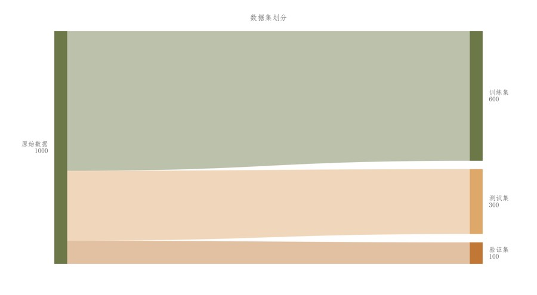
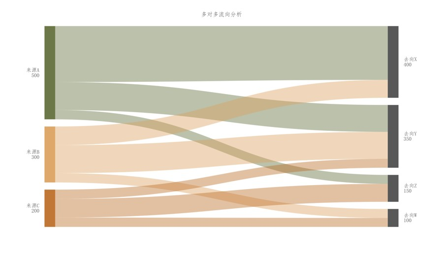
资源或样本如何从来源分配到去向？
- 需要的数据
- 来源节点、目标节点及非负流量；节点名称
- 组合结构
- 左右两列矩形节点；贝塞尔流带；包含多对一、一对多、多对多三个示例
- 视觉特点
- 半透明宽带；交叉叠色；节点总量标签；流量映射带宽
适配注意与源码
调用 ID：advanced.sankey
三个预览均来自同一完整代码块；需要核对各节点流量守恒；当前模板非任意多阶段网络布局器。
原名称：Sankey Diagram — 桑基图（D3 风格，矩形节点 + 贝塞尔流带）
执行兼容调整：无
查看原始代码 · Markdown 卡片
add_patch:64 · add_patch:74 · add_patch:107
源码保真要点
以完整源码为底稿；点击行号查看实现。允许适配数据，重点核对这些结构。
流带宽度与交叉叠色
保留：保留矩形节点与封闭贝塞尔宽带、alpha=0.42 的流带叠色及 alpha=0.92 的节点。宽带不能缩成普通连线。
可适配：流量、节点数、节点间距与控制点可变；分别核对两侧流量占比和守恒，不机械等宽。
L62–63 · L72–73 · L105–106
源码差异只提供核对线索，仍按现有流程看实际输出。
模板 018
累计增益阶梯与贡献色带
变化 · 组成 · 比较
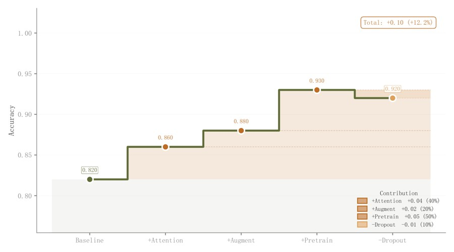
每个模块给累计表现增加或减少多少？
- 需要的数据
- 起始值；按步骤排列的增量
- 组合结构
- 阶梯线和圆点；各步贡献带向右延展
- 视觉特点
- 透明层带叠加；顶部数值；总增益框
适配注意与源码
调用 ID：advanced.waterfall
实际不是浮动柱瀑布图；固定透明度贡献带而非连续渐变；增量顺序决定展示路径。
原名称：Waterfall Chart — 瀑布图（彩色渐变柱图 + 连接线 + 顶部数值标注）
执行兼容调整：移除重复 handlelength 参数，保留首次声明的 1.6
查看原始代码 · Markdown 卡片
fill_between:30 · plot:32 · fill_between:36 · step:40 · scatter:45
相近候选
增减贡献浮动柱瀑布 · 消融配置柱状比较 · 相对基线发散条形
源码保真要点
以完整源码为底稿；点击行号查看实现。允许适配数据，重点核对这些结构。
阶梯线下的延展贡献带
保留：保留累计阶梯、白边圆点、各步贡献带向右延展的透明叠加；这个配方的设计不是浮动柱瀑布图。
可适配：步数、正负贡献和范围按当前数据重算；标签位置可调，不能平滑掉离散阶梯。
L30–31 · L36–37 · L40–40 · L45–46
源码差异只提供核对线索，仍按现有流程看实际输出。
模板 019
SHAP散点蜂群与平均贡献条
解释 · 分布 · 排序 · 组合
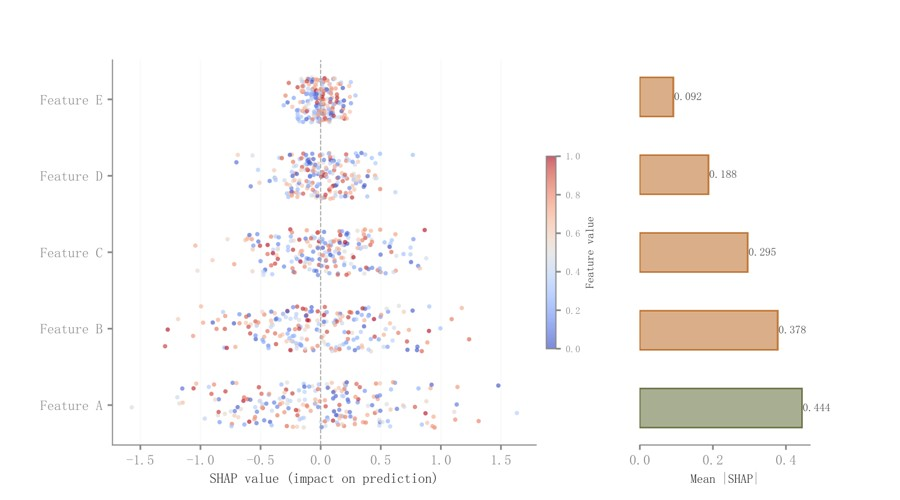
特征怎样影响预测，哪个特征整体贡献更大？
- 需要的数据
- 样本×特征SHAP值；对应特征值
- 组合结构
- 左侧抖动SHAP散点；右侧平均绝对贡献条
- 视觉特点
- 特征值红蓝映射；共享特征行；条形高亮
适配注意与源码
调用 ID：advanced.shap_summary
示例SHAP值是随机模拟，未计算模型解释；颜色与贡献正负是不同含义；需提供真实解释结果。
原名称：SHAP Summary Plot — SHAP 特征重要性图
执行兼容调整：无
查看原始代码 · Markdown 卡片
scatter:24 · barh:45
源码保真要点
以完整源码为底稿；点击行号查看实现。允许适配数据，重点核对这些结构。
共享特征行的散点与汇总条
保留：保留左侧透明抖动散点、特征值连续着色与右侧浅填充深描边的平均绝对贡献条，两侧同一特征顺序。
可适配：真实 SHAP、特征值、特征数量和排序可变；色条仍表示特征值，不混成类别颜色。
L24–25 · L36–36 · L45–46
源码差异只提供核对线索，仍按现有流程看实际输出。
模板 020
Bland–Altman一致性图
关联 · 误差
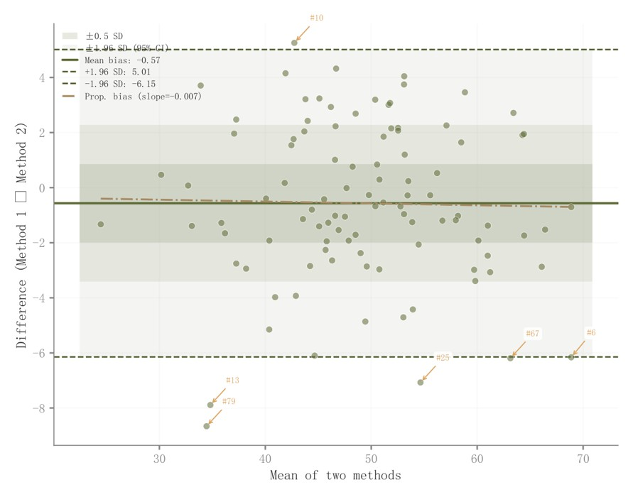
两种测量方法是否一致，偏差是否随量级变化？
- 需要的数据
- 同一样本的两种测量值
- 组合结构
- 均值横轴、差值纵轴；偏差与一致性界限
- 视觉特点
- 嵌套透明水平带；比例偏差线；异常点标签
适配注意与源码
调用 ID：advanced.bland_altman
带状区域主要按差值标准差绘制，不应笼统称为参数估计CI；一致性不等于高相关。
原名称：Bland-Altman Plot — Bland-Altman 一致性图（分层 CI 带 + 比例偏差线 + 异常值标签）
执行兼容调整：无
查看原始代码 · Markdown 卡片
fill_between:26 · fill_between:29 · fill_between:32 · scatter:35 · plot:51
源码保真要点
以完整源码为底稿；点击行号查看实现。允许适配数据，重点核对这些结构。
一致性界限与嵌套浅带
保留：保留均值差、界限线、三档浅色水平区和透明白边散点，不简化成一条回归线。
可适配：差值方向、SD 与一致性限按配对数据计算；一致性限不是均值置信区间，标签应准确。
L26–27 · L29–30 · L32–32 · L35–36 · L39–40 · L42–43 · L44–45 · L51–52
源码差异只提供核对线索，仍按现有流程看实际输出。
模板 021
生存阶梯与风险人数表
生存 · 趋势 · 组合
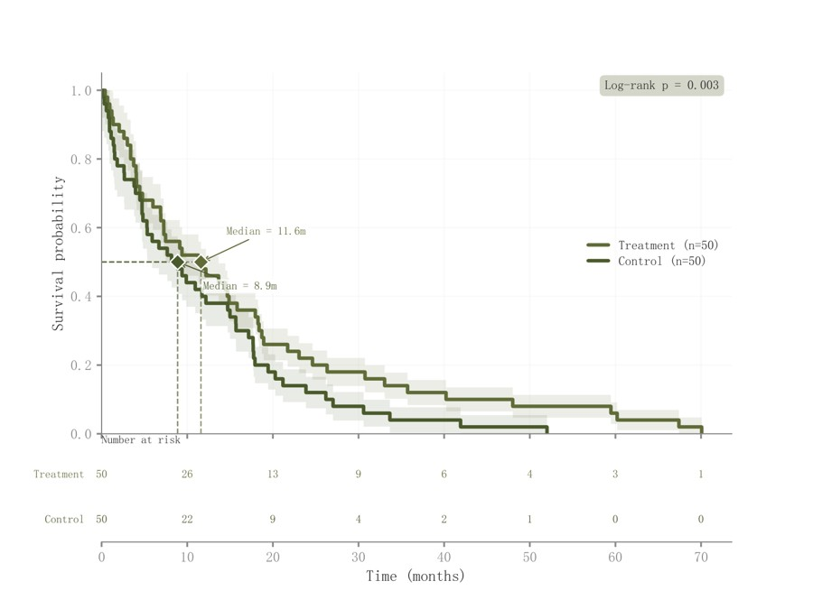
分组生存概率和在险人数如何随时间变化？
- 需要的数据
- 实际应用需生存时间、事件/删失状态与分组
- 组合结构
- 上方阶梯曲线及区间；下方风险表
- 视觉特点
- 阶梯细线；透明区间；中位生存期引线
适配注意与源码
调用 ID：advanced.kaplan_meier
示例为无删失时间的演示曲线，CI及log-rank标注含示意成分；不能替代正式生存估计。
原名称：Kaplan-Meier Survival Curve — 生存曲线（CI 带 + 中位数标记 + 风险人数表 + Log-Rank p）
执行兼容调整：无
查看原始代码 · Markdown 卡片
step:34 · fill_between:38 · step:42 · fill_between:45 · plot:58 · plot:59 · scatter:60 · plot:68
源码保真要点
以完整源码为底稿；点击行号查看实现。允许适配数据，重点核对这些结构。
阶梯、透明区间与风险表
保留：保留阶梯曲线与 step=post 的区间形状、下方风险表及可用的中位生存期引线，不平滑成连续曲线。
可适配：按实际时间、事件和删失计算生存率、区间及风险人数；未达到中位生存期时不造交点。
L34–34 · L38–38 · L42–42 · L45–45
源码差异只提供核对线索，仍按现有流程看实际输出。
模板 022
差异倍数与显著性火山图
筛选 · 关联
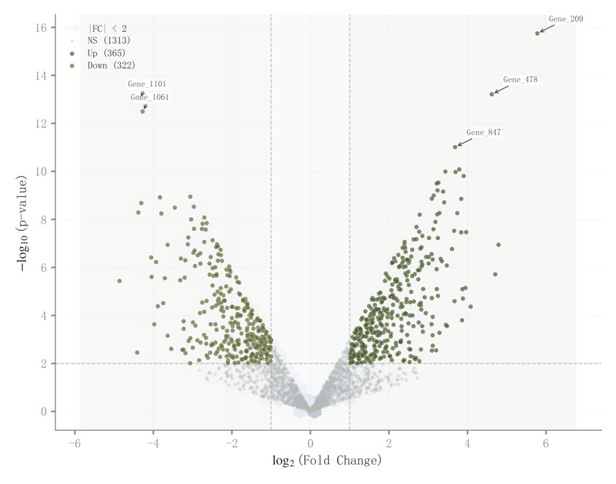
哪些特征变化幅度大且统计显著？
- 需要的数据
- 特征名；log2倍数变化；p值或校正p值
- 组合结构
- 单面板散点；横纵阈值线
- 视觉特点
- 中央阈值阴影；背景密度；重点特征引线
适配注意与源码
调用 ID：advanced.volcano
红蓝或上下调标签需对照实际语义；示例显著性是模拟，不能用于实证结论。
原名称：Volcano Plot — 火山图（基因差异表达：渐变密度背景 + 基因标签 + 倍数变化阴影）
执行兼容调整：无
查看原始代码 · Markdown 卡片
hexbin:21 · scatter:34 · scatter:36 · scatter:38
源码保真要点
以完整源码为底稿；点击行号查看实现。允许适配数据，重点核对这些结构。
阈值区与重点点云
保留：保留灰色背景点、两侧重点点的透明度差异、阈值参考与重点引线，不能让背景点遮没显著点。
可适配：倍数变化、检验结果、阈值和标签数量据实调整，显著性不能由视觉挑选。
L25–25 · L26–26 · L27–27 · L34–35 · L36–37 · L38–39 · L42–42 · L43–43 · L44–44 · L51–59
源码差异只提供核对线索，仍按现有流程看实际输出。
模板 023
概率校准与预测概率分布
预测 · 诊断 · 组合
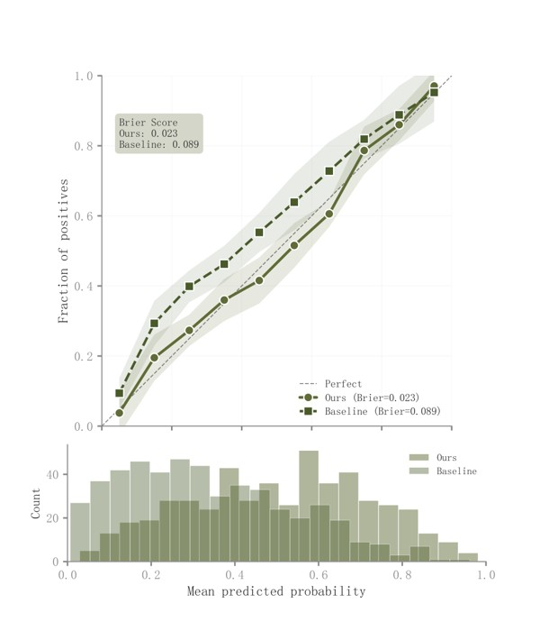
预测概率是否可靠，样本集中在哪些概率段？
- 需要的数据
- 预测概率与真实二分类结果；分箱统计及区间
- 组合结构
- 上方可靠性曲线；下方概率直方图；共享横轴
- 视觉特点
- 理想对角线；各曲线单层透明区间；Brier摘要
适配注意与源码
调用 ID：advanced.calibration
示例校准点、区间与Brier为演示输入；正式图需从同一批预测与标签计算，稀疏箱不宜强行平滑。
原名称：Calibration Plot — 校准曲线（渐变 CI 带 + 底部直方图 + Brier Score 标注）
执行兼容调整：无
查看原始代码 · Markdown 卡片
plot:30 · fill_between:34 · plot:36 · fill_between:42 · plot:44 · hist:66 · hist:68
相近候选
历史与预测分位数扇形图 · 时序预测与误差侧分布 · 预测对实际散点与下方残差分布
源码保真要点
以完整源码为底稿；点击行号查看实现。允许适配数据，重点核对这些结构。
可靠性曲线加概率直方
保留：保留上方校准曲线的各自单层透明区间、不同点形/线型、理想线与下方概率直方。代码不是每条线多层渐变。
可适配：区间、分箱和 Brier 从实际概率与标签计算；两部分共享概率范围，面板尺寸可调且检查绘图区对齐。
L30–30 · L34–35 · L36–38 · L42–43 · L44–46 · L66–67 · L68–69
源码差异只提供核对线索，仍按现有流程看实际输出。
模板 024
Meta分析漏斗图
误差 · 诊断
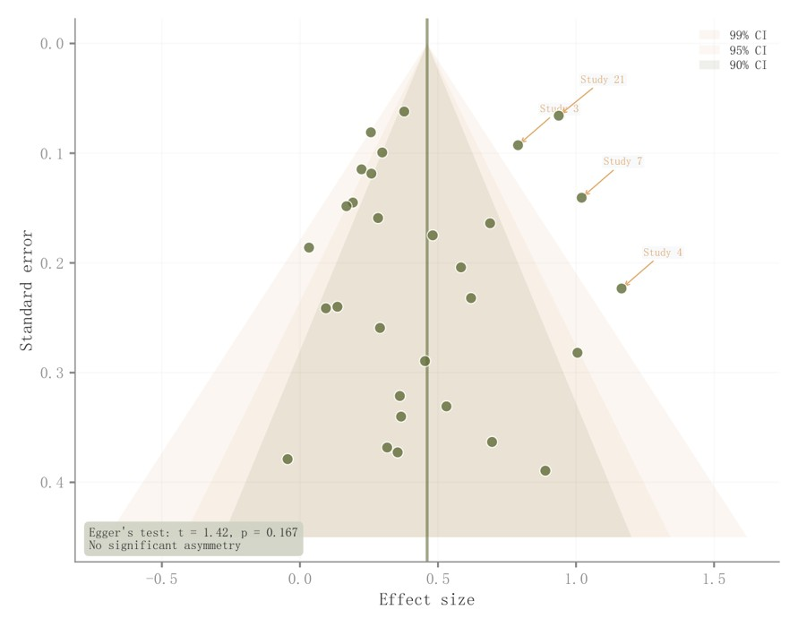
研究效应与精度关系是否呈不对称分布？
- 需要的数据
- 每项研究的效应量和标准误；汇总效应
- 组合结构
- 效应量横轴；倒置标准误纵轴
- 视觉特点
- 90/95/99%嵌套漏斗区；汇总竖线；异常研究标签
适配注意与源码
调用 ID：advanced.funnel
嵌套区是参考界限；Egger及汇总统计需用真实研究估计，不能只凭形状断言偏倚。
原名称：Funnel Plot — 漏斗图（Meta 分析：渐变 CI 带 90/95/99% + 研究标签 + Egger 检验）
执行兼容调整：无
查看原始代码 · Markdown 卡片
fill_betweenx:29 · scatter:38
源码保真要点
以完整源码为底稿；点击行号查看实现。允许适配数据，重点核对这些结构。
三档漏斗区而非单片三角
保留：保留 99/95/90% 的三档嵌套区与透明度对应关系、汇总竖线和倒置标准误轴；这里的层序不照搬折线图。
可适配：由效应与标准误计算边界和汇总量；色相可变，异常标注与检验结果须重算。
L29–32 · L35–35 · L38–39
源码差异只提供核对线索，仍按现有流程看实际输出。
模板 025
多指标点区间与汇总菱形
比较 · 误差 · 组合
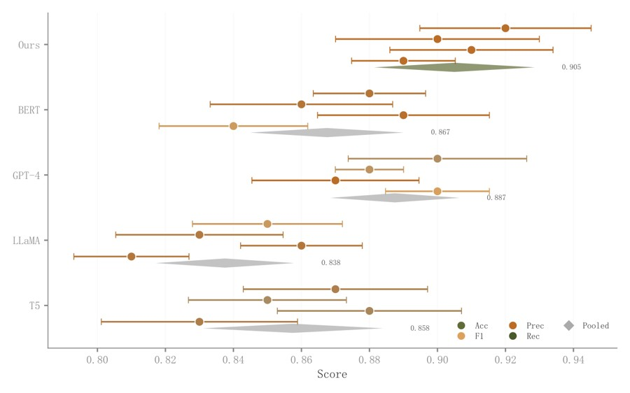
每个方法的多个指标及区间如何比较？
- 需要的数据
- 方法×指标得分；各项CI；可选p值与汇总量
- 组合结构
- 每方法一行；多个错位点区间；汇总菱形
- 视觉特点
- 点色随模拟显著性；菱形摘要；轻量网格
适配注意与源码
调用 ID：advanced.dot_ci
不同单位先统一可比尺度；示例汇总为演示，不能自动解释为Meta分析合并效应。
原名称：Dot Plot with CI — 点图+置信区间（按显著性渐变着色 + 汇总菱形）
执行兼容调整：无
查看原始代码 · Markdown 卡片
errorbar:38 · fill:49
相近候选
效应森林图与权重摘要 · 分层异质性森林图
源码保真要点
以完整源码为底稿；点击行号查看实现。允许适配数据，重点核对这些结构。
错位点区间和汇总菱形
保留：保留方法行内错位的点区间、白边点与单独汇总菱形；不能只留中心点丢区间。
可适配：区间、颜色映射与汇总须有真实计算依据；示例 p 值和简单平均不能直接用作正式统计，图例与点色需一致。
L38–41 · L49–50
源码差异只提供核对线索，仍按现有流程看实际输出。
模板 026
列聚类树与数值热力矩阵
矩阵 · 聚类
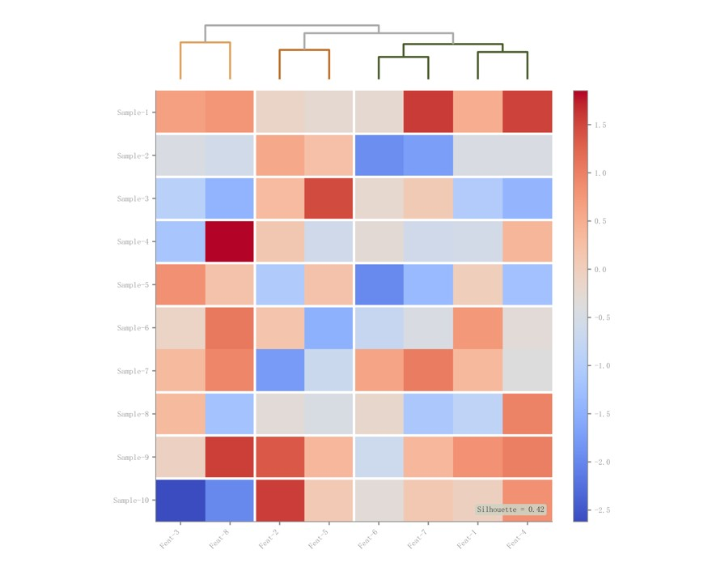
数值矩阵有哪些相似列和块结构？
- 需要的数据
- 样本×特征矩阵；行列标签
- 组合结构
- 顶部列树状图；下方矩形热图；侧色条
- 视觉特点
- 红蓝色阶；白格线；聚类边界
适配注意与源码
调用 ID：advanced.cluster_heatmap
当前预览是首个主要示例；原章节另有双侧聚类变体尚无此图库预览；轮廓系数标注需核实真实计算。
原名称：Cluster Heatmap — 聚类热力图（带树状图 + 聚类边界 + 轮廓系数标注）
执行兼容调整：无
查看原始代码 · Markdown 卡片
dendrogram:30 · imshow:41
源码保真要点
以完整源码为底稿；点击行号查看实现。允许适配数据，重点核对这些结构。
树状图与重排矩阵
保留：保留主要示例的顶部树状图、按聚类重排的热图、格线与色条，树叶顺序与矩阵列一致。
可适配：矩阵规模、聚类方法和色阶按数据选择；原章节另一个变体不受这个预览结构限制。
L30–32 · L41–41 · L60–60
源码差异只提供核对线索，仍按现有流程看实际输出。
热图默认读取项目配色；连续插值、中性色、透明度及数据归一化保留，数值文字按实际底色选择对比色。
模板 027
社区网络与透明凸包
网络 · 聚类
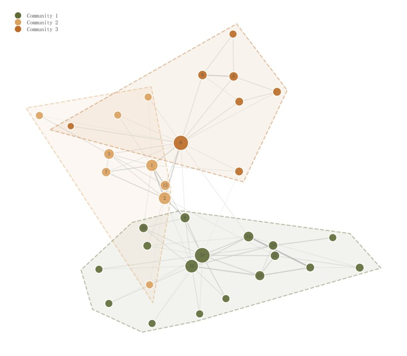
网络社区、枢纽和连接强度怎样分布？
- 需要的数据
- 节点、边与权重；可计算社区和度
- 组合结构
- 力导向节点连线；社区外围多边形
- 视觉特点
- 透明社区凸包；节点大小映射度；边色和宽度映射权重
适配注意与源码
调用 ID：advanced.network
布局距离并非地理距离；单条边内部不是渐变；凸包是展示包络而非统计置信域。
原名称：Network Graph — 网络图（节点大小映射度 + 社区凸包 + 边权渐变）
执行兼容调整：保留节点 artist 以设置绘制层级；NetworkX 不接受 zorder 参数，改为在返回对象上设置同值
查看原始代码 · Markdown 卡片
fill:46 · plot:48 · plot:63
源码保真要点
以完整源码为底稿；点击行号查看实现。允许适配数据，重点核对这些结构。
社区浅包络与加权连边
保留：保留社区透明凸包及虚线边缘、节点大小映射度、边宽和透明度映射权重，不能统一成同色同宽网络。
可适配：按实际网络重算社区和布局；小社区或退化凸包可省包络并说明，接口兼容修改不改变视觉目的。
L46–47 · L48–50 · L63–64 · L67–68
源码差异只提供核对线索，仍按现有流程看实际输出。
模板 028
多指标方法排名热力图
比较 · 排序 · 矩阵
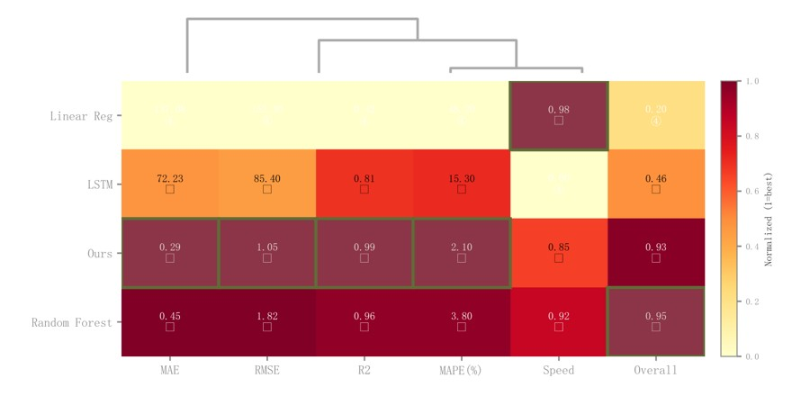
混合优劣方向的指标下，方法整体表现怎样？
- 需要的数据
- 方法×指标原值；每项高优或低优方向
- 组合结构
- 指标列与综合列；方法行；顶部聚类树
- 视觉特点
- 格内原值和名次；列最优边框；综合分
适配注意与源码
调用 ID：advanced.method_heatmap
需要正确归一化和方向；奖牌字形可能缺失，浅黄格白字偏淡；树状图与矩阵排序应核对。
原名称：Method Comparison Heatmap — 方法对比热力图（排名标注 🥇🥈🥉 + 树状图 + 列最优高亮 + 综合排名）
执行兼容调整：无
查看原始代码 · Markdown 卡片
dendrogram:44 · imshow:55 · add_patch:95 · add_patch:100
相近候选
归一化多指标雷达对比 · 多方案雷达与交替背景环 · 多指标平行坐标 · 多模型多指标预测热力排名
源码保真要点
以完整源码为底稿；点击行号查看实现。允许适配数据，重点核对这些结构。
格内原值与列最优框
保留：保留按列归一化着色、格内原值/名次、列最优边框和综合列，着色与显示数值分开。
可适配：指标数量、优劣方向、综合权重和聚类次序按任务更新，不将不同量纲直接平均。
L55–55 · L86–87 · L91–94 · L97–99
源码差异只提供核对线索，仍按现有流程看实际输出。
热图默认读取项目配色；连续插值、中性色、透明度及数据归一化保留，数值文字按实际底色选择对比色。
模板 029
多指标平行坐标
比较 · 多维
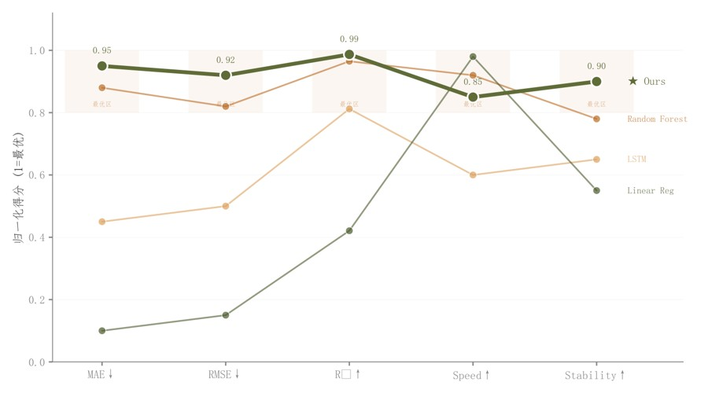
不同方法在哪些指标上互有优势？
- 需要的数据
- 方法×指标矩阵；统一到可比方向与范围
- 组合结构
- 并排竖轴；方法折线贯穿各维度
- 视觉特点
- 主方法加粗；顶部优势区域浅阴影
适配注意与源码
调用 ID：advanced.parallel_coordinates
高低方向必须统一；不同量纲原值不能直接共轴；阴影是优势区域而非CI。
原名称：Parallel Coordinates — 平行坐标图（实线 + "本文"高亮 + 最优区域阴影）
执行兼容调整：无
查看原始代码 · Markdown 卡片
fill_between:25 · plot:36 · scatter:39 · plot:50 · scatter:52
相近候选
归一化多指标雷达对比 · 多方案雷达与交替背景环 · 多指标方法排名热力图 · 多模型多指标预测热力排名
源码保真要点
以完整源码为底稿；点击行号查看实现。允许适配数据，重点核对这些结构。
多维主次路径
保留：保留主路径粗线和白边大点、其他路径较浅较细以及有含义的优势区浅底。
可适配：维度和轴顺序可变；各维归一化与优劣方向必须一致，主方法由任务确定。
L25–26 · L36–37 · L39–40 · L50–51 · L52–53
源码差异只提供核对线索，仍按现有流程看实际输出。
模板 030
PCA样本得分与载荷双标图
多维 · 关联 · 降维
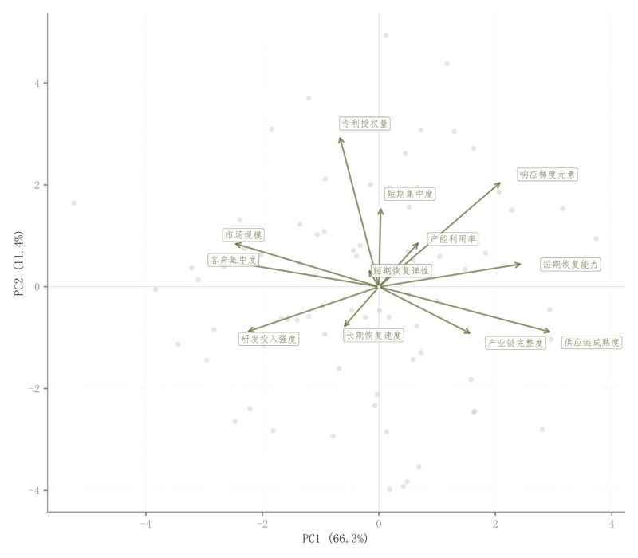
样本结构与变量贡献方向怎样对应？
- 需要的数据
- 前两主成分样本得分；载荷；解释方差
- 组合结构
- 样本散点叠加载荷箭头
- 视觉特点
- 浅灰样本；原点十字；箭头端变量名
适配注意与源码
调用 ID：advanced.pca_biplot
示例得分和载荷为模拟，未运行PCA；载荷与得分缩放需一致；原点附近标签偏密。
原名称：PCA Biplot — PCA 双标图（载荷箭头 + 智能标签 + 解释方差）
执行兼容调整：补充代码使用但漏导入的 COLORS
查看原始代码 · Markdown 卡片
scatter:23
源码保真要点
以完整源码为底稿；点击行号查看实现。允许适配数据，重点核对这些结构。
浅样本点与载荷箭头
保留：保留浅灰样本层、原点十字、载荷箭头与端点变量标签，不只画二维点云。
可适配：PCA 得分、载荷、解释方差和显示缩放由实际分析确定，标签可以避让。
L23–24 · L48–48 · L49–49
源码差异只提供核对线索，仍按现有流程看实际输出。
模板 031
Taylor模型综合比较
预测 · 比较 · 多维
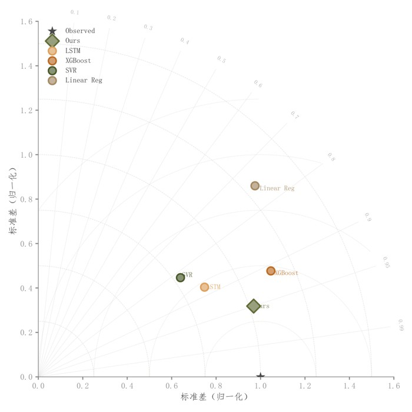
模型相关、标准差与中心化误差怎样权衡？
- 需要的数据
- 参考标准差；各模型相关系数与归一化标准差
- 组合结构
- 四分之一极坐标式统计图
- 视觉特点
- 相关射线；标准差弧；RMSE参考弧；模型点标签
适配注意与源码
调用 ID：advanced.taylor
当前角域主要覆盖非负相关；这里RMSE弧对应中心化差异，不等同含偏差总RMSE。
原名称：Taylor Diagram — Taylor 图（多模型对比：相关系数 + 标准差 + RMSE）
执行兼容调整：无
查看原始代码 · Markdown 卡片
plot:29 · plot:37 · plot:48 · scatter:52 · scatter:64
源码保真要点
以完整源码为底稿；点击行号查看实现。允许适配数据，重点核对这些结构。
统计参考弧和模型点
保留：保留相关射线、标准差弧、RMSE 参考弧及观测参考星号，点在同一统计坐标体系内。
可适配：模型数和尺度可变，按实际相关与标准差定位；负相关超出示例象限时扩展坐标结构。
L29–29 · L37–38 · L48–49 · L52–52 · L64–65
源码差异只提供核对线索，仍按现有流程看实际输出。
模板 032
相对基线发散条形
比较 · 变化
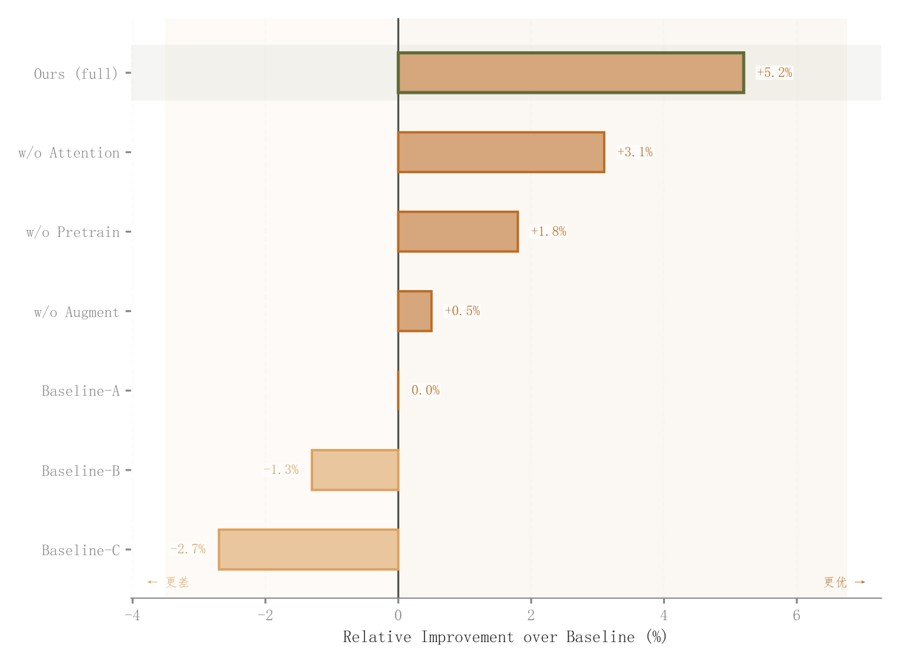
各方法比基线好或差多少？
- 需要的数据
- 类别与有正负的相对变化值
- 组合结构
- 零线两侧横向条形
- 视觉特点
- 方向配色；浅填充深描边；正负背景；主方法行高亮
适配注意与源码
调用 ID：advanced.diverging_bar
统一改善方向与百分比口径；不是组成堆叠图。
原名称：Diverging Bar Chart — 发散柱状图（淡色填充 + 原色边框 + 相对基线 + 颜色编码方向 + 数值标签）
执行兼容调整：无
查看原始代码 · Markdown 卡片
barh:23 · barh:25
相近候选
累计增益阶梯与贡献色带 · 增减贡献浮动柱瀑布 · 消融配置柱状比较
源码保真要点
以完整源码为底稿；点击行号查看实现。允许适配数据，重点核对这些结构。
两向浅条与深边
保留：保留零线两侧方向配色、浅填充深描边及后方阴影，正负背景和重点行仍可区分。
可适配：类别数、排序、范围与重点对象可变；方向按真实差值解释，不固定谁有优势。
L16–16 · L17–17 · L23–23 · L25–27 · L42–42
源码差异只提供核对线索，仍按现有流程看实际输出。
模板 033
两组镜像条形比较
比较 · 组合
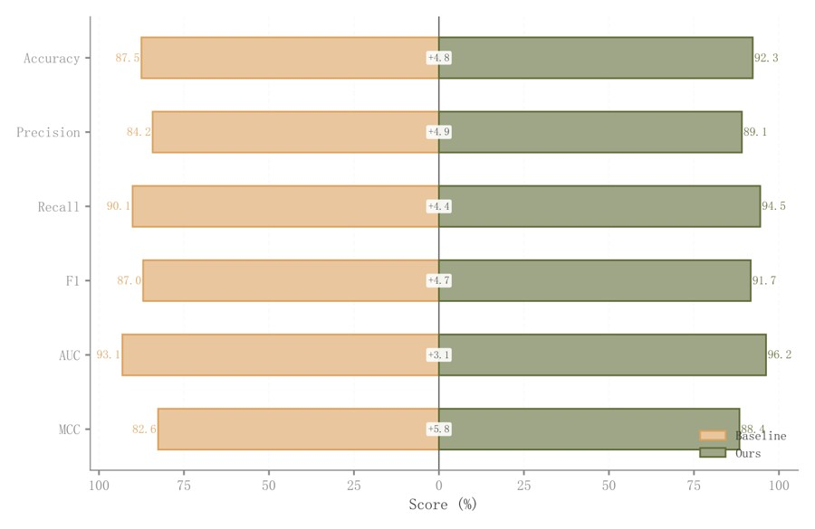
两个群体在多个指标上的差距怎样？
- 需要的数据
- 每个指标的两组非负值
- 组合结构
- 共享类别轴；左右镜像横条
- 视觉特点
- 浅填充深描边；中心差值框；左右数值标签
适配注意与源码
调用 ID：advanced.back_to_back_bar
左侧负坐标仅用于镜像，实际量仍为正；不同单位指标需先可比化。
原名称：Back-to-Back Bar Chart — 背靠背柱状图（浅色填充 + 原色边框 + 镜像对比 + 共享 Y 轴 + 差值标签）
执行兼容调整：无
查看原始代码 · Markdown 卡片
barh:16 · barh:20
源码保真要点
以完整源码为底稿；点击行号查看实现。允许适配数据，重点核对这些结构。
镜像条与中央差值
保留：保留共享类别轴的两侧镜像条、浅填充深边与中央比较信息，不改成互相覆盖的同向柱。
可适配：两组数据和行数可变，轴标签显示真实绝对量，镜像负坐标不代表负数据。
L16–18 · L20–22 · L26–27 · L28–29 · L33–36 · L40–40
源码差异只提供核对线索，仍按现有流程看实际输出。
模板 034
个体配对变化与均值箭头
比较 · 变化 · 分布
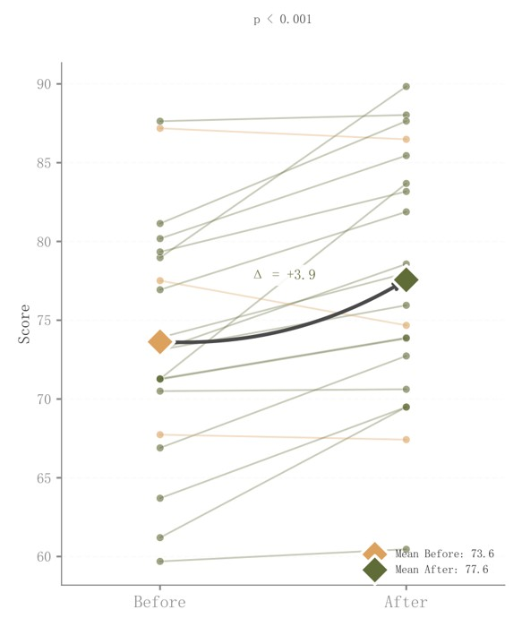
同一批个体前后分别改变了多少？
- 需要的数据
- 个体ID对应的前后两次测量
- 组合结构
- 两列个体散点逐一连接；均值菱形
- 视觉特点
- 细透明个体线；粗均值连线；变化箭头
适配注意与源码
调用 ID：advanced.paired_dot
需要真实配对关系；不能把独立两组样本按行连线；示例显著性文字需替换真实检验。
原名称：Paired Dot Plot — 配对点图（个体变化连线 + 均值偏移箭头 + 显著性）
执行兼容调整：无
查看原始代码 · Markdown 卡片
plot:17 · scatter:19 · scatter:24 · scatter:26
相近候选
前后对比哑铃图 · 两阶段斜率与排名变化 · 多阶段名次轨迹
源码保真要点
以完整源码为底稿；点击行号查看实现。允许适配数据，重点核对这些结构。
个体细线和均值强调
保留：保留逐个体半透明细连线、配对端点和均值菱形/变化箭头，区分个体变化与总体变化。
可适配：按实际个体 ID 配对，样本密度与避让可调；没有配对关系时不连接。
L17–18 · L19–20 · L24–25 · L26–27 · L30–32
源码差异只提供核对线索，仍按现有流程看实际输出。
模板 035
堆叠山脊密度
分布 · 比较
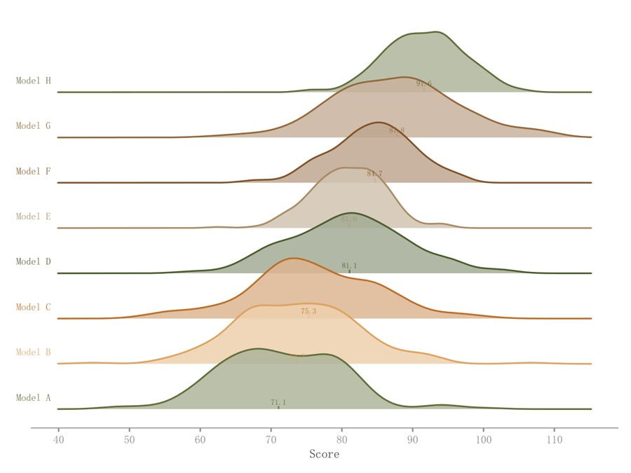
较多组的分布峰值、宽度与偏移如何？
- 需要的数据
- 分组原始连续样本
- 组合结构
- 多条密度曲线逐行上移并部分重叠
- 视觉特点
- 浅填充深轮廓；中位数虚线；末端组名
适配注意与源码
调用 ID：advanced.ridgeline
当前代码为单层均匀填充，注释Gradient fill并未实现内部渐变；密度高度归一化不表达样本量。
原名称：Ridgeline Plot — 山脊图（堆叠分布对比 + 渐变填充 + 中位数线）
执行兼容调整：无
查看原始代码 · Markdown 卡片
fill_between:36 · plot:38 · plot:44
相近候选
竖向雨云分布组合 · 完整小提琴与箱线显著性比较 · 类别内多方法小提琴 · 横向长尾分布雨云与分位标记 · 雨云分布与效应量显著性 · 模型误差横向雨云
源码保真要点
以完整源码为底稿；点击行号查看实现。允许适配数据，重点核对这些结构。
浅填充和错落山脊
保留：保留 _lighten(color,0.5) 的单层浅填充、alpha=0.85、独立深轮廓和由后到前的遮叠顺序；原代码没有连续渐变。
可适配：组数、密度带宽、间距和重叠程度可调；重新计算中位数，线段高度与当前密度归一化一致。
L36–37 · L38–39 · L44–46
源码差异只提供核对线索，仍按现有流程看实际输出。
模板 036
类别内多方法小提琴
分布 · 比较
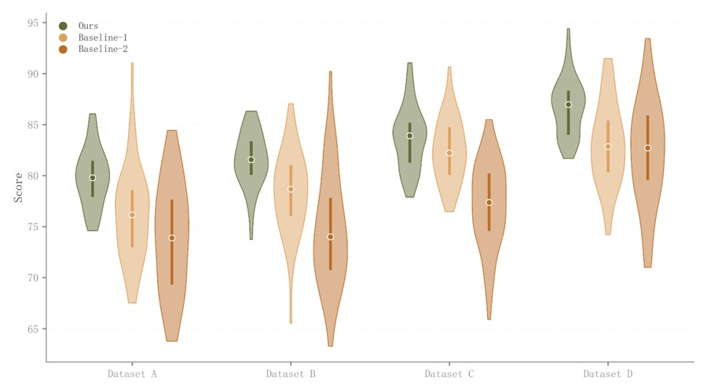
多个数据集内各方法的重复结果分布如何？
- 需要的数据
- 外层类别×方法；每组合的原始样本
- 组合结构
- 每个类别内并排多把完整小提琴
- 视觉特点
- 浅色琴体；深轮廓；中位数和四分位线
适配注意与源码
调用 ID：advanced.grouped_violin
双重分组太多时拥挤；不能用单个平均值虚构密度。
原名称：Grouped Violin Plot (Multi-Group Distribution Comparison + Median + Quartile Lines)
执行兼容调整：无
查看原始代码 · Markdown 卡片
violinplot:29 · scatter:44 · scatter:50
相近候选
竖向雨云分布组合 · 完整小提琴与箱线显著性比较 · 堆叠山脊密度 · 横向长尾分布雨云与分位标记 · 雨云分布与效应量显著性 · 模型误差横向雨云
源码保真要点
以完整源码为底稿；点击行号查看实现。允许适配数据，重点核对这些结构。
浅琴体和深描边是两个设置
保留：保留 _lighten 的填色处理、独立边线与 alpha=0.8 的琴体；不要把填充和轮廓同时设成同一实色。
可适配：色相跟随已选配色，组数、并排位置和宽度适配类别数量；浅深关系继续保留。
L25–38
中位数与四分位线
保留：保留白边中位数点与较粗的 Q1–Q3 竖线，不把统计层简化成无内部信息的琴体。
可适配：分位数来自每组有效原始样本；布局和线长随数据变化，不复制示例数值。
L40–50
源码差异只提供核对线索，仍按现有流程看实际输出。
模板 037
Dolan–Moré性能剖面
比较 · 排序 · 优化
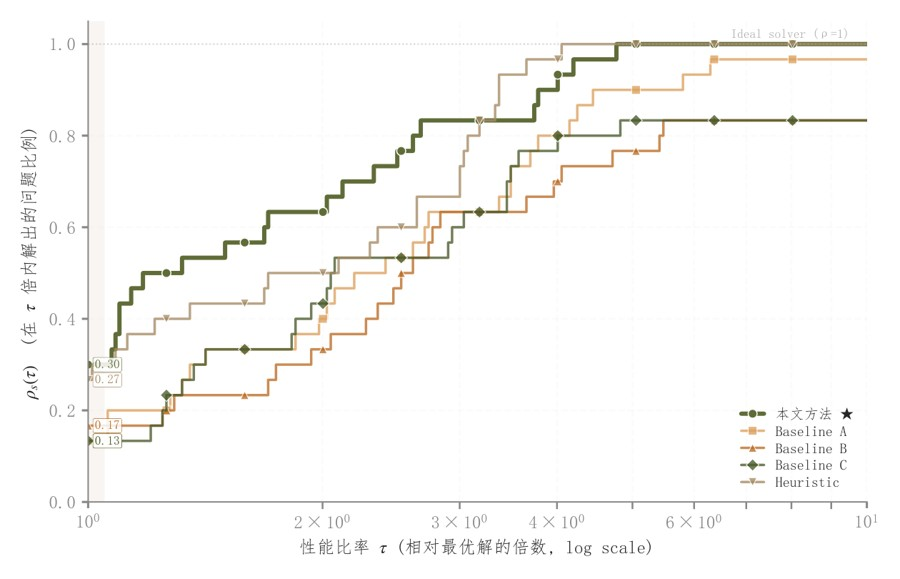
算法跨多个问题的胜率与稳健性怎样？
- 需要的数据
- 问题×算法的正耗时或成本矩阵；失败状态
- 组合结构
- 对数性能比横轴；累计问题占比阶梯
- 视觉特点
- 不同点形和线型；主算法突出；τ=1胜率标注
适配注意与源码
调用 ID：advanced.performance_profile
比较的是相对每题最佳成本；零成本、失败和超时需明确处理；不是单问题收敛曲线。
原名称：Performance Profile (Dolan-Moré) — 性能剖面图（多算法跨问题对比标准画法）
执行兼容调整：无
查看原始代码 · Markdown 卡片
step:37
相近候选
多算法迭代收敛曲线 · 损失准确率双轴与学习率插图
源码保真要点
以完整源码为底稿；点击行号查看实现。允许适配数据，重点核对这些结构。
性能比的累计阶梯
保留：保留累计比例阶梯、对数性能比轴及方法线型/点形主次，不用平滑曲线替换经验阶梯。
可适配：求解器、问题集和失败处理按实际计算，τ=1 胜率标注重算。
L37–42 · L48–51 · L55–56
源码差异只提供核对线索，仍按现有流程看实际输出。
模板 038
ICE个体响应与PDP组合
解释 · 趋势 · 分布 · 组合
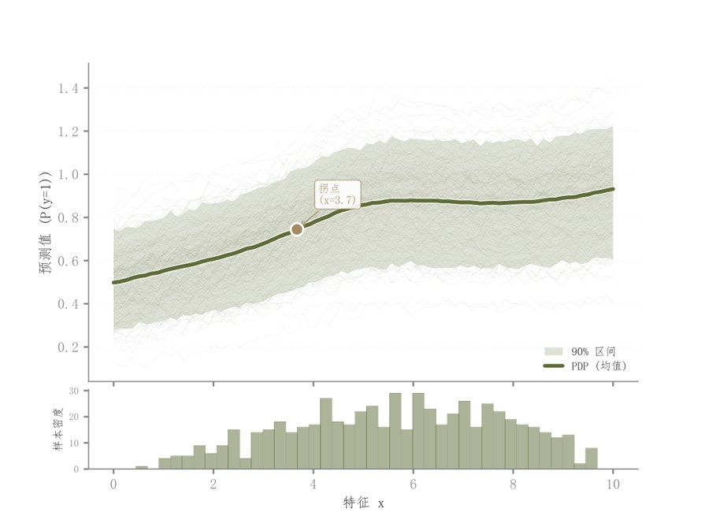
特征变化如何影响个体及平均预测？
- 需要的数据
- 特征网格；每个样本的模型响应；真实特征样本
- 组合结构
- 上方ICE细线与PDP；下方特征直方图
- 视觉特点
- 低透明度曲线群形成密度感；粗均值线；单层分位范围；拐点标注
适配注意与源码
调用 ID：advanced.ice_pdp
示例响应是模拟函数；个体差异带不等同均值置信区间；相关特征下需注意干预解释。
原名称：ICE + PDP — 可解释机器学习（多条 ICE 细线 + 粗 PDP 均值线 + 边际分布）
执行兼容调整：无
查看原始代码 · Markdown 卡片
plot:35 · fill_between:38 · plot:42 · plot:44 · plot:45 · scatter:49 · hist:67
源码保真要点
以完整源码为底稿；点击行号查看实现。允许适配数据，重点核对这些结构。
细曲线群与白色衬边主线
保留：保留低 alpha 的 ICE 曲线群、浅色单层分位范围和带白色衬边的粗 PDP 均值线，以及下方特征直方图。源码没有额外 rug 或多层区间。
可适配：样本数、特征网格与直方分箱可变；该范围来自个体曲线分位数，不自动称为 PDP 估计置信区间。
L35–35 · L38–39 · L42–42 · L44–44 · L45–45 · L67–68
源码差异只提供核对线索，仍按现有流程看实际输出。
模板 039
历史与预测分位数扇形图
预测 · 趋势 · 误差
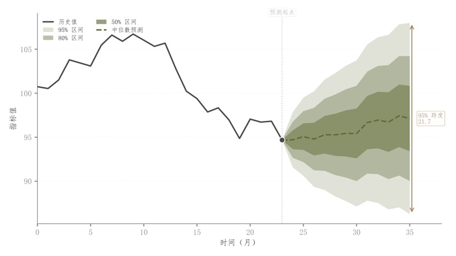
未来趋势及逐步扩大的不确定性怎样？
- 需要的数据
- 历史序列；未来中位数与多组分位数
- 组合结构
- 单面板；历史与预测分隔
- 视觉特点
- 三档嵌套透明区间；历史实线、预测虚线；终点范围
适配注意与源码
调用 ID：advanced.fan
分位数应有序且来源一致；示例扩散范围为模拟，不是已拟合预测器输出。
原名称：Fan Chart — 预测扇形图（多层 CI 带 + 历史/预测分隔 + 中位数线）
执行兼容调整：无
查看原始代码 · Markdown 卡片
plot:26 · scatter:27 · fill_between:37 · fill_between:41 · fill_between:45 · plot:49
相近候选
时序预测与误差侧分布 · 概率校准与预测概率分布 · 预测对实际散点与下方残差分布
源码保真要点
以完整源码为底稿；点击行号查看实现。允许适配数据，重点核对这些结构。
分位扇形的三档层次
保留：保留由浅到深的三档嵌套分位带、历史实线与预测虚线、历史末点与预测衔接，不改成单个误差带。
可适配：分位数、预测长度和分界随真实预测更新，不能套用折线图的透明度顺序或模拟宽度。
L26–26 · L27–28 · L37–39 · L41–43 · L45–47 · L49–50
源码差异只提供核对线索，仍按现有流程看实际输出。
模板 040
日历格点热图
时间 · 矩阵
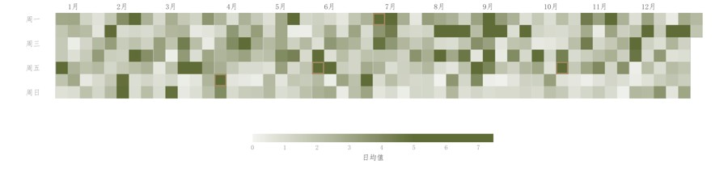
全年活动强度、周规律和异常日在哪里？
- 需要的数据
- 每日日期和值
- 组合结构
- 周列×星期行；月份分隔；横向色条
- 视觉特点
- 主色浅到深连续色阶；紧凑方格；异常日标注
适配注意与源码
调用 ID：advanced.calendar_heatmap
缺失日期不能当零；跨年、闰年和周编号边界需按实际日期适配。
原名称：Calendar Heatmap — 日历热图（一年 7×53 网格 + 月份分隔 + 顶部色条）
执行兼容调整：无
查看原始代码 · Markdown 卡片
imshow:42 · add_patch:73
源码保真要点
以完整源码为底稿；点击行号查看实现。允许适配数据，重点核对这些结构。
周日格网与连续深浅
保留：保留按周列/星期行排列的格网、浅到深连续色阶、月份边界和异常日框，不当普通矩阵任意重排。
可适配：日期跨度、量纲和色阶范围可变；无观测日期与零值区分，异常日按当前规则确定。
L42–43 · L61–62 · L73–75
源码差异只提供核对线索，仍按现有流程看实际输出。
模板 041
Hovmöller时空异常图
空间 · 时间 · 矩阵
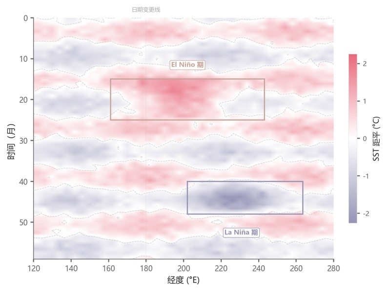
空间异常怎样随时间传播和持续？
- 需要的数据
- 时间×空间坐标的数值矩阵；异常基准
- 组合结构
- 时间纵轴、空间横轴；侧色条
- 视觉特点
- 红蓝异常色阶；等值线；事件框
适配注意与源码
调用 ID：advanced.hovmoller
适合有序空间轴而非任意类别；以零为中心的含义需成立；事件框为示例。
原名称：Hovmöller — 时空双轴图（时间纵 + 空间横 + 偏离均值色阶 + 事件标注）
执行兼容调整：无
查看原始代码 · Markdown 卡片
imshow:25 · contour:30 · add_patch:35 · add_patch:43
源码保真要点
以完整源码为底稿；点击行号查看实现。允许适配数据，重点核对这些结构。
异常色阶和零等值线
保留：保留时间—空间坐标、以零为中心的正负异常色阶、零等值线与有依据的事件框。
可适配：时间范围、空间方向、连续色相和显示分辨率可变，不因美化颠倒时间或抹去正负含义。
L25–27 · L30–31 · L35–37 · L43–45
源码差异只提供核对线索，仍按现有流程看实际输出。
热图默认读取项目配色；连续插值、中性色、透明度及数据归一化保留，数值文字按实际底色选择对比色。
模板 042
分布与Pearson成对关系矩阵
关联 · 分布 · 多维 · 组合
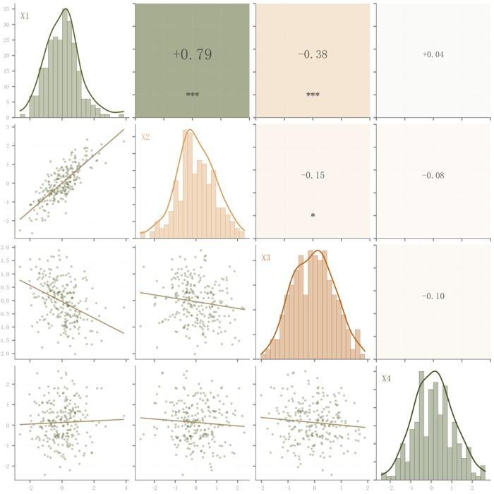
多个变量各自怎样分布、两两怎样相关？
- 需要的数据
- 样本×连续变量矩阵；变量名
- 组合结构
- N×N矩阵：对角直方图与KDE，下三角散点回归，上三角相关系数
- 视觉特点
- 正负相关背景色；字号随强度；显著性星号；边缘共用标签
适配注意与源码
调用 ID：advanced.pair_plot
需要原始样本才能同时画密度和散点；变量过多时矩阵增长很快；不同于左侧另加残差小提琴的完整组合。
原名称：Pair Plot / Scatter Matrix — 配对图（对角线 KDE + 上三角相关系数 + 下三角散点拟合）
执行兼容调整：无
查看原始代码 · Markdown 卡片
hist:26 · plot:30 · scatter:41 · plot:47
相近候选
残差小提琴与Pearson完整组合 · 相关显著性热图与顶部树 · 简洁下三角相关矩阵 · 带双侧树状图的下三角相关矩阵
源码保真要点
以完整源码为底稿；点击行号查看实现。允许适配数据，重点核对这些结构。
三角分工的成对矩阵
保留：保留对角分布与 KDE、下三角透明散点和回归、上三角相关数值/背景及边缘标签；三部分分工不可压成重复散点。
可适配：变量数、样本与标签可变；相关、星号、回归和密度均重新计算，退化变量按数据处理。
L26–27 · L30–31 · L36–38 · L41–42 · L47–48 · L57–57 · L60–62 · L64–65
源码差异只提供核对线索，仍按现有流程看实际输出。
模板 043
输入—中间响应—输出三联图
组合 · 图像 · 解释
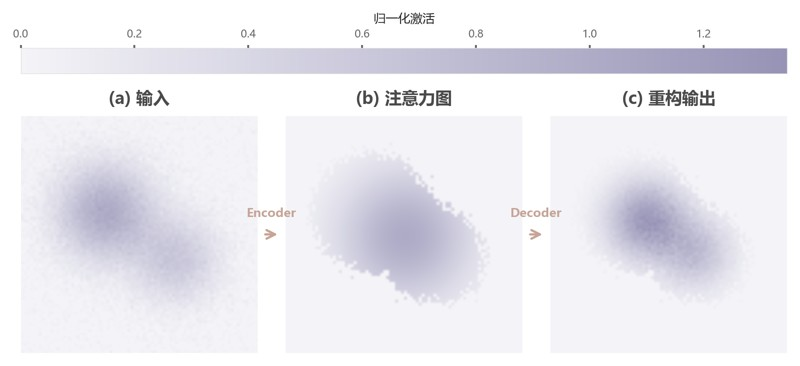
处理过程前后发生了什么，中间关注哪里？
- 需要的数据
- 三张空间可对齐的二维标量图；共同数值范围
- 组合结构
- 横向三面板；顶部共享色条；面板间箭头
- 视觉特点
- 相同连续色阶；空间结构对照；流程指向
适配注意与源码
调用 ID：advanced.triptych
实际使用viridis，非分类色板；不同量纲图不能强行共享色条；预览顶部刻度与标题邻近。
原名称：Triptych — 三联图（input / 中间表示 / output 横向对比 + 流向箭头）
执行兼容调整：无
查看原始代码 · Markdown 卡片
imshow:30
源码保真要点
以完整源码为底稿；点击行号查看实现。允许适配数据，重点核对这些结构。
三面板共用数值尺度
保留：保留横向三联图、共享色条与相同归一化范围，面板间箭头表达实际处理次序。
可适配：网格大小和布局间距可变；比较同量纲量时不可每面板独立拉伸色阶制造差异。
L30–31 · L39–39
源码差异只提供核对线索，仍按现有流程看实际输出。
热图默认读取项目配色；连续插值、中性色、透明度及数据归一化保留，数值文字按实际底色选择对比色。
模板 044
MCMC轨迹与后验密度
诊断 · 分布 · 组合
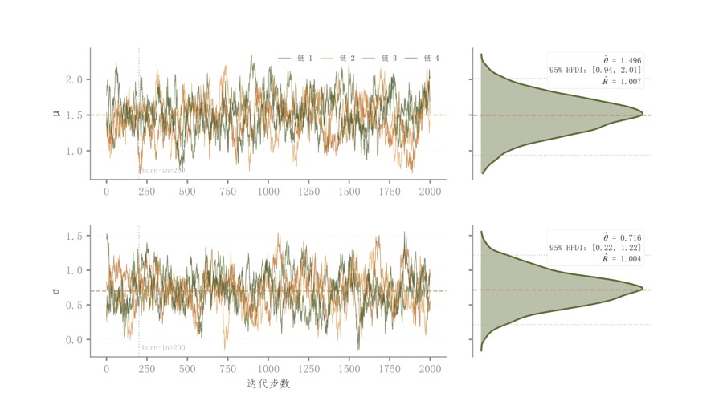
各链是否混合，参数后验集中在哪里？
- 需要的数据
- 参数×链×迭代样本；burn-in设置
- 组合结构
- 每参数一行；左轨迹、右侧竖向密度，共享参数轴
- 视觉特点
- 多条细链；burn-in竖线；浅密度填充；区间统计框
适配注意与源码
调用 ID：advanced.posterior_trace_density
示例R-hat随机模拟；标注HPDI实际用等尾百分位区间；不能直接当作真实收敛诊断。
原名称：Posterior Trace + Density — 贝叶斯 MCMC 双面板（多链 trace + 边际密度 + Rhat 标注）
执行兼容调整：无
查看原始代码 · Markdown 卡片
plot:32 · fill_betweenx:53 · plot:55
源码保真要点
以完整源码为底稿；点击行号查看实现。允许适配数据，重点核对这些结构。
轨迹与竖向密度对齐
保留：保留每参数左侧多链细轨迹、右侧浅密度和深轮廓，共享参数值轴与 burn-in 标记。
可适配：链数、迭代数、舍弃区间与参数行数可变；后验摘要由保留样本计算，不由轨迹外观臆断收敛。
L32–34 · L35–35 · L53–54 · L55–55
源码差异只提供核对线索，仍按现有流程看实际输出。
模板 045
居中流带图
组成 · 趋势
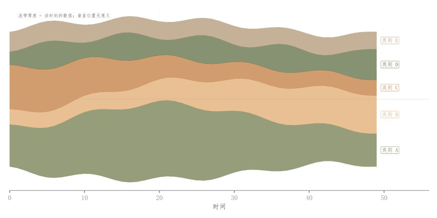
多个类别随时间如何兴衰与交替？
- 需要的数据
- 时间×类别非负值
- 组合结构
- 总量居中偏移的堆叠面积；末端标签
- 视觉特点
- 流带起伏；浅填充与细轮廓；省略纵轴刻度
适配注意与源码
调用 ID：advanced.streamgraph
厚度编码值，垂直位置无实际含义；示例有平滑，正式数据平滑需保留解释。
原名称：Streamgraph — 流图（居中堆叠基线 + 多类别 + 末端标签）
执行兼容调整：无
查看原始代码 · Markdown 卡片
fill_between:32
相近候选
堆叠面积与事件标记 · 方差分解总览与次要成分放大
源码保真要点
以完整源码为底稿；点击行号查看实现。允许适配数据，重点核对这些结构。
居中流带与连续轮廓
保留：保留总量居中偏移的流带、浅填充与细轮廓以及末端类别标签，不改成零基线普通面积图。
可适配：成分数量与序列长度可变；成分可相加，末端很窄时调整标签位置而非删掉流带。
L32–34 · L37–40 · L54–58
源码差异只提供核对线索，仍按现有流程看实际输出。
模板 046
双变量空间网格与九宫格图例
空间 · 矩阵 · 多维
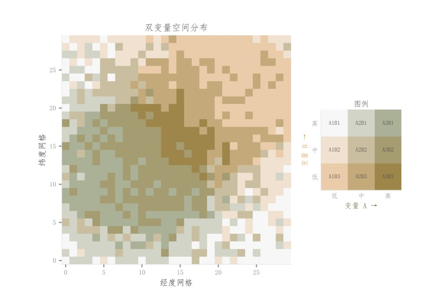
两个变量在空间上哪些地方同时高或低？
- 需要的数据
- 同网格的两张数值矩阵
- 组合结构
- 左空间格网；右3×3双变量图例
- 视觉特点
- 两主色混合成九级离散色；浅底格网
适配注意与源码
调用 ID：advanced.bivariate_choropleth
当前实现是规则网格而非行政区地图；原图例B轴高低方向与构造次序需核对；分位等级不表达绝对差距。
原名称：Bivariate Choropleth / 双变量热图 — 二维联合分布（3×3 配色矩阵 + 主图 + 图例）
执行兼容调整：无
查看原始代码 · Markdown 卡片
imshow:40 · imshow:53
源码保真要点
以完整源码为底稿；点击行号查看实现。允许适配数据，重点核对这些结构。
双变量九格混色
保留：保留双变量分级混色与对应的 3×3 图例，两个图例方向分别解释一个变量，不换成单变量连续色条。
可适配：分位阈值、空间格网和混色端点可调整；确保每格类别与图例一致。
L40–40 · L53–53 · L66–67
源码差异只提供核对线索，仍按现有流程看实际输出。
模板 047
效应森林图与权重摘要
误差 · 比较 · 组合
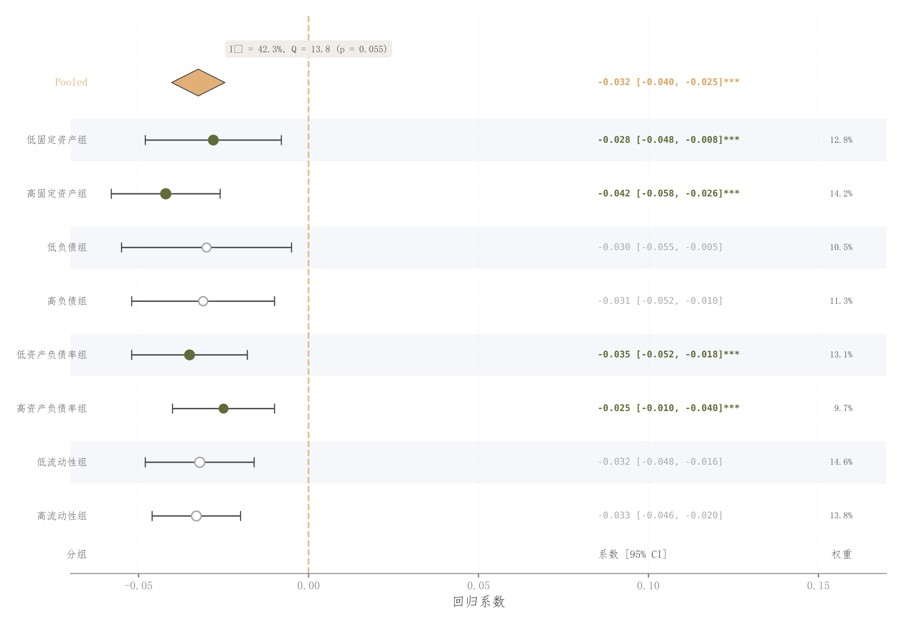
多项效应的方向、精度和汇总结果如何？
- 需要的数据
- 效应估计、CI上下界、权重、标签；可选显著性
- 组合结构
- 逐行点区间；两侧文字列；汇总菱形
- 视觉特点
- 交替行浅底；实心空心点；零线；菱形摘要
适配注意与源码
调用 ID：empirical.forest
原示例某行CI上下界倒置，且显著性布尔值独立指定；需使用真实一致的估计结果。
原名称：Forest Plot (Stata/SCI style)
执行兼容调整：无
查看原始代码 · Markdown 卡片
plot:33 · plot:34 · plot:35 · plot:41 · fill:71 · plot:72
相近候选
分层异质性森林图 · 多指标点区间与汇总菱形
源码保真要点
以完整源码为底稿；点击行号查看实现。允许适配数据，重点核对这些结构。
点区间和汇总菱形
保留：保留浅交替行、带端帽的区间、空实心点、零线与汇总菱形，两侧文本按行对齐。
可适配：效应方向、研究数、权重与区间据实更新；空实心编码及汇总方法必须与说明一致。
L26–26 · L33–33 · L34–34 · L35–35 · L41–42 · L45–45 · L49–52 · L55–56 · L59–60 · L61–62 · L63–64 · L71–71 · L72–73 · L74–75 · L76–78 · L82–85
源码差异只提供核对线索，仍按现有流程看实际输出。
模板 048
处理组与对照组趋势
因果 · 趋势 · 误差
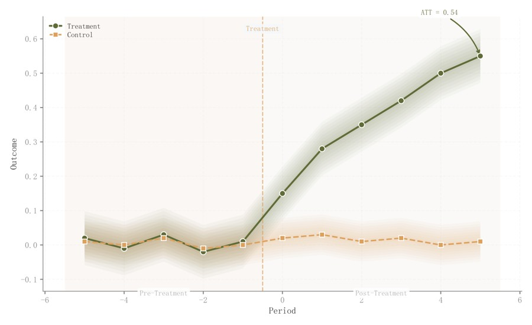
干预前后两组路径是否分离？
- 需要的数据
- 相对时期；两组均值或估计轨迹及标准误
- 组合结构
- 双序列；干预前后背景区
- 视觉特点
- 八层透明区间；实虚线区分；干预分界与末端差值箭头
适配注意与源码
调用 ID：empirical.parallel_trends
末端差值注释ATT并非正式DID估计；视觉近似平行不替代识别假设检验。
原名称：Parallel Trends (DID)
执行兼容调整：无
查看原始代码 · Markdown 卡片
fill_between:30 · fill_between:32 · plot:35 · plot:37
源码保真要点
以完整源码为底稿；点击行号查看实现。允许适配数据，重点核对这些结构。
多层区间与干预分区
保留：保留八层透明区间、处理/对照实虚线与白边点、干预前后分区和末端差值箭头。
可适配：时期、干预时点、均值与标准误重新计算，区间内缩保持嵌套，不凭图宣称平行趋势成立。
L15–15 · L30–31 · L32–33 · L35–36 · L37–38 · L40–47
源码差异只提供核对线索，仍按现有流程看实际输出。
模板 049
事件时间系数与累计效应
因果 · 趋势 · 误差
干预动态效应出现于何时并持续多久？
- 需要的数据
- 事件期系数和标准误；基准期约定
- 组合结构
- 主轴点区间；副轴干预后累计系数
- 视觉特点
- 前后分区；灰色干预前点；彩色后期点；显著性星号
适配注意与源码
调用 ID：empirical.event_study
不包含回归估计；基准期及累计效应定义需匹配模型；副轴累计线没有自动联合CI。
原名称：Event Study
执行兼容调整：无
查看原始代码 · Markdown 卡片
plot:21 · plot:24 · plot:26 · plot:36
源码保真要点
以完整源码为底稿；点击行号查看实现。允许适配数据，重点核对这些结构。
前后点区间与累计效应
保留：保留干预前后配色差异、分层区间线及中心点、零参考与副轴累计路径。
可适配：基期、系数、区间与累计统计按模型替换，不把缺少基期估计当零误差点。
L10–10 · L12–12 · L13–13 · L21–23 · L24–25 · L26–27 · L36–37
源码差异只提供核对线索，仍按现有流程看实际输出。
模板 050
安慰剂系数分布与真实效应
因果 · 分布 · 诊断
真实估计相对随机置换结果是否异常？
- 需要的数据
- 置换或安慰剂估计样本；真实估计值
- 组合结构
- 直方图叠加KDE；真实值竖线
- 视觉特点
- 多层透明密度填充；分位参考线；尾部箭头
适配注意与源码
调用 ID：empirical.placebo
示例仅模拟正态系数，未执行置换回归；p值应按实际置换方案和有限次数口径计算。
原名称：Placebo Test
执行兼容调整：无
查看原始代码 · Markdown 卡片
fill_between:16 · fill_between:17 · plot:18 · hist:19
源码保真要点
以完整源码为底稿；点击行号查看实现。允许适配数据，重点核对这些结构。
透明密度叠层与真实值
保留：保留随机化分布的直方/KDE、分层透明填充、分位参考和真实估计竖线。
可适配：重复次数、带宽、真实估计及尾部概率据实计算，避免用模拟尾部位置暗示显著性。
L16–16 · L17–17 · L18–18 · L19–19 · L22–22 · L26–26
源码差异只提供核对线索，仍按现有流程看实际输出。
模板 051
相关显著性热图与顶部树
关联 · 矩阵 · 聚类
变量相关方向、强度及显著性如何？
- 需要的数据
- 原始变量样本；或相关矩阵与对应p值
- 组合结构
- 下三角矩阵；顶部树；侧色条
- 视觉特点
- 红蓝色阶；相关数值与星号；白格线
适配注意与源码
调用 ID：empirical.correlation_heatmap
当前树的顺序没有同步重排矩阵；聚类输入定义需核对；显著性来自样本而非相关数值本身。
原名称：Correlation Heatmap
执行兼容调整：无
查看原始代码 · Markdown 卡片
dendrogram:25 · heatmap:31
相近候选
分布与Pearson成对关系矩阵 · 残差小提琴与Pearson完整组合 · 简洁下三角相关矩阵 · 带双侧树状图的下三角相关矩阵
源码保真要点
以完整源码为底稿；点击行号查看实现。允许适配数据，重点核对这些结构。
聚类下三角与统计标签
保留：保留聚类顺序、下三角遮罩、相关数值/星号、白格线和发散色阶；自绘注释不能因 annot=False 被漏掉。
可适配：变量、顺序、色相和精度可变；星号需有有效检验，不从相关大小直接生成。
L25–25 · L31–33 · L42–43
源码差异只提供核对线索，仍按现有流程看实际输出。
热图默认读取项目配色；连续插值、中性色、透明度及数据归一化保留，数值文字按实际底色选择对比色。
模板 052
横向长尾分布雨云与分位标记
分布 · 比较 · 组合
偏态分布的尾部、中心和组间差异怎样？
- 需要的数据
- 各组原始连续样本
- 组合结构
- 横向半密度＋箱线＋下方散点；分位数标记
- 视觉特点
- 十五层透明密度；深轮廓；正态性统计框
适配注意与源码
调用 ID：empirical.raincloud
预览长尾压缩主体；KDE只到99分位但点仍可更远；正态性检验示例只取前50样本。
原名称：Distribution (Rain Cloud with Gradient KDE)
执行兼容调整：无
查看原始代码 · Markdown 卡片
fill_between:24 · fill_between:26 · plot:27 · boxplot:29 · scatter:37 · plot:41
相近候选
竖向雨云分布组合 · 完整小提琴与箱线显著性比较 · 类别内多方法小提琴 · 堆叠山脊密度 · 雨云分布与效应量显著性 · 模型误差横向雨云
源码保真要点
以完整源码为底稿；点击行号查看实现。允许适配数据，重点核对这些结构。
横向多层云与下方样本
保留：保留十五层云填充加底层、深轮廓、下方箱线/散点及分位标记，横向值轴一致。
可适配：样本量、组数、云高、带宽和标签可变；分位、均值和正态性结果据实计算。
L24–25 · L26–26 · L27–27 · L29–34 · L37–37 · L41–41
源码差异只提供核对线索，仍按现有流程看实际输出。
模板 053
双指标时序与事件背景
趋势 · 时间 · 组合
不同单位指标如何共同演化，事件发生在哪里？
- 需要的数据
- 同一时间索引下两组数值；事件时间
- 组合结构
- 双纵轴折线；曲线下方填充
- 视觉特点
- 多层渐淡填充；不同点形；事件竖线；相关系数框
适配注意与源码
调用 ID：empirical.time_series
双轴尺度影响观感；共同趋势会影响相关解释；事件标注不表示因果识别。
原名称：Time Series Trend (Dual Y-axis)
执行兼容调整：无
查看原始代码 · Markdown 卡片
fill_between:15 · fill_between:17 · fill_between:21 · fill_between:23 · plot:25 · plot:27
源码保真要点
以完整源码为底稿；点击行号查看实现。允许适配数据，重点核对这些结构。
双轴曲线下的渐淡层
保留：保留两轴各自多层渐淡填充、白边不同点形及事件线；不用不透明纯色覆盖层次。
可适配：数值范围和填充基线随量纲改变，时期、事件和相关摘要来自当前数据。
L15–16 · L17–17 · L21–22 · L23–23 · L25–26 · L27–28 · L31–31
源码差异只提供核对线索，仍按现有流程看实际输出。
模板 054
回归残差四面板与影响点
诊断 · 误差 · 组合
残差形状、正态性与影响点是否异常？
- 需要的数据
- 拟合值、残差、Cook距离；对应检验统计
- 组合结构
- 2×2：残差拟合、Q-Q、分布、Cook距离
- 视觉特点
- 透明点；趋势平滑；密度填充；影响点阈值
适配注意与源码
调用 ID：empirical.residual_diagnostics
示例Breusch–Pagan文字固定、Cook距离模拟；区别于右下画ACF的竞赛版四面板。
原名称：Residual Diagnostics (4-panel)
执行兼容调整：无
查看原始代码 · Markdown 卡片
scatter:12 · plot:16 · scatter:26 · plot:29 · hist:39 · plot:42 · fill_between:44 · stem:52
相近候选
残差分布与自相关四面板
源码保真要点
以完整源码为底稿；点击行号查看实现。允许适配数据，重点核对这些结构。
四诊断面板各保留信息层
保留：保留残差—拟合、Q-Q、分布与 Cook 距离四部分，浅点、趋势线、密度层与影响阈值分工明确。
可适配：残差、拟合、模型自由度及影响指标重算，面板比例可调，不能拿随机诊断值适配正式数据。
L12–12 · L16–16 · L26–26 · L29–29 · L39–39 · L42–42 · L44–44 · L52–52 · L55–55
源码差异只提供核对线索，仍按现有流程看实际输出。
模板 055
边际效应与条件预测双面板
因果 · 解释 · 组合
调节变量如何改变效应方向和条件预测？
- 需要的数据
- 调节网格上的边际效应与SE；两种条件预测及区间
- 组合结构
- 左边际效应；右高低条件预测线
- 视觉特点
- 多层透明置信带；显著区域浅底；零交叉点箭头
适配注意与源码
调用 ID：empirical.marginal_effects
示例为直接设定曲线，未拟合交互模型；区间需与模型和条件定义一致。
原名称：Moderation / Marginal Effects
执行兼容调整：无
查看原始代码 · Markdown 卡片
fill_between:12 · fill_between:15 · fill_between:16 · plot:17 · plot:21 · fill_between:35 · fill_between:36 · plot:37
源码保真要点
以完整源码为底稿；点击行号查看实现。允许适配数据，重点核对这些结构。
效应与条件预测双面板
保留：保留左侧多层效应区间、显著区域浅底与零交叉标记，右侧高低条件预测实虚线和各自区间。
可适配：条件值、效应、标准误和零交叉由当前模型计算；无交叉或无显著区时不硬保留标记。
L12–12 · L15–15 · L16–16 · L17–17 · L21–21 · L35–35 · L36–36 · L37–37 · L38–38
源码差异只提供核对线索，仍按现有流程看实际输出。
模板 056
分层异质性森林图
比较 · 误差 · 因果
效应在地区、规模等分层中是否不同？
- 需要的数据
- 分层类别下的效应、SE、权重；分层汇总与异质性统计
- 组合结构
- 分组行块；点区间；每块汇总菱形
- 视觉特点
- 浅色组标题带；空实心点；权重文字列
适配注意与源码
调用 ID：empirical.subgroup_forest
预览为窄高图，完整阅读需放大；I²及Q检验是示例输入，不自动估计。
原名称：Subgroup Forest / Heterogeneity
执行兼容调整：无
查看原始代码 · Markdown 卡片
plot:28 · plot:29 · plot:30 · plot:32 · fill:37 · plot:38
相近候选
效应森林图与权重摘要 · 多指标点区间与汇总菱形
源码保真要点
以完整源码为底稿；点击行号查看实现。允许适配数据，重点核对这些结构。
分组行块和组内汇总
保留：保留浅组标题带、各行点区间与每组汇总菱形，点与文字列对齐。
可适配：亚组数量、权重和区间可变；没有有效组内汇总时说明，不直接平均区间。
L23–23 · L28–28 · L29–29 · L30–30 · L32–32 · L37–37 · L38–38
源码差异只提供核对线索，仍按现有流程看实际输出。
模板 057
分位数回归与OLS对照
解释 · 误差 · 比较
效应在响应分布不同分位是否变化？
- 需要的数据
- 各分位系数与SE；OLS系数及SE
- 组合结构
- 分位数横轴；系数曲线；OLS水平参考
- 视觉特点
- 十层区间带；OLS浅带；差值填充；显著性背景
适配注意与源码
调用 ID：empirical.quantile_regression
示例未拟合回归；不同模型的区间与样本口径需一致；色带不是响应变量分布。
原名称：Quantile Regression
执行兼容调整：无
查看原始代码 · Markdown 卡片
fill_between:13 · fill_between:15 · plot:23 · fill_between:25
源码保真要点
以完整源码为底稿；点击行号查看实现。允许适配数据，重点核对这些结构。
QR区间与OLS参照分离
保留：保留 QR 十层区间、OLS 水平浅带和两者差值填充，不能把不同含义合为一个阴影。
可适配：分位点、系数和标准误由模型计算；显著区域和差值方向据实更新。
L13–13 · L15–15 · L16–16 · L22–22 · L23–24 · L25–25
源码差异只提供核对线索，仍按现有流程看实际输出。
模板 058
匹配前后协变量平衡图
诊断 · 比较 · 因果
匹配后协变量差异是否缩小？
- 需要的数据
- 各协变量匹配前后标准化差异
- 组合结构
- 每协变量一行；两组点与改善箭头
- 视觉特点
- 阈值浅色区；圆点菱形区分；改善率文字
适配注意与源码
调用 ID：empirical.psm_balance
模板只展示SMD，未执行匹配；负值、绝对值和接近零分母需明确，阈值按研究口径设定。
原名称：PSM Balance (Love Plot)
执行兼容调整：无
查看原始代码 · Markdown 卡片
scatter:21 · scatter:22
源码保真要点
以完整源码为底稿；点击行号查看实现。允许适配数据，重点核对这些结构。
阈值浅区和匹配改善
保留：保留阈值浅区、匹配前圆点/后菱形、逐协变量改善箭头及数值列。
可适配：协变量、SMD 与阈值据实更新，方向和是否改善不能照搬示例。
L11–11 · L15–16 · L21–21 · L22–22
源码差异只提供核对线索，仍按现有流程看实际输出。
模板 059
时序预测与误差侧分布
预测 · 误差 · 组合
预测跟踪真实走势怎样，误差分布如何？
- 需要的数据
- 有序真实值、预测值、预测区间；训练测试分界
- 组合结构
- 左时序实际与预测；右竖向误差直方与密度
- 视觉特点
- 透明预测带；训练测试背景；误差指标框
适配注意与源码
调用 ID：empirical.prediction_ci
右侧是残差分布，非左图数值边际；训练测试划分及区间必须对应实际结果。
原名称：Prediction vs Actual with CI Band
执行兼容调整：无
查看原始代码 · Markdown 卡片
fill_between:30 · plot:33 · plot:34 · hist:49 · plot:51
相近候选
历史与预测分位数扇形图 · 概率校准与预测概率分布 · 预测对实际散点与下方残差分布
源码保真要点
以完整源码为底稿；点击行号查看实现。允许适配数据，重点核对这些结构。
预测带与侧边误差分布
保留：保留主图透明预测带、真实/预测线型区分、训练测试分界，以及右侧竖向误差直方和密度。
可适配：训练边界、预测区间、误差样本和评价指标重算；侧分布共用误差值轴，不能误当预测轴边际。
L19–19 · L20–20 · L30–31 · L33–33 · L34–34 · L49–49 · L51–51
源码差异只提供核对线索，仍按现有流程看实际输出。
模板 060
多模型多指标预测热力排名
预测 · 比较 · 矩阵
多个模型的误差与拟合指标如何综合比较？
- 需要的数据
- 模型×评价指标矩阵；指标高低优方向
- 组合结构
- 模型行、指标列；侧边均分；色条
- 视觉特点
- 原值与名次；优胜边框；黄红色阶
适配注意与源码
调用 ID：empirical.prediction_accuracy_heatmap
代码归一化0为优、1为劣，色条文字却反向；浅色格白字偏淡；卡片保留此限制供适配参考。
原名称：Multi-Model Prediction Accuracy Heatmap
执行兼容调整：无
查看原始代码 · Markdown 卡片
imshow:21 · add_patch:34
相近候选
归一化多指标雷达对比 · 多方案雷达与交替背景环 · 多指标平行坐标 · 多指标方法排名热力图
源码保真要点
以完整源码为底稿；点击行号查看实现。允许适配数据，重点核对这些结构。
原值名次与优胜边框
保留：保留归一化着色、格内原值与名次、每指标优胜框和侧边汇总；框依据优劣方向确定。
可适配：模型数、指标数、方向与综合方式可变，不把小误差当低表现。
L21–21 · L31–32 · L34–35 · L44–44
源码差异只提供核对线索，仍按现有流程看实际输出。
热图默认读取项目配色；连续插值、中性色、透明度及数据归一化保留，数值文字按实际底色选择对比色。
模板 061
模型误差横向雨云
预测 · 误差 · 分布
模型误差偏移、离散和长尾怎样不同？
- 需要的数据
- 每模型逐样本预测误差
- 组合结构
- 逐行半密度、箱线和散点
- 视觉特点
- 透明云层；零误差线；标准差与正态性标注
适配注意与源码
调用 ID：empirical.prediction_error_raincloud
不能由RMSE单值重建误差分布；KDE带宽与尾部尺度会影响形态。
原名称：Prediction Error Distribution (Rain Cloud)
执行兼容调整：无
查看原始代码 · Markdown 卡片
fill_between:23 · fill_between:24 · plot:25 · boxplot:27 · scatter:34 · scatter:40
相近候选
竖向雨云分布组合 · 完整小提琴与箱线显著性比较 · 类别内多方法小提琴 · 堆叠山脊密度 · 横向长尾分布雨云与分位标记 · 雨云分布与效应量显著性
源码保真要点
以完整源码为底稿；点击行号查看实现。允许适配数据，重点核对这些结构。
误差云与零参考
保留：保留横向误差云层、深轮廓、箱线与抖动样本，以及零误差线和异常标记。
可适配：分组、带宽、异常阈值可变；误差方向、离散度和检验结果由实际预测计算。
L23–23 · L24–24 · L25–25 · L27–31 · L34–34 · L40–40 · L49–49
源码差异只提供核对线索，仍按现有流程看实际输出。
模板 062
预测步长性能与模型跨度
预测 · 趋势 · 比较
预测越远性能怎样下降，模型差距如何变化？
- 需要的数据
- 各模型按预测步长排列的指标
- 组合结构
- 多模型折线；模型间跨度填充
- 视觉特点
- 接受阈值；末端衰减标注；主模型突出
适配注意与源码
调用 ID：empirical.multistep_decay
填充表达模型之间的范围，不是置信区间；指标需同方向同量纲。
原名称：Multi-Step Prediction Decay
执行兼容调整：无
查看原始代码 · Markdown 卡片
fill_between:19 · fill_between:21 · plot:33
相近候选
多步预测性能衰减
源码保真要点
以完整源码为底稿；点击行号查看实现。允许适配数据，重点核对这些结构。
模型间跨度的叠层填充
保留：保留最差到最好模型间的多层跨度填充和主次折线、阈值参考；跨度不是每模型置信区间。
可适配：步数、方法、真实跨度和接受阈值可变，末端衰减标注重算。
L19–20 · L21–21 · L24–24 · L33–34
源码差异只提供核对线索，仍按现有流程看实际输出。
模板 063
Moran空间滞后散点
空间 · 关联 · 诊断
地区值与邻近地区值是否存在空间关联？
- 需要的数据
- 区域边界；每区域数值；空间权重定义
- 组合结构
- 标准化值与空间滞后散点；四象限
- 视觉特点
- 象限浅底；回归线；异常区域名；Moran统计
适配注意与源码
调用 ID：empirical.moran_scatter
此例真实计算Queen权重和Moran统计，但区域数值为模拟；边界与权重影响结论。
原名称：Moran's I Scatter Plot (真实空间自相关 + esda 计算 + Queen 权重)
执行兼容调整：无
查看原始代码 · Markdown 卡片
fill_between:57 · fill_between:58 · fill_between:59 · fill_between:60 · scatter:71 · plot:75
源码保真要点
以完整源码为底稿；点击行号查看实现。允许适配数据，重点核对这些结构。
四象限浅底与空间关联
保留：保留四象限浅底、象限点色、空间滞后轴与回归参考，不只剩普通散点。
可适配：空间权重、标准化值、空间滞后与 Moran 统计按实际分析计算；异常区域标签据实选择。
L57–57 · L58–58 · L59–59 · L60–60 · L71–71 · L75–75
源码差异只提供核对线索，仍按现有流程看实际输出。
模板 064
LISA局部空间聚类地图
空间 · 聚类 · 诊断
高高、低低集聚与空间异常在哪里？
- 需要的数据
- 区域边界与数值；空间权重及显著性口径
- 组合结构
- 行政区分类着色；显著地区文字
- 视觉特点
- HH、LL、HL、LH与不显著类别；白边界
适配注意与源码
调用 ID：empirical.lisa_map
使用真实Moran_Local计算模拟数据；颜色为类别不应当连续大小；置换次数与多重比较需明确。
原名称：LISA Cluster Map (真实局部空间自相关 + esda.Moran_Local + 中国省级地图)
执行兼容调整：无
查看原始代码 · Markdown 卡片
plot:60
源码保真要点
以完整源码为底稿；点击行号查看实现。允许适配数据，重点核对这些结构。
离散空间类别和白边界
保留：保留 HH/LL/HL/LH/不显著的离散编码及白边界，不把类别变成连续强弱色阶。
可适配：地理单元、权重、显著性规则和类别颜色可变，类别名称与颜色映射一致。
L60–61 · L96–97
源码差异只提供核对线索，仍按现有流程看实际输出。
模板 065
逐步控制的系数稳定性
解释 · 误差 · 趋势
加入控制变量后核心系数是否稳定？
- 需要的数据
- 按设定顺序的系数、CI及设定名
- 组合结构
- 系数折线；零线和基准范围
- 视觉特点
- 两层嵌套透明CI；基准±10%浅带；数值标签
适配注意与源码
调用 ID：empirical.coefficient_stability
不是连续渐变；基准范围是参考而非CI；模型顺序具有含义，不是时间变化。
原名称：Coefficient Stability Plot (Sequential Control Variable Addition)
执行兼容调整：无
查看原始代码 · Markdown 卡片
fill_between:16 · fill_between:17 · plot:22
源码保真要点
以完整源码为底稿；点击行号查看实现。允许适配数据，重点核对这些结构。
两层系数带和基准区
保留：保留系数路径、两层嵌套浅带与基准范围背景，分清置信区间和基准容差。
可适配：控制变量序列、系数和区间重新计算；容差按任务设定，标签可避让。
L16–16 · L17–19 · L22–23 · L35–36
源码差异只提供核对线索，仍按现有流程看实际输出。
模板 066
方差分解总览与次要成分放大
组成 · 趋势 · 组合
预测误差方差由哪些冲击贡献，小项如何变化？
- 需要的数据
- 期数×冲击来源的贡献份额
- 组合结构
- 上完整堆叠面积；下排除主成分后放大
- 视觉特点
- 共享期数；浅色贡献带；末端份额
适配注意与源码
调用 ID：empirical.variance_decomposition
下图展示次要成分原份额而非重新归一化；数值需来自真实方差分解并检验加总口径。
原名称：Variance Decomposition (Stacked Area with Smart Scaling)
执行兼容调整：无
查看原始代码 · Markdown 卡片
plot:20 · plot:21 · fill_between:30 · fill_between:31 · plot:32 · plot:34
相近候选
堆叠面积与事件标记 · 居中流带图
源码保真要点
以完整源码为底稿；点击行号查看实现。允许适配数据，重点核对这些结构。
完整堆叠与次成分放大
保留：保留上部全成分堆叠和下部排除主成分后的放大，浅填充与独立轮廓共同表达贡献。
可适配：成分数和期数可变，上下共用同一期数，放大面板保持原份额解释，不偷偷重新归一化。
L17–19 · L20–20 · L21–21 · L30–30 · L31–31 · L32–33 · L34–35
源码差异只提供核对线索，仍按现有流程看实际输出。
模板 067
多路径脉冲响应四面板
因果 · 趋势 · 误差 · 组合
各类冲击对响应变量的影响如何衰减？
- 需要的数据
- 冲击—响应配对；各期IRF与区间
- 组合结构
- 2×2，每格一个响应路径
- 视觉特点
- 嵌套透明区间；零线；显著时期浅底
适配注意与源码
调用 ID：empirical.impulse_response
示例响应曲线手工设定；需提供真实模型识别、期数单位和区间估计。
原名称：Impulse Response Function (IRF with Gradient CI + Multi-Panel)
执行兼容调整：无
查看原始代码 · Markdown 卡片
fill_between:42 · plot:46
源码保真要点
以完整源码为底稿；点击行号查看实现。允许适配数据，重点核对这些结构。
响应路径与嵌套区间
保留：保留各响应面板的多层透明区间、白边路径点、零线和有依据的显著时期浅底。
可适配：冲击/响应变量、期数及置信界由实际模型重算，布局可扩缩，不将示例曲线当实证结果。
L42–43 · L46–47 · L50–50 · L55–55
源码差异只提供核对线索，仍按现有流程看实际输出。
模板 068
消融配置柱状比较
比较 · 解释
移除组件对模型表现有何影响？
- 需要的数据
- 配置名称；表现值；与完整模型的差异
- 组合结构
- 单面板柱；配置间连接标记
- 视觉特点
- 黄红数值配色；差值箭头；首尾柱强调
适配注意与源码
调用 ID：academic.ablation
当前颜色注释与实际YlOrRd不一致；每根柱均匀填充；示例截断纵轴会放大差距。
原名称：Ablation Study Bar Chart — 消融实验柱状图
执行兼容调整：RGB/RGBA 元组转十六进制以适配原 _lighten 接口，颜色含义不变
查看原始代码 · Markdown 卡片
bar:18 · plot:23 · plot:52
相近候选
累计增益阶梯与贡献色带 · 增减贡献浮动柱瀑布 · 相对基线发散条形
源码保真要点
以完整源码为底稿；点击行号查看实现。允许适配数据，重点核对这些结构。
浅柱、连接和增益标记
保留：保留随得分变化的浅填色与深边、首尾强调及增益连接标记。
可适配：配置顺序、得分、增益方向和范围按实验更新；对无逐步关系的配置不伪造累积链条。
L18–19 · L23–24 · L32–36 · L52–53
源码差异只提供核对线索，仍按现有流程看实际输出。
模板 069
损失准确率双轴与学习率插图
训练 · 趋势 · 诊断 · 组合
训练验证过程、最佳轮次和学习率如何关联？
- 需要的数据
- epoch；训练验证损失与指标；学习率序列
- 组合结构
- 主图双轴四曲线；右侧学习率小窗
- 视觉特点
- 损失下三层透明填充；最佳轮次星号；早停线
适配注意与源码
调用 ID：academic.training_curves
示例早停为最佳轮次加10，未运行早停算法；图例靠近曲线；不是独立学习率调度模板。
原名称：Training Curves — 训练曲线（Loss + Metric 双轴）
执行兼容调整：无
查看原始代码 · Markdown 卡片
plot:21 · plot:22 · fill_between:26 · plot:31 · plot:32 · scatter:37 · plot:56
相近候选
多算法迭代收敛曲线 · Dolan–Moré性能剖面
源码保真要点
以完整源码为底稿；点击行号查看实现。允许适配数据，重点核对这些结构。
损失填充与学习率小窗
保留：保留双轴训练/验证线型差异、损失下三层填充、最佳点与学习率小窗。
可适配：轮次、学习率、早停和最优位置来自实际日志；透明填充是视觉层，不伪装为重复试验波动。
L21–21 · L22–23 · L26–28 · L31–31 · L32–33 · L37–38 · L49–49 · L56–56
源码差异只提供核对线索，仍按现有流程看实际输出。
模板 070
二维嵌入簇与密度轮廓
降维 · 聚类 · 分布
二维嵌入中类别是否分离和混杂？
- 需要的数据
- 已有二维嵌入坐标；类别标签
- 组合结构
- 分组散点；类内密度轮廓与包络
- 视觉特点
- 透明点云；虚线轮廓；类中心标签
适配注意与源码
调用 ID：academic.tsne_umap
代码直接模拟二维簇，未计算t-SNE/UMAP；轮廓不自动代表置信区域。
原名称：t-SNE / UMAP Visualization — 降维可视化
执行兼容调整：无
查看原始代码 · Markdown 卡片
contourf:32 · contour:35 · add_patch:45 · scatter:48
相近候选
三维分组点云与凸包投影 · 三维分组散点 · 聚类分布与轮廓系数双面板
源码保真要点
以完整源码为底稿；点击行号查看实现。允许适配数据，重点核对这些结构。
点云、密度与类包络
保留：保留透明点云、浅类内密度、轮廓/包络与中心标签，不把所有类统一成实色点。
可适配：类数、降维坐标和密度带宽可变；小样本或退化类不强行拟合包络，连续背景色按当前指导适配。
L32–34 · L35–35 · L42–44 · L48–49
源码差异只提供核对线索，仍按现有流程看实际输出。
模板 071
注意力矩阵与双侧聚类树
解释 · 矩阵 · 聚类
Query对Key的权重怎样分配？
- 需要的数据
- 注意力权重矩阵；行列token；可选熵统计
- 组合结构
- 热图＋顶部及左侧树；右侧熵与色条
- 视觉特点
- 黄红色阶；较大权重数字；白格线
适配注意与源码
调用 ID：academic.attention_heatmap
树与矩阵顺序需核对；左侧标签靠近树；聚类后需保留token对应关系。
原名称：Attention Heatmap — 注意力热力图
执行兼容调整：无
查看原始代码 · Markdown 卡片
dendrogram:26 · dendrogram:36 · imshow:45
源码保真要点
以完整源码为底稿；点击行号查看实现。允许适配数据，重点核对这些结构。
注意力矩阵与边侧摘要
保留：保留热图与聚类树对应关系、较大权重注释、侧熵摘要与色条，不仅画矩阵。
可适配：token 数、重排和字体可变；注意力归一化与熵计算来自真实权重。
L26–27 · L36–37 · L45–45 · L65–65
源码差异只提供核对线索，仍按现有流程看实际输出。
热图默认读取项目配色；连续插值、中性色、透明度及数据归一化保留，数值文字按实际底色选择对比色。
模板 072
多数据集分组性能柱图
比较 · 误差
同一组模型在多个数据集上的表现怎样？
- 需要的数据
- 方法×数据集得分矩阵；误差长度
- 组合结构
- 按数据集分组的并排柱
- 视觉特点
- 每数据集内按得分变化的绿色深浅；误差棒；最优星号
原名称与实际图型不一致，卡片按实图描述。
适配注意与源码
调用 ID：academic.radar
原ID和标题称雷达图，但实际为柱图；色深映射数值，不能仅凭颜色图例识别方法。
原名称：Architecture Comparison Radar — 架构对比雷达图
执行兼容调整：RGB/RGBA 元组转十六进制以适配原 _lighten 接口，颜色含义不变
查看原始代码 · Markdown 卡片
bar:27 · bar:41
源码保真要点
以完整源码为底稿；点击行号查看实现。允许适配数据，重点核对这些结构。
实际是分组得分柱
保留：按这个 ID 的真实源码保留并排柱、数据驱动的绿色深浅、浅填充深边、误差棒与最优标记；不要按旧标题改画雷达。
可适配：方法、数据集、连续色相和布局可变；误差来源与最优方向按当前数据确定。
L27–29 · L34–37 · L41–41
源码差异只提供核对线索，仍按现有流程看实际输出。
模板 073
超参数性能四面板
优化 · 比较 · 误差 · 组合
多个超参数各自的优选范围在哪里？
- 需要的数据
- 每参数的取值网格；表现均值、最小值和最大值
- 组合结构
- 2×2，每格一个超参数
- 视觉特点
- 三层范围带；上下边界虚线；最佳点白环；优选区域阴影
适配注意与源码
调用 ID：academic.hyperparameter_sensitivity
示例范围是min/max，非自动统计CI；横坐标按档位等距，需注意真实数值间距。
原名称：Hyperparameter Sensitivity — 超参数灵敏度图
执行兼容调整：无
查看原始代码 · Markdown 卡片
fill_between:34 · plot:40 · plot:41 · plot:44 · scatter:49
源码保真要点
以完整源码为底稿；点击行号查看实现。允许适配数据，重点核对这些结构。
四面板范围与最优环
保留：保留三层范围带、上下边界虚线、均值线、最佳点白环和有依据的优选区域。
可适配：超参数数目、类别或数值轴、范围及最优方向可变；从重复结果得到区间而非随机生成。
L34–37 · L40–40 · L41–41 · L44–45 · L49–50 · L55–56
源码差异只提供核对线索，仍按现有流程看实际输出。
模板 074
雨云分布与效应量显著性
分布 · 比较 · 组合
模型重复结果的分布与差异强度如何？
- 需要的数据
- 各方法原始连续样本；检验与效应量计算口径
- 组合结构
- 竖向半小提琴、箱线、抖动散点；顶部比较括号
- 视觉特点
- 透明琴体；均值标记；p值和Cohen's d
原名称与实际图型不一致，卡片按实图描述。
适配注意与源码
调用 ID：academic.confusion_matrix
原ID和标题称混淆矩阵，实际为雨云图；不是分类计数矩阵，不能从汇总准确率恢复分布。
原名称：Confusion Matrix — 混淆矩阵
执行兼容调整：无
查看原始代码 · Markdown 卡片
fill_betweenx:32 · plot:34 · boxplot:37 · scatter:47 · scatter:50 · plot:55
相近候选
竖向雨云分布组合 · 完整小提琴与箱线显著性比较 · 类别内多方法小提琴 · 堆叠山脊密度 · 横向长尾分布雨云与分位标记 · 模型误差横向雨云
源码保真要点
以完整源码为底稿；点击行号查看实现。允许适配数据，重点核对这些结构。
实际是带检验的雨云
保留：按真实源码保留分层半小提琴、左侧窄箱和散点、均值菱形及有统计依据的比较括号，不按旧标题画混淆矩阵。
可适配：组数、间距、密度带宽可变；p 值和效应量由当前样本正确计算。
L32–33 · L34–34 · L37–43 · L47–47 · L50–51 · L55–55
源码差异只提供核对线索，仍按现有流程看实际输出。
模板 075
三维损失地形与优化轨迹
优化 · 三维 · 组合
优化路径如何穿越损失地形并到达低谷？
- 需要的数据
- 二维参数网格与目标值；迭代路径及路径损失
- 组合结构
- 3D曲面；底部等高线；曲面上的轨迹
- 视觉特点
- 红蓝曲面；轨迹随步数变色；起止与最优标记
原名称与实际图型不一致，卡片按实图描述。
适配注意与源码
调用 ID：academic.feature_importance
原ID和标题称特征重要性，实际是损失曲面；地形与路径均为模拟，非SHAP结果。
原名称：Feature Importance (SHAP-style) — 特征重要性
执行兼容调整：无
查看原始代码 · Markdown 卡片
plot_surface:14 · contour:18 · plot:42 · scatter:46 · scatter:48 · scatter:52 · scatter:59
相近候选
三维目标曲面与底部等高线 · 双参数目标等高线 · 二维可行性分区与约束边界
源码保真要点
以完整源码为底稿；点击行号查看实现。允许适配数据，重点核对这些结构。
实际是带轨迹的三维曲面
保留：保留半透明曲面、底部投影、随步数变化颜色的路径及起止标记；不要只剩一张无轨迹曲面。
可适配：网格、视角、连续色相可变；轨迹高度、起止和最优点重新计算，不复制示例的最优坐标。
L14–15 · L18–18 · L42–43 · L46–47 · L48–49 · L52–53 · L59–60
源码差异只提供核对线索，仍按现有流程看实际输出。
模板 076
图像重建与误差多面板
图像 · 比较 · 组合
各方法的重建细节与误差集中在哪些位置？
- 需要的数据
- 同一场景输入、参考图和各方法输出；误差图；评价指标
- 组合结构
- 场景行块×方法列；结果行与误差行交替
- 视觉特点
- 局部框选；方法列对齐；误差热图；指标标题
原名称与实际图型不一致，卡片按实图描述。
适配注意与源码
调用 ID：academic.learning_rate
原ID和标题称学习率调度，实际为图像对比；示例图与指标是模拟，局部框不等于已放大视图。
原名称：Learning Rate Schedule — 学习率调度曲线
执行兼容调整：无
查看原始代码 · Markdown 卡片
imshow:35 · add_patch:42 · imshow:62
源码保真要点
以完整源码为底稿；点击行号查看实现。允许适配数据，重点核对这些结构。
实际是图像与误差矩阵
保留：保留场景行块、方法列、结果与误差行交替，以及局部框选；对应图像位置应对齐。
可适配：方法与场景数量、图像尺寸可变；误差尺度在可比面板一致，框选来自真实相同区域。
L35–35 · L40–41 · L62–62
源码差异只提供核对线索，仍按现有流程看实际输出。
热图默认读取项目配色；连续插值、中性色、透明度及数据归一化保留，数值文字按实际底色选择对比色。
模板 077
归一化多指标雷达对比
比较 · 多维
不同方法的能力轮廓与短板怎样？
- 需要的数据
- 方法×归一化指标；指标顺序及高低优方向
- 组合结构
- 极坐标闭合多边形叠加
- 视觉特点
- 透明面填充；阈值环；主方法数值；中心面积摘要
原名称与实际图型不一致，卡片按实图描述。
适配注意与源码
调用 ID：academic.latent_interpolation
原ID和标题称隐空间插值，实际是雷达图；面积随指标顺序变化，不宜作为独立严谨综合分。
原名称：Latent Space Interpolation — 隐空间插值
执行兼容调整：无
查看原始代码 · Markdown 卡片
plot:29 · plot:38 · fill:40
相近候选
多方案雷达与交替背景环 · 多指标平行坐标 · 多指标方法排名热力图 · 多模型多指标预测热力排名
源码保真要点
以完整源码为底稿；点击行号查看实现。允许适配数据，重点核对这些结构。
实际是透明雷达叠面
保留：保留闭合多边形的透明叠加、阈值环和主方法数值，不压成只有轮廓的雷达线。
可适配：指标数、量纲归一化和主方法可变；阈值及面积摘要需有明确解释。
L29–29 · L30–31 · L38–39 · L40–40 · L46–49 · L56–60
源码差异只提供核对线索，仍按现有流程看实际输出。
模板 078
三维分组点云与凸包投影
三维 · 聚类 · 组合
三维特征中的类别分离与包络怎样？
- 需要的数据
- 三维坐标和组标签
- 组合结构
- 3D分组散点；透明凸包与平面投影
- 视觉特点
- 半透明空间包络；细点云；投影辅助空间理解
原名称与实际图型不一致，卡片按实图描述。
适配注意与源码
调用 ID：academic.benchmark_table
原ID和标题称基准表，实际为3D簇；凸包非置信域；退化共面数据可能不适合凸包。
原名称：Multi-Dataset Benchmark Table — 多数据集基准表
执行兼容调整：无
查看原始代码 · Markdown 卡片
scatter:24 · scatter:43 · scatter:46 · scatter:49
相近候选
三维分组散点 · 二维嵌入簇与密度轮廓 · 聚类分布与轮廓系数双面板
源码保真要点
以完整源码为底稿；点击行号查看实现。允许适配数据，重点核对这些结构。
实际是三维点云与凸包
保留：保留小透明点、alpha=0.08 空间凸包与三个平面的浅投影，不简化成普通三维散点。
可适配：组数、凸包、投影偏移及视角由真实数据适配；退化凸包允许省略并说明。
L24–25 · L34–35 · L43–44 · L46–47 · L49–50
源码差异只提供核对线索，仍按现有流程看实际输出。
模板 079
精度成本气泡与Pareto比较
比较 · 优化 · 多维
模型精度、算力与参数量如何权衡？
- 需要的数据
- 各模型计算成本、准确率、参数量、名称
- 组合结构
- 成本—精度散点；气泡大小编码参数量
- 视觉特点
- 主模型外环；等效率参考线；Pareto连线；大小图例
适配注意与源码
调用 ID：academic.error_analysis
实际不是误差分布；原三次样条Pareto连线明显下凹，不能视为真实可达前沿；左上标签较密。
原名称：Error Analysis — 错误分析图
执行兼容调整：无
查看原始代码 · Markdown 卡片
plot:19 · scatter:27 · scatter:36 · plot:61 · plot:64 · plot:67 · scatter:78
源码保真要点
以完整源码为底稿；点击行号查看实现。允许适配数据，重点核对这些结构。
气泡、外环与效率前沿
保留：保留参数量映射气泡大小、重点模型外环、参考效率线与前沿；不要全点同大或删掉外环。
可适配：成本、精度、参数规模、Pareto 集重算，连续连接不得伪造可达中间解。
L19–19 · L27–28 · L36–37 · L61–62 · L64–65 · L67–68 · L78–78
源码差异只提供核对线索，仍按现有流程看实际输出。
模板 080
多算法迭代收敛曲线
优化 · 趋势 · 比较
算法收敛速度及最终目标值怎样？
- 需要的数据
- 各算法迭代序列与目标值
- 组合结构
- 多折线单面板；终点标签
- 视觉特点
- 主算法加粗；主曲线下浅填充；收敛位置箭头
适配注意与源码
调用 ID：competition.convergence
示例迭代为模拟曲线；阴影是强调，不是重复试验CI；收敛标准需按任务定义。
原名称：收敛曲线对比图
执行兼容调整：无
查看原始代码 · Markdown 卡片
plot:22 · fill_between:31 · scatter:40
相近候选
Dolan–Moré性能剖面 · 损失准确率双轴与学习率插图
源码保真要点
以完整源码为底稿；点击行号查看实现。允许适配数据，重点核对这些结构。
主曲线浅填充与收敛标记
保留：保留主算法加粗、曲线下浅填充、终点标签和有依据的收敛位置箭头，不能只画等粗裸线。
可适配：迭代次数、目标值与收敛判据按实际优化过程更新；曲线下填充不是不确定性区间。
L22–22 · L31–31 · L36–39
源码差异只提供核对线索，仍按现有流程看实际输出。
模板 081
参数上下扰动龙卷风图
优化 · 比较 · 变化
哪些参数的扰动对结果影响最大？
- 需要的数据
- 各参数低值和高值扰动相对基准的影响
- 组合结构
- 按影响跨度排序的正负横条
- 视觉特点
- 两方向配色；随幅度变化的浅填充；交替行底色
适配注意与源码
调用 ID：competition.tornado
各参数扰动范围要可比；一侧影响不一定均为正或负，应以真实符号绘制。
原名称：灵敏度图（Tornado / Sensitivity）
执行兼容调整：无
查看原始代码 · Markdown 卡片
barh:44 · barh:48 · plot:53
源码保真要点
以完整源码为底稿；点击行号查看实现。允许适配数据，重点核对这些结构。
双向幅度与浅深映射
保留：保留按影响跨度排序的两向条形、随幅度变化的浅填色和深描边，以及浅交替行。
可适配：正负扰动和影响幅度据实计算，可调条宽和文本间距，不能固定所有条的深浅。
L34–34 · L44–45 · L48–49 · L59–61 · L63–65 · L69–72 · L75–76 · L77–78
源码差异只提供核对线索，仍按现有流程看实际输出。
模板 082
双目标Pareto前沿与代表解
优化 · 比较
两个冲突目标怎样权衡，折中解在哪里？
- 需要的数据
- 已筛选非支配解；目标方向；可选可行域和代表解
- 组合结构
- 二维前沿线；一侧区域填充
- 视觉特点
- 极端解与折中星号；方向箭头；区域标签
适配注意与源码
调用 ID：competition.pareto_front
示例前沿及可行域为解析演示；不能仅凭一条前沿把一侧全判为可行。
原名称：Pareto 前沿图
执行兼容调整：无
查看原始代码 · Markdown 卡片
fill_between:14 · plot:19 · scatter:23 · scatter:35 · scatter:46
源码保真要点
以完整源码为底稿；点击行号查看实现。允许适配数据，重点核对这些结构。
前沿与代表解的视觉层次
保留：保留前沿粗线、区域浅填充、极端解与折中星号及方向箭头，区分区域与前沿。
可适配：目标方向、实际前沿、折中判据和区域边界重算，不能照搬示例曲线宣称可行。
L14–14 · L19–19 · L23–24 · L25–31 · L35–36 · L37–43 · L46–47 · L48–54 · L57–58 · L60–61
源码差异只提供核对线索，仍按现有流程看实际输出。
模板 083
预测对实际散点与下方残差分布
预测 · 误差 · 组合
预测是否贴近真实值，残差是否偏斜？
- 需要的数据
- 逐样本真实值与预测值
- 组合结构
- 上方真实—预测散点；下方残差直方
- 视觉特点
- 密度背景；理想线；拟合指标；残差正态参考
适配注意与源码
调用 ID：competition.prediction_actual
上方横轴不是时间；下方分布是残差而非边际分布；比较需使用同一测试集。
原名称：预测值 vs 实际值（上下放大 + 残差分布图）
执行兼容调整：无
查看原始代码 · Markdown 卡片
contourf:20 · scatter:21 · plot:22 · fill_between:23 · hist:31 · plot:33
相近候选
历史与预测分位数扇形图 · 时序预测与误差侧分布 · 概率校准与预测概率分布
源码保真要点
以完整源码为底稿；点击行号查看实现。允许适配数据，重点核对这些结构。
预测散点与下方误差
保留：保留浅密度背景、透明白边散点、理想对角线及下方残差直方/正态参考，不仅保留拟合指标。
可适配：真实和预测值配对，残差与指标重算；对角线周围区域须说明含义，不当成已计算 CI。
L20–20 · L21–21 · L22–22 · L23–23 · L31–31 · L33–33
源码差异只提供核对线索，仍按现有流程看实际输出。
模板 084
多方案雷达与交替背景环
比较 · 多维
方案在各维度的长短板怎样分布？
- 需要的数据
- 方案×归一化指标；标签与高低优方向
- 组合结构
- 极坐标闭合多边形
- 视觉特点
- 透明叠加面；主方案突出；交替浅色环；外侧数值
适配注意与源码
调用 ID：competition.radar
背景为交替同色环而非连续渐变；成本等指标需先统一优劣方向。
原名称：雷达图（多方案对比 + 渐变背景 + 多维度覆盖 + 顶部数值标注）
执行兼容调整：无
查看原始代码 · Markdown 卡片
fill_between:27 · plot:28 · plot:42 · fill:43
相近候选
归一化多指标雷达对比 · 多指标平行坐标 · 多指标方法排名热力图 · 多模型多指标预测热力排名
源码保真要点
以完整源码为底稿；点击行号查看实现。允许适配数据，重点核对这些结构。
极坐标面与交替浅环
保留：保留闭合透明叠面、主次线宽、交替浅环与外侧读数，不以实色面遮掉其他方案。
可适配：指标数量与归一化、主方案和标签位置可变，不同量纲先确定可比规则。
L27–27 · L28–28 · L42–42 · L43–43
源码差异只提供核对线索，仍按现有流程看实际输出。
模板 085
三维目标曲面与底部等高线
三维 · 优化
两个参数改变时目标地形和极值在哪里？
- 需要的数据
- 二维规则网格；每点目标值
- 组合结构
- 3D连续曲面；底部投影；侧色条
- 视觉特点
- 红蓝连续色阶；半透明曲面；最优点标记
适配注意与源码
调用 ID：competition.surface_3d
原代码最优点来自网格极小值；稀疏散点不直接等于连续曲面，插值需有依据。
原名称：3D 曲面图（目标函数地形）
执行兼容调整：无
查看原始代码 · Markdown 卡片
plot_surface:11 · contour:12 · scatter:16
相近候选
三维损失地形与优化轨迹 · 双参数目标等高线 · 二维可行性分区与约束边界
源码保真要点
以完整源码为底稿；点击行号查看实现。允许适配数据，重点核对这些结构。
半透明曲面与底部投影
保留：保留 alpha=0.85 曲面、alpha=0.3 底部等高线投影及对应色条，三者用一致的连续数值映射。
可适配：函数或网格、连续色相、等高线级数、底部偏移和视角可调；投影不与曲面重叠遮挡。
L11–12 · L24–24
真实极值与空间视角
保留：保留白边极值点和可读的三轴空间关系，不为了美化把极值硬放到模板坐标。
可适配：按目标选最大或最小，重新计算标记；相机、轴范围与标签间距可随数据调整。
L15–23
源码差异只提供核对线索，仍按现有流程看实际输出。
模板 086
中国省级数值分级地图
空间 · 比较
区域数值高低和地理格局怎样？
- 需要的数据
- 省份名称或ID与数值；匹配的GeoJSON
- 组合结构
- 省级多边形地图；右侧色条
- 视觉特点
- 黄红连续数值着色；浅边界；省名标签
适配注意与源码
调用 ID：competition.china_choropleth
原预览东部标签较密；区域匹配、缺值及边界资源需要对应实际数据，不能把缺值补零。
原名称：中国省份地图（Choropleth Map）
执行兼容调整：无
查看原始代码 · Markdown 卡片
plot:60 · plot:63 · add_patch:105
源码保真要点
以完整源码为底稿；点击行号查看实现。允许适配数据，重点核对这些结构。
连续省域着色与缺失区分
保留：保留省域连续数值色阶、浅色边界、省名数值与色条，缺失区域单独处理。
可适配：地图范围、数据和连续色相可变；缺失不是零，地理边界用实际底图，避免靠色名选图。
L60–61 · L63–63 · L72–75 · L127–130 · L137–137
源码差异只提供核对线索，仍按现有流程看实际输出。
模板 087
残差分布与自相关四面板
诊断 · 误差 · 组合
残差是否有偏、非正态或时间相关？
- 需要的数据
- 真实值与预测值；有顺序的残差
- 组合结构
- 2×2：残差拟合、Q-Q、标准化分布、ACF
- 视觉特点
- 透明散点；正态参考；自相关条形
适配注意与源码
调用 ID：competition.residual_diagnostics
ACF需要有意义的样本顺序；区别于实证版右下Cook距离；普通独立样本顺序不代表时间。
原名称：残差诊断四合一图
执行兼容调整：无
查看原始代码 · Markdown 卡片
scatter:15 · scatter:24 · plot:25 · hist:30 · plot:32 · bar:39
相近候选
回归残差四面板与影响点
源码保真要点
以完整源码为底稿；点击行号查看实现。允许适配数据，重点核对这些结构。
残差四面板与自相关
保留：保留残差—拟合、Q-Q、标准化分布和 ACF 的四种读法、透明点及各自参考线。
可适配：残差和自相关按拟合结果计算，滞后数和版面可变；本模板第四格不是 Cook 距离。
L15–15 · L16–16 · L17–17 · L18–18 · L24–24 · L25–25 · L30–30 · L32–32 · L39–39 · L41–41 · L42–42 · L43–43
源码差异只提供核对线索，仍按现有流程看实际输出。
模板 088
特征贡献排序条形
解释 · 排序
哪些特征的重要性较高？
- 需要的数据
- 特征名和非负重要性分数
- 组合结构
- 降序横条；条末数值
- 视觉特点
- 由重要性驱动的条间深浅；深描边；整洁排序
适配注意与源码
调用 ID：competition.feature_importance
不是条内渐变，也不是SHAP方向图；重要性计算方法需明确。
原名称：特征重要性排序图（渐变柱状图）
执行兼容调整：无
查看原始代码 · Markdown 卡片
barh:20
源码保真要点
以完整源码为底稿；点击行号查看实现。允许适配数据，重点核对这些结构。
随重要性变化的浅条
保留：保留降序横条的数值驱动深浅、_lighten 浅填充和深描边、末端数值，不能全条同色同亮度。
可适配：特征数量、重要性定义及排序据实更新，色相可变但保留强弱层次。
L20–21 · L22–23
源码差异只提供核对线索，仍按现有流程看实际输出。
模板 089
分类混淆矩阵
预测 · 诊断 · 矩阵
哪些类别识别正确，哪些类别互相混淆？
- 需要的数据
- 真实×预测类别计数或归一化矩阵
- 组合结构
- 方形矩阵；侧色条
- 视觉特点
- 蓝色连续色阶；格内数字；对比色文字
适配注意与源码
调用 ID：competition.confusion_matrix
必须明确行列方向和归一化单位；区别于误命名的academic.confusion_matrix雨云图。
原名称：混淆矩阵热力图
执行兼容调整：无
查看原始代码 · Markdown 卡片
heatmap:11
源码保真要点
以完整源码为底稿；点击行号查看实现。允许适配数据，重点核对这些结构。
百分比矩阵与数值标签
保留：保留连续非负色阶、格内数字、白格线和色条，行列类别对应清晰。
可适配：类别数量、归一化方式和色相可变；数字单位与色条一致，不误把行归一化当全局占比。
L11–13
源码差异只提供核对线索，仍按现有流程看实际输出。
热图默认读取项目配色；连续插值、中性色、透明度及数据归一化保留，数值文字按实际底色选择对比色。
模板 090
多模型ROC曲线
预测 · 比较 · 诊断
不同阈值下敏感度与误报率怎样权衡？
- 需要的数据
- 真实二分类标签和预测分数，或已计算FPR/TPR
- 组合结构
- 单位方形内多条ROC；对角随机参考
- 视觉特点
- 模型线宽与透明度主次；图例AUC
适配注意与源码
调用 ID：competition.roc
示例ROC坐标随机合成且图例AUC为设定值，正式应用必须从同一预测计算。
原名称：ROC 曲线 + AUC 对比
执行兼容调整：无
查看原始代码 · Markdown 卡片
plot:15 · plot:21
源码保真要点
以完整源码为底稿；点击行号查看实现。允许适配数据，重点核对这些结构。
ROC主次线与随机参照
保留：保留模型曲线的线宽/透明度主次、随机对角参照与 AUC 图例；这个主示例没有各模型不同点形。
可适配：曲线点和 AUC 来自真实分数与标签，方法数和图例位置可变，不虚构锯齿或平滑改变统计。
L15–15 · L21–21 · L25–25
源码差异只提供核对线索，仍按现有流程看实际输出。
模板 091
简洁下三角相关矩阵
关联 · 矩阵
多个变量的相关方向与强度怎样？
- 需要的数据
- 样本×变量或已计算相关矩阵
- 组合结构
- 下三角方格；右侧色条
- 视觉特点
- 红蓝发散色；白色遮罩；格内数值
适配注意与源码
调用 ID：competition.correlation_matrix
无树状图、无散点和分布；相关矩阵不能替代原始数据的成对关系图。
原名称：相关性矩阵图（下三角 + 数值标注）
执行兼容调整：无
查看原始代码 · Markdown 卡片
heatmap:16
相近候选
分布与Pearson成对关系矩阵 · 残差小提琴与Pearson完整组合 · 相关显著性热图与顶部树 · 带双侧树状图的下三角相关矩阵
源码保真要点
以完整源码为底稿；点击行号查看实现。允许适配数据，重点核对这些结构。
带遮罩的发散相关矩阵
保留：保留下三角遮罩、零中心的发散色阶、格内数值及细白分界。Pearson 相关仍按 −1 到 1 解释。
可适配：变量数、排序和数字精度可变；色相按当前配色指导选择合适的发散色图，不锁死快照中的 RdBu_r。
L13–20
色条与格子含义一致
保留：保留相关系数色条及清晰的行列变量对应，遮罩处不伪装成零相关。
可适配：色条尺寸、标签位置随版面调整；换成其他指标时重新确定色阶含义，不沿用相关系数解释。
L16–21
源码差异只提供核对线索，仍按现有流程看实际输出。
热图默认读取项目配色；连续插值、中性色、透明度及数据归一化保留，数值文字按实际底色选择对比色。
模板 092
空间重心时间轨迹
空间 · 时间 · 趋势
空间重心如何随年份迁移？
- 需要的数据
- 按时间排序的二维地理坐标；可由加权地点计算重心
- 组合结构
- 空间平面上的有向折线；背景密度
- 视觉特点
- 起止点突出；沿途年份；浅KDE背景
适配注意与源码
调用 ID：competition.gravity_migration
代码直接模拟坐标，未计算加权重心；经纬度距离不应直接当作等距米制距离。
原名称：重心迁移轨迹图
执行兼容调整：无
查看原始代码 · Markdown 卡片
contourf:20 · scatter:29 · scatter:30
源码保真要点
以完整源码为底稿；点击行号查看实现。允许适配数据，重点核对这些结构。
迁移箭头与密度浅底
保留：保留浅 KDE 背景、有向阶段路径、起止重点点与沿途年份，不能去掉方向信息。
可适配：由实际位置或重心计算顺序和密度，坐标范围、箭头偏移与标签避让可调。
L20–20 · L25–26 · L29–29 · L30–30 · L34–35
源码差异只提供核对线索，仍按现有流程看实际输出。
模板 093
双参数目标等高线
优化 · 矩阵
双参数空间中的低谷和优选区域在哪里？
- 需要的数据
- 规则参数网格与目标值
- 组合结构
- 俯视填色等高线；等值线和色条
- 视觉特点
- 暖色连续层次；最优星号；目标对数显示
适配注意与源码
调用 ID：competition.contour
当前色条使用目标变换，需明确log口径；比3D曲面更便于定位二维参数范围。
原名称：等高线图（双变量参数搜索）
执行兼容调整：无
查看原始代码 · Markdown 卡片
contourf:11 · contour:12 · scatter:16
相近候选
三维目标曲面与底部等高线 · 三维损失地形与优化轨迹 · 二维可行性分区与约束边界
源码保真要点
以完整源码为底稿；点击行号查看实现。允许适配数据，重点核对这些结构。
填色面与白色等值线
保留：保留连续填色、叠加白色等值线、最优白边星号和准确色条，不只留下纯色块。
可适配：网格、连续色相和等值级数可变；最优点和变换标签由实际目标函数确定。
L11–11 · L12–12 · L16–16 · L22–22
源码差异只提供核对线索，仍按现有流程看实际输出。
模板 094
任务排程甘特图
时间 · 调度
任务何时开始结束，哪些时间段重叠？
- 需要的数据
- 任务名称；开始时间；持续时间；资源组
- 组合结构
- 任务行×时间；水平时间条
- 视觉特点
- 浅填充深描边；任务时长文字；总完工时间竖线
适配注意与源码
调用 ID：competition.gantt
模板展示排程，不执行约束求解；重叠是否冲突依赖资源与任务规则。
原名称：甘特图（彩色条形 + 原色边框 + 里程碑/排斥标记）
执行兼容调整：无
查看原始代码 · Markdown 卡片
barh:18
源码保真要点
以完整源码为底稿；点击行号查看实现。允许适配数据，重点核对这些结构。
浅任务条与完工线
保留：保留任务起止形成的水平条、浅填充深边、任务标签和总完工竖线。
可适配：任务数、时长、排序和时间单位可变，完工时间重算；任务条位置由真实起止决定。
L18–19 · L20–21 · L25–25 · L28–30
源码差异只提供核对线索，仍按现有流程看实际输出。
模板 095
网络路线与节点布局
网络 · 优化 · 空间
路径经过哪些节点，怎样区别于其他边？
- 需要的数据
- 节点二维坐标；边集；实际求得的路径
- 组合结构
- 平面节点与边；高亮路线
- 视觉特点
- 背景边很浅；主路线加粗；节点白边和编号
适配注意与源码
调用 ID：competition.network_path
示例图与路线为模拟，不能据此声称最短或可行；路径边必须存在于真实图中。
原名称：网络路径/路线规划图（彩色边 + 原色边框节点）
执行兼容调整：无
查看原始代码 · Markdown 卡片
plot:26 · plot:32 · scatter:46
源码保真要点
以完整源码为底稿；点击行号查看实现。允许适配数据，重点核对这些结构。
浅背景网络与主路线
保留：保留浅背景边、加粗主路线、节点形状/描边与标签，路径必须从背景网络中突出。
可适配：节点位置、权重、路线和端点身份据实替换，文字可避让，不为构图伪造连接。
L26–27 · L32–33 · L37–38 · L46–47 · L48–50
源码差异只提供核对线索，仍按现有流程看实际输出。
模板 096
多步预测性能衰减
预测 · 趋势 · 比较
预测步长增长时模型何时失去可用精度？
- 需要的数据
- 步长×模型的评价分数
- 组合结构
- 多折线；阈值参考
- 视觉特点
- 主模型粗线和浅带；不同点形；阈值标签
适配注意与源码
调用 ID：competition.multistep_decay
示例色带宽度为演示，非实测不确定性；阈值依据应用需求设定。
原名称：多步预测衰减图
执行兼容调整：无
查看原始代码 · Markdown 卡片
plot:20 · fill_between:24
相近候选
预测步长性能与模型跨度
源码保真要点
以完整源码为底稿；点击行号查看实现。允许适配数据，重点核对这些结构。
主模型区间与阈值
保留：保留主模型粗线和浅带、白边点与阈值参考；源码的浅带围绕单个主模型，不是所有方法跨度。
可适配：步数、方法、阈值和区间重新确定，没有重复结果时不复制示例 std。
L20–21 · L24–24 · L27–27
源码差异只提供核对线索，仍按现有流程看实际输出。
模板 097
地区年份数值热力表
空间 · 时间 · 矩阵
各地区不同年份的高低值和变化模式怎样？
- 需要的数据
- 地区×年份数值矩阵
- 组合结构
- 地区行；年份列；侧色条
- 视觉特点
- 黄红色阶；格内原值；白格线
适配注意与源码
调用 ID：competition.spatiotemporal_heatmap
这是离散地区列表而非连续空间坐标；跨地区同一指标应使用同一色标。
原名称：时空经济热力图
执行兼容调整：无
查看原始代码 · Markdown 卡片
heatmap:13
源码保真要点
以完整源码为底稿；点击行号查看实现。允许适配数据，重点核对这些结构。
地区时间格与原值
保留：保留地区行、年份列的顺序、连续色阶、原值注释、细白格线及有单位的色条。
可适配：时段、地区数量、数值精度和连续色相可变，不因检索分组而任意打乱时间。
L13–16
源码差异只提供核对线索，仍按现有流程看实际输出。
热图默认读取项目配色；连续插值、中性色、透明度及数据归一化保留，数值文字按实际底色选择对比色。
模板 098
三目标候选解与前沿散点
三维 · 优化 · 比较
三目标解集的折中关系和分布怎样？
- 需要的数据
- 三目标值；非支配筛选结果；其他候选解
- 组合结构
- 3D散点；背景候选与前景解集
- 视觉特点
- 灰色透明背景点；第三目标连续着色；白点边
适配注意与源码
调用 ID：competition.pareto_surface_3d
名称称曲面，代码实际没有曲面网格；示例标签为生成分组，未验证所有点的非支配性。
原名称：3D Pareto 曲面（三目标优化）
执行兼容调整：无
查看原始代码 · Markdown 卡片
scatter:23 · scatter:25
源码保真要点
以完整源码为底稿；点击行号查看实现。允许适配数据，重点核对这些结构。
背景候选与前沿点云
保留：保留灰色透明背景点、前景解集的连续着色和白边；实际源码是点云，不强制加出不存在的曲面。
可适配：实际候选集与非支配集、三目标范围和视角可变，连续色条仍解释所映射的目标。
L23–23 · L25–26 · L33–33
源码差异只提供核对线索，仍按现有流程看实际输出。
模板 099
增减贡献浮动柱瀑布
变化 · 组成
初始值经过各项增减如何形成最终值？
- 需要的数据
- 初始总量；各步骤带符号增量
- 组合结构
- 首尾总量柱；中间浮动增减柱；连接线
- 视觉特点
- 浅填充深边；顶部变化值；累计高度
适配注意与源码
调用 ID：competition.waterfall
区别于advanced.waterfall的阶梯色带；需核对首尾总量与步骤加总一致。
原名称：瀑布图（彩色渐变柱图 + 连接线 + 顶部数值标注）
执行兼容调整：无
查看原始代码 · Markdown 卡片
bar:36 · plot:47
相近候选
累计增益阶梯与贡献色带 · 消融配置柱状比较 · 相对基线发散条形
源码保真要点
以完整源码为底稿；点击行号查看实现。允许适配数据，重点核对这些结构。
浮动增减柱和累计连接
保留：保留首尾总量柱、中间浮动柱的 bottom、浅填充深边和累计水平连接线；不是 advanced.waterfall 的阶梯带。
可适配：增减项、总量和基线据实重算，颜色跟随增减含义，标签位置可调。
L36–37 · L42–43 · L47–48
源码差异只提供核对线索，仍按现有流程看实际输出。
模板 100
气泡与双边际密度
关联 · 多维 · 分布 · 组合
两个变量的关系与第三个量如何同时展示？
- 需要的数据
- 配对x、y与非负大小变量z
- 组合结构
- 主气泡图；顶部与右侧KDE；侧色条
- 视觉特点
- 气泡大小和颜色均编码z；透明重叠；浅边际密度
适配注意与源码
调用 ID：competition.bubble_joint
与仅固定大小散点的bubble_kde不同；大小图例和面积缩放需按数值含义适配。
原名称：气泡图 + KDE 联合分布（Jointplot 风格）
执行兼容调整：无
查看原始代码 · Markdown 卡片
scatter:20 · fill_between:27 · plot:28 · fill_betweenx:35 · plot:36
相近候选
散点回归与双边际密度 · 简洁回归散点与边际KDE · 二维密度与双边际联合图 · 六边形计数与边际直方 · 二维密度等高线与散点
源码保真要点
以完整源码为底稿；点击行号查看实现。允许适配数据，重点核对这些结构。
大小颜色双编码和边际
保留：保留 z 同时映射气泡大小与连续颜色、透明叠加，以及顶部/右侧浅密度和轮廓。
可适配：变量、大小缩放、带宽和色相可变，气泡面积与映射关系说明清楚；不能把点都设成同样大小。
L20–21 · L27–27 · L35–35 · L43–43
源码差异只提供核对线索，仍按现有流程看实际输出。
模板 101
二维密度等高线与散点
关联 · 分布
样本在哪些二维区域聚集，是否有多个峰？
- 需要的数据
- 逐样本配对x、y
- 组合结构
- 单面板散点叠加二维KDE
- 视觉特点
- 蓝色透明密度层；轮廓线；小散点
适配注意与源码
调用 ID：competition.bubble_kde
原名气泡图，实际散点固定大小，没有第三变量；密度依赖带宽与样本量。
原名称：气泡图 + KDE 叠加
执行兼容调整：无
查看原始代码 · Markdown 卡片
contourf:18 · contour:19 · scatter:22
相近候选
散点回归与双边际密度 · 简洁回归散点与边际KDE · 二维密度与双边际联合图 · 六边形计数与边际直方 · 气泡与双边际密度
源码保真要点
以完整源码为底稿；点击行号查看实现。允许适配数据，重点核对这些结构。
二维浅密度与轮廓
保留：保留浅密度层、独立轮廓与透明小散点；实际代码固定点大小，没有第三变量气泡映射。
可适配：KDE 带宽、等高线级数、连续色相和点密度可变，保持密度图与样本来自同一数据。
L18–18 · L19–19 · L22–22
源码差异只提供核对线索，仍按现有流程看实际输出。
模板 102
聚类分布与轮廓系数双面板
聚类 · 诊断 · 组合
簇在哪里，样本归属质量怎样？
- 需要的数据
- 连续特征；聚类设置或标签；轮廓系数
- 组合结构
- 左二维聚类散点；右按簇轮廓系数条带
- 视觉特点
- 类色对应；中心叉号；平均轮廓分界
适配注意与源码
调用 ID：competition.kmeans
需要真实聚类及指标；二维坐标应说明是原特征还是投影，示例簇较清晰不保证真实数据如此。
原名称：K-means 聚类双面板图（外部轮廓 + 内部散点）
执行兼容调整：无
查看原始代码 · Markdown 卡片
scatter:19 · scatter:21 · fill_betweenx:34
相近候选
三维分组点云与凸包投影 · 三维分组散点 · 二维嵌入簇与密度轮廓
源码保真要点
以完整源码为底稿；点击行号查看实现。允许适配数据，重点核对这些结构。
聚类点与轮廓系数双面板
保留：保留左侧类色点云与白边中心叉号、右侧同类色轮廓系数填带及均值参考。
可适配：簇数、模型和投影坐标可变，轮廓系数按真实聚类计算，双面板类别颜色一致。
L19–20 · L21–22 · L34–35 · L40–41
源码差异只提供核对线索，仍按现有流程看实际输出。
模板 103
六边形计数与边际直方
关联 · 分布 · 组合
大量重叠样本的联合频数怎样分布？
- 需要的数据
- 逐样本配对连续x、y
- 组合结构
- 主图六边形分箱；上与右边际直方
- 视觉特点
- 黄红频数色阶；回归虚线；浅色边际
适配注意与源码
调用 ID：competition.hexbin_joint
适合大量点重叠；格子大小改变颗粒感；颜色是计数不是第三个实测变量。
原名称：Hexbin 联合分布图（六边形分箱 + 边际直方图）
执行兼容调整：无
查看原始代码 · Markdown 卡片
hexbin:20 · plot:25 · hist:31 · hist:36
相近候选
散点回归与双边际密度 · 简洁回归散点与边际KDE · 二维密度与双边际联合图 · 气泡与双边际密度 · 二维密度等高线与散点
源码保真要点
以完整源码为底稿；点击行号查看实现。允许适配数据，重点核对这些结构。
计数六边形与双边际
保留：保留主图六边形计数、格边分隔、回归虚线和顶部/右侧浅直方；不能直接换普通散点。
可适配：分箱粒度、边际分箱、回归和连续色相可变；色条仍对应计数或明确的新统计量。
L20–20 · L25–26 · L31–31 · L36–37 · L44–44
源码差异只提供核对线索，仍按现有流程看实际输出。
模板 104
二维密度与双边际联合图
关联 · 分布 · 组合
联合密度的峰形与各变量边际分布怎样？
- 需要的数据
- 逐样本配对连续x、y
- 组合结构
- 主图散点和KDE；上方x密度；右方y密度
- 视觉特点
- 蓝色浅密度背景；回归虚线；透明边际面积
适配注意与源码
调用 ID：competition.kde_joint
多峰数据的全局回归可能掩盖分群关系；区别于以频数为主的hexbin_joint。
原名称：KDE 热力联合分布图（散点 + 热力图 + 边际密度）
执行兼容调整：无
查看原始代码 · Markdown 卡片
contourf:26 · scatter:27 · plot:34 · fill_between:35 · fill_between:43 · plot:44 · fill_betweenx:49 · plot:50
相近候选
散点回归与双边际密度 · 简洁回归散点与边际KDE · 六边形计数与边际直方 · 气泡与双边际密度 · 二维密度等高线与散点
源码保真要点
以完整源码为底稿；点击行号查看实现。允许适配数据，重点核对这些结构。
主图密度加回归带与边际
保留：保留主图浅密度、透明散点、回归虚线与真实区间，以及两侧浅填充密度和轮廓。
可适配：样本、带宽、区间计算、连续色相和边际比例可变，三个轴的数据范围需对应。
L26–26 · L27–27 · L34–34 · L35–36 · L43–43 · L44–44 · L49–49 · L50–50
源码差异只提供核对线索，仍按现有流程看实际输出。
模板 105
简洁回归散点与边际KDE
关联 · 分布 · 组合
两个变量的线性关系与单变量分布怎样？
- 需要的数据
- 配对x、y原始样本
- 组合结构
- 中央散点回归；上方与右方密度
- 视觉特点
- 稀疏透明点；回归虚线；浅填充边际
适配注意与源码
调用 ID：competition.scatter_regression_marginals
主图不含basic.scatter_regression的二维密度背景和回归带；适合希望主图更简洁时。
原名称：散点 + 回归 + 边际密度图（通用版）
执行兼容调整：无
查看原始代码 · Markdown 卡片
scatter:20 · plot:23 · fill_between:29 · plot:30 · fill_betweenx:35 · plot:36
相近候选
散点回归与双边际密度 · 二维密度与双边际联合图 · 六边形计数与边际直方 · 气泡与双边际密度 · 二维密度等高线与散点
源码保真要点
以完整源码为底稿；点击行号查看实现。允许适配数据，重点核对这些结构。
稀疏透明点与浅边际
保留：保留透明白边散点、回归虚线、顶部及右侧浅密度与深轮廓；此模板没有中央 KDE 填色。
可适配：配对样本、回归、带宽和边际尺寸可变，不能为了统一风格增加无依据的统计图层。
L20–20 · L23–23 · L29–29 · L30–30 · L35–35 · L36–36
源码差异只提供核对线索，仍按现有流程看实际输出。
模板 106
三维分组散点
三维 · 聚类
三维空间中的类别中心和分离程度怎样？
- 需要的数据
- 三维坐标与类别标签
- 组合结构
- 单3D轴；分组点云
- 视觉特点
- 小透明点；类中心文字；类别图例
适配注意与源码
调用 ID：competition.cluster_3d
没有academic.benchmark_table的透明凸包；前后遮挡与视角影响分离观感。
原名称：3D 聚类散点图（彩色分组 + 原色边框点 + 文本标注）
执行兼容调整：无
查看原始代码 · Markdown 卡片
scatter:19 · scatter:21
相近候选
三维分组点云与凸包投影 · 二维嵌入簇与密度轮廓 · 聚类分布与轮廓系数双面板
源码保真要点
以完整源码为底稿；点击行号查看实现。允许适配数据，重点核对这些结构。
三维浅点云与中心叉号
保留：保留分组透明小点和同类色白边大叉中心，图例能对应每个类。
可适配：样本、簇中心和视角按实际数据更新，点密度可调，不能让中心被不透明点云遮没。
L19–20 · L21–22 · L28–28
源码差异只提供核对线索，仍按现有流程看实际输出。
模板 107
二维可行性分区与约束边界
优化 · 矩阵
哪些参数组合满足约束，解位于何处？
- 需要的数据
- 二维参数网格；可行掩码或约束裕度；已验证的解
- 组合结构
- 两类填色；零裕度边界；参考阈值线
- 视觉特点
- 浅色可行与违反区域；星形解点
适配注意与源码
调用 ID：competition.feasible_region
原示例标注最优点的裕度为-1.7，落在违反区；参考位置不能直接复用为真实可行解。
原名称：可行域图（约束满足分区 + 边界 + 最优点）
执行兼容调整：无
查看原始代码 · Markdown 卡片
contourf:20 · contour:22 · scatter:32
相近候选
三维目标曲面与底部等高线 · 三维损失地形与优化轨迹 · 双参数目标等高线
源码保真要点
以完整源码为底稿；点击行号查看实现。允许适配数据，重点核对这些结构。
两类区域与边界
保留：保留离散的可行/违反区、零裕度边界、临界参考和最优星号；不能把两类区域改成无含义连续渐变。
可适配：约束、网格、边界、最优点和临界值据实计算，浅色端点可随配色适配。
L20–20 · L22–22 · L26–26 · L32–33
源码差异只提供核对线索，仍按现有流程看实际输出。
模板 108
离散状态时间栅格
时间 · 矩阵 · 仿真
单元状态随帧或时隙如何切换？
- 需要的数据
- 单元×时间的离散状态编码矩阵；类别解释
- 组合结构
- 每单元一行；每时隙一列
- 视觉特点
- 离散色块；细白格线；状态色条
适配注意与源码
调用 ID：competition.state_grid
颜色编码类别或等级，不适合连续插值；状态0可能代表成功而非无数据。
原名称：离散状态栅格图（仿真逐帧/逐时隙状态热图）
执行兼容调整：无
查看原始代码 · Markdown 卡片
pcolormesh:23
源码保真要点
以完整源码为底稿；点击行号查看实现。允许适配数据，重点核对这些结构。
离散状态与格子边界
保留：保留离散状态颜色、细白格线、整数状态色条及缺失遮罩，不用连续渐变暗示状态之间存在插值。
可适配：单元、时隙、状态数量和类别颜色可变；每个色条标签对应同一离散状态。
L23–25 · L27–27
源码差异只提供核对线索，仍按现有流程看实际输出。
模板 109
残差小提琴与Pearson完整组合
关联 · 分布 · 多维 · 组合
问卷构念的残差分布和两两关系如何并置展示？
- 需要的数据
- 逐受访者题项或构念分数；题项到构念映射；构念顺序
- 组合结构
- 左侧横向残差小提琴；右侧Pearson成对矩阵；外侧色条
- 视觉特点
- 统一青蓝透明琴体和散点；深轮廓；对角直方；上三角相关与星号；整体对齐
适配注意与源码
调用 ID：template.sem_violin_pearson
原脚本直接复用；残差为各构念对其他构念OLS残差，非SEM路径残差；默认1–7量表及残差范围±2.8；色条两端同色。
原名称：小提琴 + Pearson 完整组合模板
执行兼容调整：无
查看原始代码 · Markdown 卡片
violinplot:208 · scatter:226 · hist:257 · scatter:267
相近候选
分布与Pearson成对关系矩阵 · 相关显著性热图与顶部树 · 简洁下三角相关矩阵 · 带双侧树状图的下三角相关矩阵
源码保真要点
以完整源码为底稿；点击行号查看实现。允许适配数据，重点核对这些结构。
完整组合的对齐和透明层
保留：保留左横向残差小提琴与散点的透明层、深轮廓，右侧对角直方/下三角散点/上三角相关的分工，以及整体拼合与外侧色条。直接以完整组合代码适配。
可适配：变量与样本数、列宽和输出尺寸可变，量表/残差定义与相关检验按模板专用说明适配；默认样式及换色遵循该组合的专用说明。
L208–219 · L222–222 · L226–226 · L257–257 · L267–267 · L272–272 · L298–298
源码差异只提供核对线索，仍按现有流程看实际输出。
模板 110
扇形小提琴与热图
分布 · 矩阵 · 极坐标 · 组合
半圆热图、小提琴分布、外圈刻度与色标，用于各类别的样本分布，以及类别×指标数值矩阵的展示。
- 需要的数据
- 各类别的样本分布，以及类别×指标数值矩阵
- 组合结构
- 半圆热图、小提琴分布、外圈刻度与色标
适配注意与源码
调用 ID：screenshot.fan_violin_heatmap
仅效果图，按图重建。仅有截图006效果图，未提供代码；按图重建扇形热图、KDE小提琴与四分位线，附可重复合成数据。 径向年份隔项显示并旋转，避免重叠；保留每一个热图环。
完整恢复代码 · 来源与修改说明 · 原始效果截图 · Markdown 卡片
源码保真要点
保留：半圆热图、小提琴分布、外圈刻度与色标；保留源码中对应的独立绘制层和视觉编码。
可适配：各类别的样本分布，以及类别×指标数值矩阵；可调整数据、标签、尺寸、视角及配色角色，但各色阶、透明度、轮廓和图例语义需对应。
L32–32 · L39–39 · L42–42 · L47–47 · L50–50
热图默认读取项目配色；连续插值、中性色、透明度及数据归一化保留，数值文字按实际底色选择对比色。
模板 111
三维分层面积图
三维 · 趋势 · 分布
透明层叠面积、平滑曲线、三维轴与深色轮廓，用于有序 x 和多个情景数值序列的展示。
- 需要的数据
- 有序 x 和多个情景数值序列
- 组合结构
- 透明层叠面积、平滑曲线、三维轴与深色轮廓
适配注意与源码
调用 ID：screenshot.layered_area_3d
部分代码恢复，缺失段按图补全。仅有007的CSV读取和函数起始页；保留可见读取函数，绘图部分按009效果图重建。 原CSV未附带，示例水位为手工合成；统一900m基座、六层透明填充与独立轮廓。
完整恢复代码 · 来源与修改说明 · 原始效果截图 · Markdown 卡片
源码保真要点
保留：透明层叠面积、平滑曲线、三维轴与深色轮廓；保留源码中对应的独立绘制层和视觉编码。
可适配：有序 x 和多个情景数值序列；可调整数据、标签、尺寸、视角及配色角色，但各色阶、透明度、轮廓和图例语义需对应。
L53–53 · L55–55
模板 112
三维分层热图
三维 · 矩阵 · 组合
多层热图平面、共享发散色标、单元格与三维轴，用于同形状的多层数值矩阵的展示。
- 需要的数据
- 同形状的多层数值矩阵
- 组合结构
- 多层热图平面、共享发散色标、单元格与三维轴
适配注意与源码
调用 ID：screenshot.heatmap_slabs_3d
仅效果图，按图重建。仅有010效果图（署名 @Doc mm），整段实现按视觉结构重建；矩阵是固定种子的合成数据。
完整恢复代码 · 来源与修改说明 · 原始效果截图 · Markdown 卡片
源码保真要点
保留：多层热图平面、共享发散色标、单元格与三维轴；保留源码中对应的独立绘制层和视觉编码。
可适配：同形状的多层数值矩阵；可调整数据、标签、尺寸、视角及配色角色，但各色阶、透明度、轮廓和图例语义需对应。
L32–32 · L38–38
热图默认读取项目配色；连续插值、中性色、透明度及数据归一化保留，数值文字按实际底色选择对比色。
模板 113
多层旭日图
层级 · 组成 · 极坐标
多层扇区、白色分界、标签与根节点百分比，用于labels、parents、values 树形表的展示。
- 需要的数据
- labels、parents、values 树形表；节点唯一且无环
- 组合结构
- 多层扇区、白色分界、标签与根节点百分比
适配注意与源码
调用 ID：screenshot.sunburst
代码截图恢复与适配。从012–013恢复树形演示数据和Plotly Sunburst；取消演示时向当前目录写出data.csv的副作用。 使用Plotly交互显示；预览通过Kaleido导出，画布和边距适配截图检查。3D PDF内部仍含栅格渲染。
完整恢复代码 · 来源与修改说明 · 原始效果截图 · Markdown 卡片
源码保真要点
保留：多层扇区、白色分界、标签与根节点百分比；保留源码中对应的独立绘制层和视觉编码。
可适配：labels、parents、values 树形表；节点唯一且无环；可调整数据、标签、尺寸、视角及配色角色，但各色阶、透明度、轮廓和图例语义需对应。
L26–28
模板 114
峰值标注堆叠面积图
趋势 · 组成 · 注释
累计面积、白色边界、顶层峰值空心标记及数值，用于有序 x 和多条非负序列的展示。
- 需要的数据
- 有序 x 和多条非负序列
- 组合结构
- 累计面积、白色边界、顶层峰值空心标记及数值
适配注意与源码
调用 ID：screenshot.peak_stacked_area
代码截图恢复与适配。恢复多峰合成、累计面积、白边、空心峰值点和注释。 显式设定效果图的白色背景；演示图例移至上方。 使用Plotly交互显示；预览通过Kaleido导出，画布和边距适配截图检查。3D PDF内部仍含栅格渲染。
完整恢复代码 · 来源与修改说明 · 原始效果截图 · Markdown 卡片
源码保真要点
保留：累计面积、白色边界、顶层峰值空心标记及数值；保留源码中对应的独立绘制层和视觉编码。
可适配：有序 x 和多条非负序列；可调整数据、标签、尺寸、视角及配色角色，但各色阶、透明度、轮廓和图例语义需对应。
L44–44
模板 115
双指标三角热图
矩阵 · 比较 · 双指标
每格双三角、独立色标、数值文本、透明填充和白边，用于形状及行列标签一致的两张矩阵的展示。
- 需要的数据
- 形状及行列标签一致的两张矩阵
- 组合结构
- 每格双三角、独立色标、数值文本、透明填充和白边
适配注意与源码
调用 ID：screenshot.triangle_heatmap
代码截图恢复与适配。恢复全部可见绘图层与示例数据；调整导入、缩进、标签或输出边距以兼容当前运行环境。
完整恢复代码 · 来源与修改说明 · 原始效果截图 · Markdown 卡片
源码保真要点
保留：每格双三角、独立色标、数值文本、透明填充和白边；保留源码中对应的独立绘制层和视觉编码。
可适配：形状及行列标签一致的两张矩阵；可调整数据、标签、尺寸、视角及配色角色，但各色阶、透明度、轮廓和图例语义需对应。
L48–48 · L49–49 · L57–57
热图默认读取项目配色；连续插值、中性色、透明度及数据归一化保留，数值文字按实际底色选择对比色。
模板 116
三维涡旋向量图
三维 · 向量场
三维锥体方向、速度色阶、场景背景与长宽比，用于x、y、z、u、v、w 六列的展示。
- 需要的数据
- x、y、z、u、v、w 六列；坐标和向量单位明确
- 组合结构
- 三维锥体方向、速度色阶、场景背景与长宽比
适配注意与源码
调用 ID：screenshot.cone_vortex
代码截图恢复，原数据缺失。vortex.csv未提供，005/029只是部分数值截图；默认改用明确标注的解析涡旋合成场。 原代码sizeref=60依赖原向量单位；演示场用1.3。真实数据须按单位调整。 使用Plotly交互显示；预览通过Kaleido导出，画布和边距适配截图检查。3D PDF内部仍含栅格渲染。
完整恢复代码 · 来源与修改说明 · 原始效果截图 · Markdown 卡片
源码保真要点
保留：三维锥体方向、速度色阶、场景背景与长宽比；保留源码中对应的独立绘制层和视觉编码。
可适配：x、y、z、u、v、w 六列；坐标和向量单位明确；可调整数据、标签、尺寸、视角及配色角色，但各色阶、透明度、轮廓和图例语义需对应。
L26–27
模板 117
三维等值面
三维 · 标量场
五层等值面、开口截面、连续色标与坐标壁，用于三维规则网格与每个网格点的标量的展示。
- 需要的数据
- 三维规则网格与每个网格点的标量
- 组合结构
- 五层等值面、开口截面、连续色标与坐标壁
适配注意与源码
调用 ID：screenshot.isosurface
代码截图恢复与适配。恢复全部可见绘图层与示例数据；调整导入、缩进、标签或输出边距以兼容当前运行环境。 使用Plotly交互显示；预览通过Kaleido导出，画布和边距适配截图检查。3D PDF内部仍含栅格渲染。
完整恢复代码 · 来源与修改说明 · 原始效果截图 · Markdown 卡片
源码保真要点
保留：五层等值面、开口截面、连续色标与坐标壁；保留源码中对应的独立绘制层和视觉编码。
可适配：三维规则网格与每个网格点的标量；可调整数据、标签、尺寸、视角及配色角色，但各色阶、透明度、轮廓和图例语义需对应。
L20–22
模板 118
三维螺旋气泡
三维 · 散点 · 多维
半透明气泡、大小与连续色彩编码、三维轨迹，用于x、y、z 与非负气泡大小变量的展示。
- 需要的数据
- x、y、z 与非负气泡大小变量
- 组合结构
- 半透明气泡、大小与连续色彩编码、三维轨迹
适配注意与源码
调用 ID：screenshot.spiral_bubbles_3d
代码截图恢复与适配。恢复全部可见绘图层与示例数据；调整导入、缩进、标签或输出边距以兼容当前运行环境。 使用Plotly交互显示；预览通过Kaleido导出，画布和边距适配截图检查。3D PDF内部仍含栅格渲染。
完整恢复代码 · 来源与修改说明 · 原始效果截图 · Markdown 卡片
源码保真要点
保留：半透明气泡、大小与连续色彩编码、三维轨迹；保留源码中对应的独立绘制层和视觉编码。
可适配：x、y、z 与非负气泡大小变量；可调整数据、标签、尺寸、视角及配色角色，但各色阶、透明度、轮廓和图例语义需对应。
L26–27
模板 119
三维体绘制
三维 · 标量场 · 透明叠加
低透明度多层体表面、连续色阶与深度叠加，用于三维网格上的标量场的展示。
- 需要的数据
- 三维网格上的标量场
- 组合结构
- 低透明度多层体表面、连续色阶与深度叠加
适配注意与源码
调用 ID：screenshot.volume
代码截图恢复与适配。恢复全部可见绘图层与示例数据；调整导入、缩进、标签或输出边距以兼容当前运行环境。 使用Plotly交互显示；预览通过Kaleido导出，画布和边距适配截图检查。3D PDF内部仍含栅格渲染。
完整恢复代码 · 来源与修改说明 · 原始效果截图 · Markdown 卡片
源码保真要点
保留：低透明度多层体表面、连续色阶与深度叠加；保留源码中对应的独立绘制层和视觉编码。
可适配：三维网格上的标量场；可调整数据、标签、尺寸、视角及配色角色，但各色阶、透明度、轮廓和图例语义需对应。
L27–28
模板 120
三维网格散点场
三维 · 散点 · 标量场
规则点阵、位置高度与色阶双重编码、色标，用于规则 x/y 网格上的高度 z的展示。
- 需要的数据
- 规则 x/y 网格上的高度 z
- 组合结构
- 规则点阵、位置高度与色阶双重编码、色标
适配注意与源码
调用 ID：screenshot.gridded_scatter_3d
代码截图恢复与适配。恢复全部可见绘图层与示例数据；调整导入、缩进、标签或输出边距以兼容当前运行环境。 使用Plotly交互显示；预览通过Kaleido导出，画布和边距适配截图检查。3D PDF内部仍含栅格渲染。
完整恢复代码 · 来源与修改说明 · 原始效果截图 · Markdown 卡片
源码保真要点
保留：规则点阵、位置高度与色阶双重编码、色标；保留源码中对应的独立绘制层和视觉编码。
可适配：规则 x/y 网格上的高度 z；可调整数据、标签、尺寸、视角及配色角色，但各色阶、透明度、轮廓和图例语义需对应。
L25–25
模板 121
三维等高线
三维 · 等高线 · 标量场
多高度等值曲线、逐层连续颜色与三维轴，用于规则 x/y 网格和连续高度矩阵的展示。
- 需要的数据
- 规则 x/y 网格和连续高度矩阵
- 组合结构
- 多高度等值曲线、逐层连续颜色与三维轴
适配注意与源码
调用 ID：screenshot.contour_lines_3d
代码截图恢复与适配。恢复全部可见绘图层与示例数据；调整导入、缩进、标签或输出边距以兼容当前运行环境。 使用Plotly交互显示；预览通过Kaleido导出，画布和边距适配截图检查。3D PDF内部仍含栅格渲染。
完整恢复代码 · 来源与修改说明 · 原始效果截图 · Markdown 卡片
源码保真要点
保留：多高度等值曲线、逐层连续颜色与三维轴；保留源码中对应的独立绘制层和视觉编码。
可适配：规则 x/y 网格和连续高度矩阵；可调整数据、标签、尺寸、视角及配色角色，但各色阶、透明度、轮廓和图例语义需对应。
L28–28 · L35–35
模板 122
三维方柱曲面
三维 · 柱状 · 标量场
独立网格方柱、全局高度色阶、十二条白色立方体棱线，用于二维网格及每格非负高度的展示。
- 需要的数据
- 二维网格及每格非负高度；本例高度并非频数
- 组合结构
- 独立网格方柱、全局高度色阶、十二条白色立方体棱线
适配注意与源码
调用 ID：screenshot.block_surface_3d
代码截图恢复与适配。原标题称三维直方图，但高度来自连续合成曲面；卡片称方柱曲面，真实频数需先分箱计数。 使用Plotly交互显示；预览通过Kaleido导出，画布和边距适配截图检查。3D PDF内部仍含栅格渲染。
完整恢复代码 · 来源与修改说明 · 原始效果截图 · Markdown 卡片
源码保真要点
保留：独立网格方柱、全局高度色阶、十二条白色立方体棱线；保留源码中对应的独立绘制层和视觉编码。
可适配：二维网格及每格非负高度；本例高度并非频数；可调整数据、标签、尺寸、视角及配色角色，但各色阶、透明度、轮廓和图例语义需对应。
L36–36 · L47–47
模板 123
三维网格曲面
三维 · 曲面 · 标量场
连续曲面色阶、白色横纵等值网格、三维坐标，用于规则网格 X、Y、Z的展示。
- 需要的数据
- 规则网格 X、Y、Z
- 组合结构
- 连续曲面色阶、白色横纵等值网格、三维坐标
适配注意与源码
调用 ID：screenshot.mesh_surface_3d
代码截图恢复与适配。恢复全部可见绘图层与示例数据；调整导入、缩进、标签或输出边距以兼容当前运行环境。 使用Plotly交互显示；预览通过Kaleido导出，画布和边距适配截图检查。3D PDF内部仍含栅格渲染。
完整恢复代码 · 来源与修改说明 · 原始效果截图 · Markdown 卡片
源码保真要点
保留：连续曲面色阶、白色横纵等值网格、三维坐标；保留源码中对应的独立绘制层和视觉编码。
可适配：规则网格 X、Y、Z；可调整数据、标签、尺寸、视角及配色角色，但各色阶、透明度、轮廓和图例语义需对应。
L25–27
模板 124
多型号价格堆叠面积
趋势 · 组成 · 比较
按总量排序、透明面积、白色分界和两列图例，用于Model、Yas、Fiyat ($) 长表的展示。
- 需要的数据
- Model、Yas、Fiyat ($) 长表；同一年龄覆盖全部型号
- 组合结构
- 按总量排序、透明面积、白色分界和两列图例
适配注意与源码
调用 ID：screenshot.depreciation_area
代码截图恢复，原数据缺失。原airplane_price_dataset.csv未提供，补充同字段固定种子的合成长表。 年龄排序后再绘制；缺失型号×年龄单元报错而非静默补零。图轴明确是型号均价的累计值，不代表市场总额。
完整恢复代码 · 来源与修改说明 · 原始效果截图 · Markdown 卡片
源码保真要点
保留：按总量排序、透明面积、白色分界和两列图例；保留源码中对应的独立绘制层和视觉编码。
可适配：Model、Yas、Fiyat ($) 长表；同一年龄覆盖全部型号；可调整数据、标签、尺寸、视角及配色角色，但各色阶、透明度、轮廓和图例语义需对应。
L48–48
模板 125
同心环形柱状图
排序 · 比较 · 极坐标
同心圆弧、三档颜色、圆弧内数值和径向标签，用于类别及非负数值的展示。
- 需要的数据
- 类别及非负数值；所有环共享角度尺度
- 组合结构
- 同心圆弧、三档颜色、圆弧内数值和径向标签
适配注意与源码
调用 ID：screenshot.concentric_bars
代码截图恢复与适配。恢复全部可见绘图层与示例数据；调整导入、缩进、标签或输出边距以兼容当前运行环境。
完整恢复代码 · 来源与修改说明 · 原始效果截图 · Markdown 卡片
源码保真要点
保留：同心圆弧、三档颜色、圆弧内数值和径向标签；保留源码中对应的独立绘制层和视觉编码。
可适配：类别及非负数值；所有环共享角度尺度；可调整数据、标签、尺寸、视角及配色角色，但各色阶、透明度、轮廓和图例语义需对应。
L31–31 · L32–32
模板 126
南丁格尔玫瑰图
比较 · 极坐标
变角宽扇柱、中心留白、白色分隔和标签框，用于正值类别表的展示。
- 需要的数据
- 正值类别表；角宽与半径都编码值，不按面积读比例
- 组合结构
- 变角宽扇柱、中心留白、白色分隔和标签框
适配注意与源码
调用 ID：screenshot.rose
代码截图恢复与适配。原百分比公式width/pi*100会合计200%；改为value/sum(values)*100。 设置半径下界0以显示源码bottom=10的中心留白，微调前两个标签位置避免碰撞。
完整恢复代码 · 来源与修改说明 · 原始效果截图 · Markdown 卡片
源码保真要点
保留：变角宽扇柱、中心留白、白色分隔和标签框；保留源码中对应的独立绘制层和视觉编码。
可适配：正值类别表；角宽与半径都编码值，不按面积读比例；可调整数据、标签、尺寸、视角及配色角色，但各色阶、透明度、轮廓和图例语义需对应。
L25–25 · L29–30
模板 127
嵌套环形图
层级 · 组成 · 极坐标
内外两层圆环、外圈半透明、内外注释框，用于父类别和子类别的非负数值，父值等于子值之和的展示。
- 需要的数据
- 父类别和子类别的非负数值，父值等于子值之和
- 组合结构
- 内外两层圆环、外圈半透明、内外注释框
适配注意与源码
调用 ID：screenshot.nested_donut
代码截图恢复与适配。恢复全部可见绘图层与示例数据；调整导入、缩进、标签或输出边距以兼容当前运行环境。
完整恢复代码 · 来源与修改说明 · 原始效果截图 · Markdown 卡片
源码保真要点
保留：内外两层圆环、外圈半透明、内外注释框；保留源码中对应的独立绘制层和视觉编码。
可适配：父类别和子类别的非负数值，父值等于子值之和；可调整数据、标签、尺寸、视角及配色角色，但各色阶、透明度、轮廓和图例语义需对应。
L28–28 · L38–38
模板 128
排名圆弧条形图
排序 · 比较 · 极坐标
按值排序圆弧、连续色阶、起点名称和端点值，用于类别及可排序的非负百分比的展示。
- 需要的数据
- 类别及可排序的非负百分比
- 组合结构
- 按值排序圆弧、连续色阶、起点名称和端点值
适配注意与源码
调用 ID：screenshot.ranked_arcs
代码截图恢复与适配。保留Faker公司名、共享角度尺度和渐变圆弧；适度扩大画布与文字布局。
完整恢复代码 · 来源与修改说明 · 原始效果截图 · Markdown 卡片
源码保真要点
保留：按值排序圆弧、连续色阶、起点名称和端点值；保留源码中对应的独立绘制层和视觉编码。
可适配：类别及可排序的非负百分比；可调整数据、标签、尺寸、视角及配色角色，但各色阶、透明度、轮廓和图例语义需对应。
L33–33 · L35–35
模板 129
正负折叠地平线图
趋势 · 多序列 · 正负偏差
正负色彩、四层透明折叠、白边与多行偏移，用于同一 x 上多条有符号序列，统一折叠层宽的展示。
- 需要的数据
- 同一 x 上多条有符号序列，统一折叠层宽
- 组合结构
- 正负色彩、四层透明折叠、白边与多行偏移
适配注意与源码
调用 ID：screenshot.horizon
代码截图恢复与适配。恢复全部可见绘图层与示例数据；调整导入、缩进、标签或输出边距以兼容当前运行环境。
完整恢复代码 · 来源与修改说明 · 原始效果截图 · Markdown 卡片
源码保真要点
保留：正负色彩、四层透明折叠、白边与多行偏移；保留源码中对应的独立绘制层和视觉编码。
可适配：同一 x 上多条有符号序列，统一折叠层宽；可调整数据、标签、尺寸、视角及配色角色，但各色阶、透明度、轮廓和图例语义需对应。
L41–41 · L42–42
模板 130
极坐标径向柱状图
比较 · 极坐标
径向条形、空心基座、三档颜色、旋转数值，用于非负类别值的展示。
- 需要的数据
- 非负类别值；类别角度等分
- 组合结构
- 径向条形、空心基座、三档颜色、旋转数值
适配注意与源码
调用 ID：screenshot.radial_bars
代码截图恢复与适配。设置半径下界0，保留bottom=10的空心基座。
完整恢复代码 · 来源与修改说明 · 原始效果截图 · Markdown 卡片
源码保真要点
保留：径向条形、空心基座、三档颜色、旋转数值；保留源码中对应的独立绘制层和视觉编码。
可适配：非负类别值；类别角度等分；可调整数据、标签、尺寸、视角及配色角色，但各色阶、透明度、轮廓和图例语义需对应。
L22–22 · L25–25
模板 131
透明弦图
网络 · 流量 · 关系
扇区轨道、透明弦带、刻度和白色轨道边界，用于非负方阵，行列类别顺序一致的展示。
- 需要的数据
- 非负方阵，行列类别顺序一致；明确方向语义
- 组合结构
- 扇区轨道、透明弦带、刻度和白色轨道边界
适配注意与源码
调用 ID：screenshot.chord
代码截图恢复与适配。恢复全部可见绘图层与示例数据；调整导入、缩进、标签或输出边距以兼容当前运行环境。
完整恢复代码 · 来源与修改说明 · 原始效果截图 · Markdown 卡片
源码保真要点
保留：扇区轨道、透明弦带、刻度和白色轨道边界；保留源码中对应的独立绘制层和视觉编码。
可适配：非负方阵，行列类别顺序一致；明确方向语义；可调整数据、标签、尺寸、视角及配色角色，但各色阶、透明度、轮廓和图例语义需对应。
L30–32 · L36–36
模板 132
带边际柱形的表格热图
矩阵 · 汇总 · 组合
热图文本、白格线、上方列和、右方行和及数值，用于有行列标签的数值矩阵，边际求和有意义的展示。
- 需要的数据
- 有行列标签的数值矩阵，边际求和有意义
- 组合结构
- 热图文本、白格线、上方列和、右方行和及数值
适配注意与源码
调用 ID：screenshot.marginal_heatmap
代码截图恢复与适配。恢复全部可见绘图层与示例数据；调整导入、缩进、标签或输出边距以兼容当前运行环境。
完整恢复代码 · 来源与修改说明 · 原始效果截图 · Markdown 卡片
源码保真要点
保留：热图文本、白格线、上方列和、右方行和及数值；保留源码中对应的独立绘制层和视觉编码。
可适配：有行列标签的数值矩阵，边际求和有意义；可调整数据、标签、尺寸、视角及配色角色，但各色阶、透明度、轮廓和图例语义需对应。
L30–30 · L34–34 · L35–35 · L40–40 · L44–44
热图默认读取项目配色；连续插值、中性色、透明度及数据归一化保留，数值文字按实际底色选择对比色。
模板 133
阶梯折线与区间带
趋势 · 误差 · 多序列
阶梯曲线、阶梯透明区间、双色层次和注释，用于x、各组估计值及上下界的展示。
- 需要的数据
- x、各组估计值及上下界；真实区间必须来自计算
- 组合结构
- 阶梯曲线、阶梯透明区间、双色层次和注释
适配注意与源码
调用 ID：screenshot.interval_steps
代码截图恢复与适配。原区间宽度随机生成，卡片与示例明确标为示意区间；真实置信区间必须由真实统计估计替换。
完整恢复代码 · 来源与修改说明 · 原始效果截图 · Markdown 卡片
源码保真要点
保留：阶梯曲线、阶梯透明区间、双色层次和注释；保留源码中对应的独立绘制层和视觉编码。
可适配：x、各组估计值及上下界；真实区间必须来自计算；可调整数据、标签、尺寸、视角及配色角色，但各色阶、透明度、轮廓和图例语义需对应。
L27–27 · L29–29 · L30–30 · L31–31
模板 134
双向峰形河流图
趋势 · 流量 · 多序列
wiggle 基线、144条峰形带、白色边界和分档颜色，用于同一 x 上的非负序列的展示。
- 需要的数据
- 同一 x 上的非负序列
- 组合结构
- wiggle 基线、144条峰形带、白色边界和分档颜色
适配注意与源码
调用 ID：screenshot.streamgraph
代码截图恢复与适配。合并008（第一代码页）与088–090，恢复144条双向峰形和wiggle基线。 原颜色按峰值分档但色条为连续映射；色条改为同一组阈值和颜色，使图例与实际颜色一致。
完整恢复代码 · 来源与修改说明 · 原始效果截图 · Markdown 卡片
源码保真要点
保留：wiggle 基线、144条峰形带、白色边界和分档颜色；保留源码中对应的独立绘制层和视觉编码。
可适配：同一 x 上的非负序列；可调整数据、标签、尺寸、视角及配色角色，但各色阶、透明度、轮廓和图例语义需对应。
L43–43 · L46–46 · L49–49
模板 135
相关矩阵与连线网络
相关 · 矩阵 · 网络 · 组合
三角矩阵、方块大小及发散色、连线宽度颜色、三种图例，用于相关矩阵及每个网络节点到特征的 r/p 表的展示。
- 需要的数据
- 相关矩阵及每个网络节点到特征的 r/p 表
- 组合结构
- 三角矩阵、方块大小及发散色、连线宽度颜色、三种图例
适配注意与源码
调用 ID：screenshot.correlation_network
代码截图恢复与适配。原示例随机方阵并非有效相关矩阵；演示改由合成样本计算对称Pearson矩阵。 原方块宽高直接使用带符号r；改为abs(r)，颜色保留符号。线宽按abs(r)分档。 修正连续颜色插值和标签与矩阵坐标的对应。网络r/p仍为演示输入，不声称做了Mantel检验；真实任务需提供实际检验结果。
完整恢复代码 · 来源与修改说明 · 原始效果截图 · Markdown 卡片
源码保真要点
保留：三角矩阵、方块大小及发散色、连线宽度颜色、三种图例；保留源码中对应的独立绘制层和视觉编码。
可适配：相关矩阵及每个网络节点到特征的 r/p 表；可调整数据、标签、尺寸、视角及配色角色，但各色阶、透明度、轮廓和图例语义需对应。
L38–38 · L40–40 · L46–46 · L57–57
热图默认读取项目配色；连续插值、中性色、透明度及数据归一化保留，数值文字按实际底色选择对比色。
模板 136
径向环形热图
矩阵 · 极坐标
分层环形单元、白边、缺口行标签、外圈列标签与色标，用于有行列标签的二维数值矩阵的展示。
- 需要的数据
- 有行列标签的二维数值矩阵
- 组合结构
- 分层环形单元、白边、缺口行标签、外圈列标签与色标
适配注意与源码
调用 ID：screenshot.radial_heatmap
代码截图恢复与适配。显式align=edge统一环形单元角度边界与缺口；设置半径下界0保留中心空白。
完整恢复代码 · 来源与修改说明 · 原始效果截图 · Markdown 卡片
源码保真要点
保留：分层环形单元、白边、缺口行标签、外圈列标签与色标；保留源码中对应的独立绘制层和视觉编码。
可适配：有行列标签的二维数值矩阵；可调整数据、标签、尺寸、视角及配色角色，但各色阶、透明度、轮廓和图例语义需对应。
L30–30 · L31–31 · L36–36
热图默认读取项目配色；连续插值、中性色、透明度及数据归一化保留，数值文字按实际底色选择对比色。
模板 137
六边形空间热图
空间 · 密度 · 聚合
六边形网格、白色细边、发散色阶和共享色标，用于x、y 和测量值 z的展示。
- 需要的数据
- x、y 和测量值 z；按六边形内均值聚合
- 组合结构
- 六边形网格、白色细边、发散色阶和共享色标
适配注意与源码
调用 ID：screenshot.hexbin
代码截图恢复与适配。恢复全部可见绘图层与示例数据；调整导入、缩进、标签或输出边距以兼容当前运行环境。
完整恢复代码 · 来源与修改说明 · 原始效果截图 · Markdown 卡片
源码保真要点
保留：六边形网格、白色细边、发散色阶和共享色标；保留源码中对应的独立绘制层和视觉编码。
可适配：x、y 和测量值 z；按六边形内均值聚合；可调整数据、标签、尺寸、视角及配色角色，但各色阶、透明度、轮廓和图例语义需对应。
L29–29 · L30–30
热图默认读取项目配色；连续插值、中性色、透明度及数据归一化保留，数值文字按实际底色选择对比色。
模板 138
分类散点与决策区域
分类 · 散点 · 机器学习
半透明散点、淡色决策背景、横纵 rug 边际标记，用于两个数值特征和类别标签的展示。
- 需要的数据
- 两个数值特征和类别标签；背景为拟合模型预测
- 组合结构
- 半透明散点、淡色决策背景、横纵 rug 边际标记
适配注意与源码
调用 ID：screenshot.classified_scatter
代码截图恢复与适配。恢复全部可见绘图层与示例数据；调整导入、缩进、标签或输出边距以兼容当前运行环境。
完整恢复代码 · 来源与修改说明 · 原始效果截图 · Markdown 卡片
源码保真要点
保留：半透明散点、淡色决策背景、横纵 rug 边际标记；保留源码中对应的独立绘制层和视觉编码。
可适配：两个数值特征和类别标签；背景为拟合模型预测；可调整数据、标签、尺寸、视角及配色角色，但各色阶、透明度、轮廓和图例语义需对应。
L32–32 · L34–34
模板 139
带背景圆环的极坐标散点
极坐标 · 散点 · 比较
三组透明散点、交替浅色背景圆环、角度轴和图例，用于角度（弧度）和非负半径，以及分组的展示。
- 需要的数据
- 角度（弧度）和非负半径，以及分组
- 组合结构
- 三组透明散点、交替浅色背景圆环、角度轴和图例
适配注意与源码
调用 ID：screenshot.polar_scatter
代码截图恢复与适配。恢复全部可见绘图层与示例数据；调整导入、缩进、标签或输出边距以兼容当前运行环境。
完整恢复代码 · 来源与修改说明 · 原始效果截图 · Markdown 卡片
源码保真要点
保留：三组透明散点、交替浅色背景圆环、角度轴和图例；保留源码中对应的独立绘制层和视觉编码。
可适配：角度（弧度）和非负半径，以及分组；可调整数据、标签、尺寸、视角及配色角色，但各色阶、透明度、轮廓和图例语义需对应。
L24–24 · L27–27
模板 140
环形刻度阶梯面积图
极坐标 · 趋势 · 阶梯
交替背景环、角度射线、描边径向刻度、阶梯填充与轮廓，用于按角度有序的非负半径的展示。
- 需要的数据
- 按角度有序的非负半径；源码为随机阶梯面积，不是真正频数直方图
- 组合结构
- 交替背景环、角度射线、描边径向刻度、阶梯填充与轮廓
适配注意与源码
调用 ID：screenshot.polar_step_area
代码截图恢复与适配。原标题称直方图，但代码绘制随机半径阶梯面积；按真实编码命名，不当作频数图。
完整恢复代码 · 来源与修改说明 · 原始效果截图 · Markdown 卡片
源码保真要点
保留：交替背景环、角度射线、描边径向刻度、阶梯填充与轮廓；保留源码中对应的独立绘制层和视觉编码。
可适配：按角度有序的非负半径；源码为随机阶梯面积，不是真正频数直方图；可调整数据、标签、尺寸、视角及配色角色，但各色阶、透明度、轮廓和图例语义需对应。
L25–25 · L26–26 · L37–37 · L38–38 · L44–44
模板 141
平滑极坐标面积叠加
极坐标 · 周期 · 透明叠加
闭合平滑曲线、半透明重叠、深轮廓、空心基座和外置图例，用于angle（度）和多个 value 列的展示。
- 需要的数据
- angle（度）和多个 value 列；角度严格递增且不重复360°
- 组合结构
- 闭合平滑曲线、半透明重叠、深轮廓、空心基座和外置图例
适配注意与源码
调用 ID：screenshot.polar_area
代码截图恢复，原数据缺失。原data.csv缺失，补充angle及三个value列的周期合成示例。 增加角度顺序及端点检查，周期样条在0/360处同时闭合值和斜率。 原中心Circle仅创建且使用私有变换；改为实际绘制的白色中心覆盖，保留空心基座。
完整恢复代码 · 来源与修改说明 · 原始效果截图 · Markdown 卡片
源码保真要点
保留：闭合平滑曲线、半透明重叠、深轮廓、空心基座和外置图例；保留源码中对应的独立绘制层和视觉编码。
可适配：angle（度）和多个 value 列；角度严格递增且不重复360°；可调整数据、标签、尺寸、视角及配色角色，但各色阶、透明度、轮廓和图例语义需对应。
L47–47 · L48–48
{kind=link}
{kind=link}
{kind=link}
{kind=link}
{kind=link}
{kind=link}
{kind=link}
{kind=link}
{kind=link}
{kind=link}
{kind=link}
{kind=link}
{kind=link}
{kind=link}
{kind=link}
{kind=link}
{kind=link}
{kind=link}
{kind=link}
{kind=link}
{kind=link}
{kind=link}
{kind=link}
{kind=link}
{kind=link}
{kind=link}
{kind=link}
{kind=link}
{kind=link}
{kind=link}
{kind=link}
{kind=link}